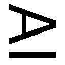
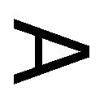
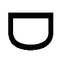
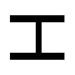
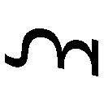
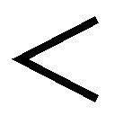

| 人生 ガガガ文庫 人生 | |
| 川岸殴魚 | |
| (2012) | |
小学館ｅＢｏｏｋｓ
人生
川岸殴魚
イラスト ななせめるち
登場人物
赤松勇樹（あかまつ・ゆうき）
九文学園一年二組。第二新聞部に所属。
遠藤梨乃（えんどう・りの）
九文学園一年二組。理系代表。
九条ふみ（くじょう・ふみ）
九文学園一年一組。文系代表。
鈴木いくみ（すずき・いくみ）
九文学園一年五組。体育会系代表。
二階堂彩香（にかいどう・あやか）
九文学園二年五組。第二新聞部の部長。勇樹の従姉妹。
「おまえは彼女をつくれ。一生をこの人とともに過ごしたいと思えるような、この人の一生を独占してしまいたいと思えるような、おまえはそんな彼女をつくるべきだ」
第二新聞部部長であり、僕のいとこのお姉さんでもある二階堂彩香は、僕の目をまじまじと見つめて言った。真剣そのものの表情。本気で言っていることだけはたしかだが......。
話の内容より、その唐突さにどういうリアクションを返せばいいのかさっぱりわからない。
「突然なにを言い出すんですか。部長」
「それが無理なら、親友をつくれ、ただの趣味の合う仲間ではなく、おまえの成功を本気で喜び、おまえが間違ったときには本気で意見してくれる親友をつくれ！」
元校務員室を借り受けた、畳敷きの部室に彩香の声が響きわたる。
「だからなんの話ですか？」
「それも無理なら、敵をつくれ。つねに動向を意識させられて、こいつだけには負けられないと思うような、おまえの人生につねに危機意識を与える敵をつくれ」
「あの、落ち着いてくださいよ。まったく話が見えませんよ」
「ふたりっきりのときは敬語はいいよ。勇樹、おまえは優しい男だ。ここに入部してくれたのも、私に気を遣って、頭数をそろえるためなこともわかっている」
それはそのとおりだ。第二新聞部は極小の部活動、部員はわずか五名。しかも部長の彩香をのぞいては幽霊部員ときている。部活として承認されるギリギリの人数だ。僕は、小さいころからお姉さんのようにかわいがってくれた彩香に気を遣って入部したのだ。
「私に気を遣ってくれたのは嬉しい。だけど、おまえは自分のための人生を始めるべきだ」
高校に入学して一か月。僕は僕なりに、高校生活をスタートさせたつもりなのだが......。
「あの、話が見えないんだけど？」
「勇樹。おまえは中学校時代、実に目立たない生命体だった。勉強でも部活でも、その他でも」
「別に目立たなくたっていいだろ」
「そう。別に目立たなくたっていい。だが、おまえはその目立たない日常を受動的に生きてきたように見える。他人の意見に流され、他人の行動に流され。メガネもかけているというより、メガネにかけられている感じだ」
「メガネは目が悪いからかけてるだけだよ。で、なんなの？ 僕へのダメ出し？」
さすがにちょっとイライラしてくる。
「まあ、待て。この第二新聞部は勇樹が新入部員になってくれたおかげで今年も部としての存続が可能になったわけだ。私はそのお礼がしたいと思っているんだ」
なんだ？ どんな急展開だ？
「で、どんなお礼をしたらいいか、どんなお礼こそが、本当に勇樹のためになるのかじっくり考えたんだ。それで私は勇樹に、人生をプレゼントすることにした」
「はあ？ 人生？」
「そう。新しい人生を知るためのきっかけをつくった。これを学生用の掲示板に貼ってくるがいい。それがおまえの人生を新しいステージへと押し上げてくれるだろう」
なんだかやっかいごとの予感しかしないセリフとともに、手渡された一枚のＡ４コピー用紙。プレゼントなのでしかたなく受け取る。
お悩み相談コーナー、相談募集中。
学校や人生のお悩みを大募集します。
些細な悩みでもＯＫ。第二新聞部が選んだ三人の回答係が親身になってお答えします！
「......人生相談のコーナーだね」
「そのとおり。新企画『お悩み相談コーナー』だ。この企画を勇樹に仕切らせてやろう」
やたらと大きなことを言われたわりには、ただ新企画を任されただけだった。
「なにをほっとした顔をしているんだ。人の悩みに耳を傾けることによって、勇樹の人生もより深く、より積極的なものになるんだ！ やってくれるな」
「まあ、これくらいなら、やれそうかな......」
「よし。じゃあ決まり。心配しないで、回答者には私がオファーを出しておいたから。勇樹は意見をまとめるだけ。じゃあ明日の放課後、部室でスタートだから。よろしく」
「ちょっと......、もう少し詳しく」
「あんまり詳しく言うとおもしろくないだろ。これも人生の修行だよ」
彩香はいたずらっぽい笑みを残して、すたすたと部室を出ていってしまう。
結局なんの追加情報もないまま、当日の放課後を迎えてしまった。せめて回答者がどんな人かくらいは教えて欲しかった......。まあ、とにかく部室に向かうしかないか。
「第二新聞部の部室はどこにあるのだ」
席を立とうとすると突然声をかけられる。
意思の強そうな目で僕を見つめる黒髪の女子。遠藤梨乃だった。
完璧な美貌を持つ上に、成績もダントツに優秀。特に理系教科は高校一年にして大学レベルに達しているらしい。
「あっ、もしかして、人生相談の......」
「そう。部長さんからお願いされた。聞いていないのか？」
学校が始まって一か月とちょっと経つが、梨乃と話すのはこれがほぼ初めてだった。
別に僕が嫌われているわけではない。クラスの誰もが梨乃と会話をしたことがないのだ。
梨乃は休み時間もなにやら難しい専門書に目を落とし、話しかけてはいけないオーラを出しまくっている。コミュニケーション不可能なのだ。
しかし、クラスナンバーワンの美少女を男子が見逃しておくはずがない。数名の勇者がお近づきになろうと愉快な冗談などを披露しにいってはみたのだが、
「レールガンで大気圏外に射出されてしまえ」
「ハマダラ蚊に刺されて、マラリアに感染しろ」
などなど、恐ろしいツッコミを頂戴してあえなく撃沈した。
そんなわけで、僕と梨乃はなにも話さず無言で部室へ向かって歩く。
「あら、梨乃さんと赤松さんですね。お待ちしてました」
部室の前で僕と梨乃に丁寧にお辞儀をする、ひとりの女子。
文芸部所属、隣のクラスの九条ふみだ。
その評判はすでに僕のクラスにも伝わってきている。梨乃と対照的に優しくおっとりとした笑顔。少したれた目と栗色の髪がなんとも優しげな雰囲気をつくり出している。
なにより梨乃とは違って正真正銘のコミュニケーション可能なキュートな女子だ。
「どうしたのこんなところで」
僕はいささか緊張しながらふみに話しかけてみる。
「部長さんに頼まれまして。お悩み相談コーナーの文系担当だとか」
文系？ ということは、梨乃は理系担当ってことか？ しかしよかった。梨乃とふたりだけなら息がつまってしかたなかったろうから、まともなふみがいてくれるのはすごく助かる。
「あ、そうだ。これを。お近づきのしるしに」
ふみから梨乃に手渡されたのは、細長いベージュの紐だった。なんだこれは？
「本に挟んであるしおり紐あるじゃないですか。あれの業務用の束です。これさえあれば、しおり紐つくり放題ですよ」
梨乃は渡された業務用しおり紐を睨みつけている。どうしていいのかわからないみたいだ。
「はい。自分用に頼みすぎてしまったので、プレゼントしちゃいます」
......相変わらず屈託のない笑顔を浮かべてはいるが。
......ふみもコミュニケーションが可能ではないタイプ？
いや、あまり深く考えるのはよそう。部室の鍵を開けて、ふたりを招き入れる。
「おっ。遅かったね！」
部室に入った瞬間、中から声をかけられる。
僕の視界に飛び込んできたのは、畳にごろりと横になる小柄な女子だった。ヒジをついて、駄菓子をぽりぽりとかじっている。他人の部室でなんというリラックスっぷり！
「あらあら、いくみさんじゃないですか。もしかして回答者ですか？」
ふみの口から出たその名前には覚えがあった。運動神経抜群。一年生ながら、ありとあらゆる部活からスカウトと助っ人の依頼がひっきりなしだという。
「ふむ。理系、文系、体育会系、それぞれの回答者。なるほど、理解した」
梨乃が言うとおり、どうやら相談を理系、文系、体育会系のエキスパートが答えるという企画らしい。それはさておき、いくみはどうやって入ってきた？
「あの、どこから入ってきたのかな？ 鍵がかかってたと思うんだけど」
「窓、開いてたぜ」
いくみは横になったまま、手にした駄菓子・ビッグカツで窓を指し示す。窓を閉め忘れていたのか......。
「いくみさん。ドアが閉まっていたのに。お行儀悪いですよ」
ふみにたしなめられても、いくみは平然としている。
「あれ？ ドア閉まってたのか。知らなかった」
「どういうことです？」
「ドアは確かめなかったからな」
まっさきに窓に向かったのか！ 猫かよ！
大丈夫か？ 理系、文系、体育会系それぞれのエキスパートだけど、人間としてのエキスパートが誰もいないぞ......。そんな僕の戸惑いをよそに、いくみが一枚の紙を差し出す。
「そうだ、部長さんから相談預かってきたぞ。それぞれ意見を出し合って、いい結論を出すようにって」
一年生です。まだ部活に入っていません。そろそろ入らないと、このまま帰宅部になってしまいそうなので、いいかげん決めようと思っているのですが、優柔不断で決めることができません。
部活動は学校生活で大きな比重を占め、今後の友人関係、さらにはモテ具合にも大きな影響を及ぼすわけですから、慎重によく考えて決めないといけない。そう思って、じっくり考えているうちに五月も中旬になってしまいました。
迷っていても時間が過ぎていくばかり。ここは自分の得意なこと、興味のあることを基準にシンプルに選ぼう、そう思い直したこともあったのですが、不幸なことに僕は理系、文系、体育の成績がどれも普通くらい。興味があることも性的な興味をのぞけば特にありません。そんな僕は何部に入るべきなんでしょうか？
Answer's
梨乃：日本は理系によって支えられている。
ゆえに将来も考えて理系の部活に入るべき。
ふみ：優柔不断部の初代部長になる。
いくみ：考えるから迷う！ ピンときたら全部入っちゃえ。
まずは三人の意見をそれぞれ短い文章にまとめて提出してもらう。これを元になんとかお悩み相談係としての結論を出さなければいけない。
「理系以外を選ぶのは人生をドブに捨てるようなものだ」
議論の口火を切ったのは梨乃だった。
「理系のメリットってなにかな？ 具体的におすすめしてもらえるとありがたいかな」
「この世界すべてが理系のメリットと言える。この世界のルールを理解せずに死んでいくなど、人生をドブに捨てていると思わないか？」
まさに梨乃らしい意見だ。
「体育会だってこの世界のルールを理解できるっ！」
まっさきに反論を開始したのはいくみだった。
「グラウンドを駆けずり回って、なにが理解できるのだ」
「努力、友情、勝利、それがこの世界のルールだ！」
それは『週刊少年ジャンプ』のシステム......。さすがの梨乃も困惑した表情を浮かべている。
「そういう筋肉重視のしくみではない。この地球がどのように太陽の周りを回っているかとか、そういうしくみの話をしているのだ」
「それはがむしゃらにだ！」
「がむしゃら？」
さすがの梨乃も当惑している。
「がむしゃらに頑張って太陽の周りを回っている！ 私たちも頑張ろうぜ！」
「そうではない。たとえばなぜ夕日は赤いのか、そういう問いに答えられる？」
「夕日に向かって全力でダッシュしやすいようにだ！」
「彼女はプロテインの飲みすぎなんじゃないか？」
梨乃はいくみの顔をしげしげと見つめながら言う。
「プロテインは無害だよっ！」
いくみは口を尖らせて抗議の意思を伝えるが、梨乃はまったく気にする様子がない。
「このような人間にならないためにも、理系の知識を深めるべきなのだ。体育会系は意味もなく走り回って大腿四頭筋を断裂するがいい」
「なんだとっ！ 理系こそ、顕微鏡でなんかひどいことになれ！」
「うさぎ跳びで両膝を疲労骨折するがいい」
「なんかの薬でなんか爆発とかしろ！」
いくみもムキになって必死で反撃しているが、勝負になっていない。
「まあまあ......。それで梨乃さんは何部に入ってるんですか」
いがみ合うふたりを見かねたのか、ふみが割って入る。
そういえば僕も同じクラスなのに、梨乃がなんの部活に入っているのか知らない。
「入ってない」
「なんだ、帰宅部じゃん！ 勝った！ 私は部活に六つ入ってるぞ！」
いくみが誇らしげに胸を反らす。部活に入っているかどうかで勝ち負けはつかないし、六つも入っているのもどうかと思うけど......。
「私は特別なの。両親が研究者で家のほうがむしろ設備が充実しているから。例外」
「入っていない人に推薦されても説得力ないなあ。これは勝ったなあ」
「私が部活に入っていなくとも、理系がベストの選択であることに変わりはない」
「まあ、梨乃の意見はわかったよ。将来を考えたら理系ってことで。そろそろふみの話に」
このままでは梨乃といくみの口げんかがひたすら続くだけだ。
「私は文系代表だからって文系の部活をおすすめするわけじゃないんです。人それぞれの適性と特徴があるんですから」
なるほど、これは誰でも納得できる非常に常識的な意見だ。
「彼の適性はなんなのか、じっくり相談を読んで考えたんです......それで、彼の特徴は優柔不断だなと」
常識的ではなかった。そこじゃなくない？ たしかに部活を決めきれない優柔不断っぷりはすごいけど、そこは活かしていく必要なくないか？
「それで、優柔不断部をつくれと......」
「はい、どうなるかちょっと想像してみたんですけど......」
ふみはもしも優柔不断部ができたらどうなるか、自らの空想というか妄想を語り始める。
新学期の騒々しさも少し落ち着いた五月の中旬。相談者石川は学生用の掲示板の前で立ち尽くしていた。
大切そうに握りしめた紙の束。そう優柔不断部の部員募集のチラシである。自らの優柔不断さを十全に役立てるべくつくった新しい部活動だ。何度もチラシを手に取り、掲示板へと貼り付けようとするのだが、そのたびに手が伸びきらずに戻っていく。
石川は迷っていた。この位置でいいのか？ ベストの角度は？ 裏向きに張ってしまったほうがむしろ目立ったりしないだろうか？ このままチラシをゴミ箱にぶち込むパターンは？
脳内を駆け巡る無数の選択肢。......無理だ。決められない、優柔不断すぎてチラシの位置が決められない。俺にはチラシは貼れない......石川があきらめかけたときだった。
「あの、新入部員の募集ですよね」
石川の目の前にたたずむ小柄な女子。定まらない目線、おどおどと緊張した様子。石川はひと目で直感した。この子も優柔不断だと。
「そ、そうかな。そんな気もするな。優柔不断部の募集をしようかと思ってたのかな。ゴミ箱に捨ててしまおうかとも思ってるけど」
「私も優柔不断で悩んでるんですよね......」
「そ、そ、そう。入部希望？」
「どうしようかな......」
小柄な女子は石川の前でもじもじと身体をくねらせる。
「そうだよね。決められないよね。優柔不断部では、優柔不断を克服するために、いろいろイベントをするかどうか迷ってるところなんだ。夏には海にいってみようかと迷ったり、クリスマスには部員同士ですっごく迷ったあげく決めたプレゼントを交換しようかどうか迷ったり、そんな感じの活動をするかどうかはまだ決めきれないんだ」
「うわー入りたいですっ！ って思うかどうか決めかねます」
「僕も誘うかどうか迷ってるよ」
「せめてチラシだけでも......やっぱり、いらないかな」
「そうだね。僕も右手で渡すのか左手で渡すのか決められないし」
「あの......いえ」
「そうだ！ ......まあ、いいか」
「実は私......やっぱり、あっ、でも......やっぱりいいです......そうだっ......いいです」
立ち去るべきか、もう少し話すべきか決めきれず。ふたりはその場でまごまごし続けた。照りつける強い日差しが夏の到来を予感させる。ふたりは無駄に日焼けしただけだった。
「......って感じで、優柔不断部をつくるのはうまくいかない気がします」
「長いよ！ ちょっと不安になるくらい長い！ しかもうまくいかないのかよ！」
僕は満を持してツッコむ。ただ日焼けしただけのエピソードなのに話が長すぎる。
「......いい話だなあ」
なぜかいくみは感動しているし！
「とにかく、自分の適性をもう一度考えてみようってことでいい？」
僕はなかば強引にまとめて、いくみの回答へと話題を移す。
「じゃあ、次にいくみの意見を」
「迷った時は身体で感じるんだ。私はいつもそうしてきた。頭で考えるから迷うんだ」
そう言い終えると、いくみは大きくうなずく。本人としては深い言葉らしい。
「......感じた結果、部活六つも入っちゃってるけど」
「身体が選んだ決断だからいいのっ！ そしておまえたちにも誰の意見が正しいか身体でわからせてやるっ！」
いくみはそう言うと、自分のカバンをごそごそと探り始める。なにをするつもりなんだ。
「ふふふ、たまたまいいものを持っててさ、これで理系、文系、体育会系どの部活に入るべきか決着をつけようぜっ......」
いくみのカバンから取り出されたのは......。
「キャベツ太郎ですか......」
ふみの言うとおり、かばんから取り出されたのはキャベツ太郎だった。
「違うっ！ これはただのおやつだ。下のほうに入っちゃってるから、ちょっと待って」
ベビースターラーメン、うまい棒、キャベツ太郎、ブラックサンダー、キャベツ太郎、フエラムネ、キャベツ太郎、どんどん焼き......キャベツ太郎。次々と駄菓子が出てくる......。
「キャベツ太郎の比率が多すぎじゃないですか」
ふみは部室の畳の上に積まれていく駄菓子を不思議そうに見つめている。
「別にいいだろっ！ なにがどうキャベツなのか研究しているところなんだ」
なんだかよくわからないことを主張しながら、なおもカバンを探る。
「......あったあったこれだ」
ようやくいくみが取りだしたのは小さな風船だった。小さなパックにたくさん入っている。
これは水を入れてふくらませる水風船だ。
「なぜこんなの持っているのですか？」
ふみが不思議そうに水風船を覗き込む。
「駄菓子屋さんで売ってたんだ。お買い得だったんだ」
「お買い得ならしかたありませんね。それで、これでなんの勝負を？」
「もちろん投げ合う！ いっぱい当てた人が勝ち！」
なんだかいくみが有利な勝負のような気がするけど......。
「あれほど、体育会系をコケにしてくれたんだから、もちろん勝てるんだろうな！」
いくみが挑発的な態度で梨乃に迫る。
「運動神経で圧倒できるとの判断だろうが、甘い。私が理論だけではないところを見せよう」
「ふふふ......なんとかに描いたなんとかにならないといいけど......」
激しく睨み合うふたり、そしてその間に鎮座するキャベツ太郎。帽子をかぶった青いカエルのキャラクターもどことなく緊迫感をもって見える。
「ふみはどうする？」
まだふみにはこの勝負でＯＫなのか聞いていない。
「おふたりがそれでいいのでしたら、私も構いません」
ふみは嫌がるかと思ったのだが、平然とした様子。
理系の梨乃はともかく、文系のふみになにか勝算があるようには思えないのだが......。
「よし、水風船で、決着だ！ 続け！」
いくみは元気よくそう宣言すると、窓から飛び出していく。
また窓から......と思ったけど、靴が窓の外にあるのだからしかたがない。
こうしてどの意見が正しいのか、水風船の投げ合いで決することになったのだった。
三人に体操着に着替えてもらって、学校から五分程歩いた場所にある公園に移動する。
公園の中央にある広場には芝生が張られ、広々とした気持ちのいい空間が広がっている。
まだ五月の中旬、水遊びには少々早い。しかし、それぞれ水浸しになるのは自分ではないと思っているようで、誰ひとりそんなことを気にしていない。
公園へ向かう間に、簡単なルールが話し合いで決まっていた。
「じゃあ、最初に三十分の準備時間をおいて、その後、勝負を三十分間。その間に一番水風船を当てられなかった人が優勝。ってことでいいよね」
僕がルールの確認を行うと、三人は大きくうなずく。それぞれに水風船を配布して、準備の時間がスタートした。みんな水道のある場所に走っていく。
「じゃあ、三十分後に勝負スタートだからね」
僕が声をかけるが誰からも返事がない。みんな本気だ。
僕は芝生に腰を下ろして、ぼんやりと雲を眺めながら、スタートの時間になるのを待った。
お悩み相談コーナーが、まさかこんな展開になるなんて思ってもみなかった。我が部の発行する学校新聞『九文ジャーナル』は毎週一回の発行。毎週この三人のこんな議論を仕切ることになるのか......。大丈夫か？ まったくやっていける自信がない。
僕の携帯電話のアラームが、まもなく準備時間が終わることを告げた。
芝生から立ち上がって、三人の状況を確認する。
いくみは芝生の広場の隅に設けられた水道で必死に水風船の作成をしている。ほかのふたりはトイレの中の水道で作っているようで。ここからは見えない。
「私はいつでもいいぞ、かかってこい」
広場の真ん中でいくみが叫ぶ。
しかし、梨乃とふみはまだ姿を現さない。自分を囲むようにたくさんの水風船を配置したいくみが、ひとり寂しくたたずんでいるだけだ。
刻々と開始の時刻は近づいてくるが、それでもふたりの姿は見えない。おそらく作戦なのだろう。
僕は時計を見ながら、予定どおり開始を宣言する。
その直後だった。芝生広場を仕切る植え込みを越えて、水風船が飛来する。
正確にいくみめがけて弧を描く水風船。
「危ないっ！」
軽やかにスカートをひるがえして避けるいくみ。水風船が芝生の上で炸裂する。
かなり遠くからの投擲にもかかわらず正確だ。もしこんな距離を正確に投げられる人間がいるとしたら、ターゲットにされているいくみ以外に考えられないのだが......。
「これが人類の知恵！」
植え込みの向こうから、梨乃の声が聞こえる。
梨乃の手には束ねられた二本の紐......。あれは業務用しおり紐だ！
その先にはコンビニの袋が結びつけられて幅広くなっている。広げれば眼帯のような構造だろうか。梨乃はその部分に水風船を乗せると頭上でぐるぐると回転させ、いくみを狙う。
あれは投石具だ。ふみから貰った紐が役に立っている！
梨乃の投石具から放たれた水風船が再びいくみを襲う。すんでのところで身をかわすいくみ。
「投石具。遠心力を利用することによって、人力では届かない距離でも投擲可能。いくみさん、すこしは勉強になった？」
勝ち誇った笑みを浮かべた梨乃の顔に水風船が命中する。
いくみが手に持っていた水風船を投げつけたのだ。当然素手で。しかも梨乃が投石具を使ったよりもまっすぐ一直線に。
「そんな馬鹿な......。道具なしで、私よりも攻撃範囲が広いなんて......」
「これがスリー・クオーター。あの名投手山本昌のフォームだ！」
いらぬ投球フォームの解説つきだ！
梨乃めがけて水風船を連続で投げ込むいくみ。投石具ではこんなペースでは投げられない。
梨乃は防戦一方、いくみに追いかけ回される。
「そこまでです、いくみさん！」
いくみの猛攻撃を止めたのはふみの声だった。いつの間にかいくみの背後に回り込んでいる。
「ふみ、遅い」
梨乃は逃げ回って乱れた息を整えながらふみに言う。
「どういうことだ......」
ふたりに挟まれる形になったいくみは動揺を隠せない。
「投石具だけで、勝てるとは思ってなかったから」
「私と梨乃さんは電撃的に同盟を結んだのです。まさに赤壁の戦いの劉備と孫権のごとく」
「ずるいぞ」
「はい。ずるです。『兵法とは詭道なり』です。ここがあなたのレッドクリフなのです。かくごっ！」
ふみがいくみに向かって水風船を投げつける。
しかし見事なまでの女の子投げ！ ぴょこんと上がる後ろ足もかわいらしい。
水風船はいくみのはるか手前に落ちる。すこし離れたゴミ箱にゴミを投げるくらいの勢いだ。
「危ないとこだったよ！ 謎の英単語を使いやがって！ とうっ！ とうっ！」
危機を脱したいくみが反撃に出る。次々に水風船がふみにヒットする。
「きゃあぁ！ 梨乃さ～ん」
梨乃が植え込みから出て救出に向かう。
今度は梨乃がいくみの背後を襲う。もう投石具は使っていない。素手だ。
いくみの背中に狙いを定め、大きく振りかぶる。
しかし、見事なまでの女の子投げ！ ふみと同じフォームだ。
いちおう、梨乃とふみで挟み撃ちの形は成功しているのだが、ちっとも当たらない。いくみは軽やかなステップで、前後から飛来する水風船をことごとく避けてしまう。
「赤松、なにやってるの！ 早く助けなさい」
梨乃がびしょ濡れになりながら叫ぶ。
僕？ 僕に参戦するように言っているのか？ もう完全にルール違反だけど、これだけ一方的だとなんだか可哀想ではある。もう勝負は決まったようなものだし......。
転がっている水風船を拾うと、気づかれないようにいくみに向かって投げる。
かわされた！
まったくこっちを見ずに。僕の水風船にも気づいていないようだったのに。
僕はもうひとつ水風船を拾うと、慎重に狙いを定めてもう一度投げつける。
当たらない！ まるで水風船が身体を通り抜けたようだった。両手をだらりと垂らし、リラックスした体勢で、こちらを見ることなく、最小限の動きで飛来した水風船をかわす。
「これは、剣の達人が最終的に到達するとされている無形の位ではないですか！」
ふみがその動きに驚きの声を上げる。無形の位？ 本当に？
もう一度水風船を投げつけてみるが、水風船は虚しくいくみの身体のそばを通過していく。
「いくみさん。どうやって、水風船を避けているんですか？」
「心を空っぽにすれば、自然になんとなくわかるんだ」
「すごいです。本当に達人です」
感心しきりのふみ。なんだかわからないが、とにかくすごいっぽい。
梨乃がせめてひとつくらいは、としつこく水風船を投げているが、まったく当たらない。
「あきらめましょう。梨乃さん」
ふみはそう言うと、手にした水風船を芝生の上へとぽとりと落とす。
「いくみさんの水風船は天地とひとつです。勝てっこありません」
「ふほほ。わかってくれたかい。むぎゅーのくらいだよ」
いくみはいかにも悟りを開いたような穏やかな表情でふみの肩にそっと手をやる。ぜったいに無形の位なんて知らないのに......。
「いくみさんが、あそこまでの境地に達しているなんて。もはや動きから哲学を感じました」
「ふみもヒジをもっと伸ばして投げれば、到達できるよ。むぎゅーのくらい」
適当なことを言ってやがる。
「運動神経がいいとは想定していたけど、まさかここまでとは」
梨乃は髪からしたたる水を絞りながら、悔しそうな表情を浮かべている。
「でも、いいものが見られました。あの自然体で無駄のない動き。ちょっと感動してます」
「えへへ、そこまで、褒められちゃうと、なんか照れるな......むむっ！」
いくみの表情が一変する。急に真剣なまなざし。その視線の先にはふみの胸が。
びしょ濡れになったせいで、体操着がぴったりと肌に張り付いて、体形が露わになっている。
「ふみ......おっぱい、おっきいんだね」
いくみが胸をじっとりと見つめながらうらやましそうな顔で言う。
「ちょっと、やめてください」
ふみがびっくりして胸を両手で覆う。その手を押しのけるようにいくみの手が伸びる。
「なにするんですかぁ！」
抗議を無視して、躊躇なく胸を鷲摑みにするいくみの両手。
「やめてくださぃ」
顔を真っ赤にしながら、必死にいくみの手から逃れるふみ。
さんざんにふみの胸を蹂躙したいくみの両手がだらりと垂れる。さっきの無形の位と同じ姿勢だけど、なんとも悲しげな表情。
「......私の負けだ」
がっくりとうなだれるいくみ。
「なんでですか！ 負けないでください」
「ふみこそむぎゅーのくらいだ。すっごくむぎゅーなくらいだっ！」
「そんな位はないですよ！」
「恥ずかしい。こんな、ぺたっとしたくらいの私が勝った気になってたなんて」
「大逆転だね」
そう言いながら、梨乃の視線もふみの胸へ。なんだかおっぱいに話しかけてるみたいだ。
「やめてください！ いくみさんの勝ちでいいです。恥ずかしいです」
胸を両手で隠し、もじもじしている。
「恥ずかしいのは私と梨乃だよ」
「なぜ私も入ってる！ 私はふみサイドだ！」
「またまた、おもしろい冗談を」
「冗談ではないっ！ ネンザしろっ！」
梨乃が足下の水風船を拾っていくみに投げつける。しかしいくみには当たらない。
なんだかよくわからない展開ではあるが、ふみの勝ちということになった。ってことは相談者の石川くんには文系の部活に入ることをすすめることになるわけだけど......。とてもじゃないが、最終的にはおっぱいの大きさが勝負を決したとは説明できそうにないな。僕はまだしつこく水風船を投げ続ける梨乃をぼんやりと眺めながら、そう思ったのだった。
【回 答】
強引にどれかに絞ったりせず、じっくり考えて大丈夫ではないでしょうか。理系、文系、体育会系、それぞれかなりノリが違うようです。
ちなみに、激論に次ぐ激論の結果、我々のなかでは、文系をおすすめすることになりました。もし、本当に迷って決められないとしたら、参考にしてみてください。
あわてると、あまりいいことはありません。
自然に決まるまで時間をかけてみましょう。
◎最後にお悩み相談コーナー一同から────────────────
メッセージ
心を空っぽにすれば、自然になんとなくわかるんだ。
【おまけの相談】
中学以来あまり会っていなかった友人に久しぶりに会ったところ、
「なんだか斧使いっぽくなったね」
と言われたのですが、どういう意味でしょうか？ 今後はどうしたらいいんでしょうか？
不安でご飯をもりもり食べてしまいます。
（二年 鬼頭剛）
＊Rino's Answer＊
データによると、パワーに頼りがちな人間が
斧使いっぽいと認定される。ノートパソコンなどを
見せびらかして、知性をアピールしないと
将来嚙ませ犬的なポジションを与えられるだろう。
＊Fumi's Answer＊
味方がピンチのときにかばってくれそうなど、
斧使いにはよいイメージもあります。
鞭使いっぽいって言われるよりマシだと思って、
気を強く持ってください。
＊Ikumi's Answer＊
人を斧使い呼ばわりするヤツなんて
友達じゃない！
『バカにするんじゃねえ！』と
斧を振ったときの風圧で吹っ飛ばしてしまえ。
【相 談 ２「仲良くなる方法がわかりません」】 二年 増川弘幸
僕は、人と仲良くなる方法がよくわかりません。
いろんな人とそれなりに仲良くなって、良好な関係を築いて、うまいこと人生をやっていきたいと思っているのですが、どうもいい感じに仲良くなることができていない気がします。
あとどれくらい仲良くなったのか、距離の測りかたがどうにもよくわかりません。
ぜんぜん仲良くなってなかったのに、自分では友達のつもりで親しげにすると気持ちが悪いでしょうし、逆にもし相手が友達だと思っていたら、あんまり他人行儀なのも悪いし。
仲良くなってもしばらく会う機会がないとなんかぎくしゃくしてしまって、仲の良さがリセットされてしまいます。このままでは一生誰とも仲良くなれないんじゃないかと不安になってしまいます。この世は所詮コネです。コミュニケーションスキルをどうにかしないと、ほかの人に後れをとってしまいそうで怖いです。
Answer's
梨乃：スキンシップに頼ることが有効。
ふみ：話し上手より聞き上手。。
いくみ：リズムとテンポでどうにかなる。
まさにいまの僕にぴったりな悩みだ。
一回目のお悩み相談コーナーが終わっても、三人との関係が深まるということもなく、元どおりな感じになってしまったのだ。
梨乃は相変わらず、クラスでは誰とも話さず黙々と読書。何度か話しかけてみようかとも思ったのだが、やっぱり人を寄せ付けないオーラを出していて、どうにも声をかけづらい。そもそも女子に話しかけるだけで微妙に緊張するのだから、僕にはハードルが高い。
ふみといくみはクラスが違うし、それぞれの友達づきあいや、各種部活の助っ人で忙しそうに見える。
ふたりとも廊下ですれ違ったら、手を振ってくれたりはするのだが、あわてて手を振り返すだけで精いっぱいだ。こんなものかと一抹の寂しさを感じつつ一週間が経過し、部長からメールが入る。第二回お悩み相談コーナーを開催せよとの指示だった。相談が徐々に集まってきたのか、複数の相談からひとつ選ぶようにとのこと。僕は迷うことなくこの相談を選んだ。
一週間ぶりに部室に回答者が集まってちゃぶ台を囲む。梨乃、ふみ、いくみの三人。
一回目の反省を踏まえて、回答をメールで送ってもらうことにしたのだが......。
よく考えたらコミュニケーションに難がある人ばっかりだった......。
「梨乃は人間関係で悩んだりしないのかな？」
僕は勇気を出して、本題に切り込んでみる。
「ふむ......。まったく問題を感じていないが」
「本当に？ 人づきあいでストレスとかない？」
「なぜ？ バイカル湖の水くらいクリアだが」
梨乃は意外なことを聞かれたといった表情だ。教室でひとりぼっちでもなんら問題だとは思っていないようだ。
「ウソだあ。梨乃は教室で誰とも話さずひとりぼっちらしいじゃん」
いくみが僕の踏み込まなかった領域まで鋭くえぐり込む。
「......あれは適切な距離をとっているのだ」
「適切な距離ってレベルじゃないだろ。ボロ勝ちしてるときのゴールキーパーみたいにぽつーんとしてるって聞いたぜ」
「だから、誰しも快適な距離があって、たとえるならば金属結合と共有結合の違いだ」
どっちが近くてどっちが遠いのかわからないけど、梨乃としてはワザとやってるだけで、孤独感は感じていないと主張しているのだろう。
「よくわかんないけど、ウソなことだけはわかる。梨乃は仲良くするのができない子だ！」
いくみは容赦なく断言する。
「で、できる。だからあえてしていないと言っているのが、なぜ理解できない」
梨乃もムキになって反論する。
「じゃあ、どうするのさ。仲良くなる方法を教えてもらいましょーか！」
いくみが勝ち誇ったような笑みを浮かべて身を乗り出す。
「会話のみで距離を詰めようとするから、難易度が上がる。スキンシップをとることだ」
梨乃の声に力が戻る。どうやら自分で語れる領域を見つけたらしい。
「人間も所詮は動物の一種、やっぱり感情も脳内のホルモンバランスによって生み出された生理現象にすぎない。ドーパミン、エンドルフィン、アドレナリンの量によって人間は幸福感を感じるし、セロトニンのレセプターが......」
......力が入りすぎだ。会話をキャッチボールにたとえるなら、こめかみへのビーンボール。どう考えても人間関係での距離の詰め方について語るべき人材ではない。
「なに言ってるのか全然わかんないよ。聞いてたら、おなかが痛くなってきた」
いくみはちゃぶ台にアゴをのっけてうらみがましい目で梨乃を見つめている。あっという間に集中力を持っていかれたみたいだ。
「......会話がうまくない人間が急にうまくなるのは絶望的だと言える。ゆえに、会話以外の部分で補うのが理にかなってると思う。アフリカに住む類人猿の一種ボノボは......」
「ここからボノボかよ！ 聞いてるのが、ボノボ本人でも『もういいよ』って言うよ！」
いくみが畳の上に仰向けになって、手足をじたばたさせ始める。梨乃の話が長すぎて我慢できないんだろうけど......子どもか。
「いくみさんも四肢を自在に動かし始めたことですし、梨乃さんもかいつまんでお話を」
ふみがこの状況を見かねて梨乃の話の収束を促す。
「親愛の情を言葉じゃなく、身体で表現すればいいって話。肩を叩いたり、手を握ったり簡単なことだ」
「だったら、さっさとそう言えよ！」
さらにいくみが手足をばたばたさせる。
「なるほど......。身体で表現ですか。張飛と馬超が一昼夜にわたる一騎討ちを通して、互いを認めあった例も思い出されますね」
「......う、うん。思い出されないけど、そのようなものかな」
ふみの挙げる例も例だ。梨乃が戸惑いを隠せない。
「じゃあ梨乃さん、さっそくやってみてくださいよ」
ふみが屈託のない笑顔で梨乃に向かって言う。
「えっ？」
「せっかくいいアイディアを披露したんだから、見本を見せればいいと思うんですよ。ほら赤松さんも立って」
「ちょっと待て。実践は......」
ふみに手を引っぱられて強引に立たされてしまう。
「じゃあ、どうぞ」
無言で向かい合う、梨乃と僕。さっきまで勝ち気で自信に満ちあふれていた梨乃が急に借りてきた猫のように縮こまってしまっている。
「大丈夫？」
僕の言葉にもおどおどとうなずくだけだ。
「あら、もしかして、見本はまずかったですか？」
「そ、そんなことはない。せっかくの理論だ......。もちろん実践できる」
梨乃も強情だ。前回もそうだったが、理論だけだと思われるのがどうにもイヤみたいだ。
意を決したように大きく一度深呼吸すると、僕の前に進み出る。
無言で向かい合う僕と梨乃。
梨乃が急速にもじもじし始める。
「やあ、げ、元気」
梨乃はそう言うと、僕の腕をちょこっと指でなぞるように触れる。指一本で軽く。
梨乃は自分の理論に反して、まったくボディーコンタクトが苦手だった。顔が真っ赤になっている。そんなに照れられると、僕もなんだか恥ずかしくなってしまう。
「なんだよっ、もっとズバッといけよっ」
いくみのヤジが飛ぶ。なんだかセクハラおやじスタイル！
「どう、調子は？」
梨乃は真っ赤になりながら、僕の脇腹から腰にかけて指を走らせる。
く、くすぐったい！
恥ずかしいのだろうけど、ソフトタッチすぎてむしろエロい感じになってしまっている。
「ぜんぜんダメじゃないですか！」
「私は、別に会話で困ってない......。それに相手が......男だと......」
うつむきながら、か細い声で言いわけする梨乃。
「あれ、梨乃さん照れてませんか？ もしかして、男性が苦手なんですか？」
ふみの言葉で梨乃の顔がますます赤くなる。
「そんなことはない！ 男性なんて、単にＹ染色体がひとつあるだけの違い、なぜ苦手にしなければいけないのだ」
「だって、照れてますよねえ？」
「うん、照れてる、めちゃ照れてる」
大きくうなずくいくみ。
「だ、誰が照れるんだ。平常心だ！」
梨乃は勢いにまかせて僕の手を握る。手が熱いし、ちょっと小刻みに震えている。やっぱり男が苦手なのだろう。
「............」
梨乃は手を握ったまま、ひと言も発さない。お互い顔を赤らめ合いながら、無言で見つめ合う。ここからどうしたらいいんだ？
「なんか喋りなよ！」
いくみにはやし立てられて、ようやく、梨乃が口を開く。
「どう？」
「どうって......なにが？」
「それは......、地球環境とか、森林破壊とか......どう？」
それは手をつないでする話だろうか？ 梨乃は完全にパニックに陥っている。
「深刻な問題だね」
「......だよね」
梨乃の声がどんどん小さくなっていく。手をつないでいるのに、むしろ盛り下がるって、なんだこれ？
「距離がむしろ広がってないか？」
無言で手をとりあう僕と梨乃を見ていくみは怪訝な顔をしている。
「間違いないのは、そろそろふたりを解放してやらないと、なんだかかわいそうだということですね。私の意見に移りましょうか」
ようやく僕と梨乃は解放され、元の位置へと座り直す。
梨乃はまだ赤い顔でうつむいている。よっぽど恥ずかしかったのだろう。
「じゃ、じゃあ、ふみの意見を」
「はい。我が家、九条家は昔から、コミュニケーションスキルを大切にしてきたのです。なかでも代々伝わる会話の秘伝がありまして、『話上手より聞き上手』。この言葉が親から子へと何代にもわたって伝えられてきたんです」
なんだか普通によく聞くコツなんですけど。誰でも知ってる秘伝って......伝えるのが面倒になりそうだ。
「すごいな秘伝。私にも伝授してくれよ」
こんなありがちな秘伝にもかかわらず、いくみは興味津々だ。
「いいでしょう。代々伝わる聞き上手。その中でも三大奥義と呼ばれる合いの手があるんです」
「三大奥義！ すごいな」
そしてふみは重々しく間をあけて、合いの手三大奥義とやらを公開する。
「『おんなじだね！』『気が合うね！』『奇遇だね！』。この三つこそが三大奥義と呼ばれる合いの手。これを返しておけばあとは相手が勝手に盛り上がってくれると伝えられています」
「ふみの家は代々、人をなめてるのか？」
梨乃の言うとおり、適当に話を合わせとけ的な非常に雑な秘伝だ。しかも語彙からして最近できた秘伝な気がしてならない。
「そして、そのうえに使用を禁じられた封印されし究極の返事があります」
「究極？」
いくみだけが食いついている。
「はい。『おまわりさーん！』です。これは絶対に使用してはいけません」
そりゃそうだ。おまわりさんが来ちゃうからね。
「要するに話し上手になるより、聞き上手をめざしたほうがいいって話ね」
「はい、そういうことなんです」
まあ、いいか。三大奥義はさておき、聞き上手になるのは、話すのが苦手な人にとっては有効な手段かもしれない。
「じゃあ、次いくみの意見。テンポとリズムっていうのは？」
「相談者の人も梨乃も難しく考えすぎなんだよ。仲良しかどうかなんて、決まりはないんだからさ、考えずにテンポよく話してれば、自然に仲良しっぽくなるんだって」
「テンポよく話せれば苦労しない。できないから苦労するのだ」
梨乃はいつのまにかコミュニケーションがうまくできない派の代弁者になってしまっている。
「考えるからだよ。どうせたいしたこと話してないんだから大丈夫だって」
「たしかに教室ではしゃいでるヤツの会話を聞いてみると驚くほどつまらないことは多いが......。考えずに話すことなど可能なのか？」
梨乃はさっそく腕組みをして考え込んでしまっている。
「ふふふ。梨乃にはまだ難しいかな。私ほどの達人になると、つねになにも考えずに話ができるぜ」
自信満々のいくみ。考えずに話していることを自慢される日が来るとは思わなかった。
「いくみさん。お手本が見てみたいです」
ふみがまたしても実演を迫る。
「いいだろう。簡単なことだ。ツッコミに回ればいいんだよ。テンポよくツッコんでおけば、いい感じになるんだから」
「じゃあ、さっそく」
ふみはそう言うといくみの手をとって立たせると、続いて僕の手を引く。
えっ？ また僕？
「赤松さんにおもしろい話をしてもらって、いくみさんがツッコミましょう」
「おもしろい話って、急に言われてもハードル高いよ」
「大丈夫。赤松さんならできます。私はけっこう赤松さんのこと買ってるんですよ。メガネに隠された瞳の奥になにか燃えるものを持っていると。いつかそのメガネを外したとき、この学園に黄巾族ばりの旋風を巻き起こす人なんじゃないかと」
評価してくれるのはありがたいが、メガネを外しても前が見えなくなるだけだ。それに黄巾族はすぐに鎮圧されてしまった。
「さあ、おもしろい話をひとつ」
ふみは僕の制服の袖をぎゅっと引っぱっておもしろい話をおねだりする。こんなふうにねだられるとちょっと無理してみるかって気にもなる。梨乃と違ってボディーコンタクトが上手だ。そうだな、温泉の話でもするか。家は家族そろって目が悪いんだけど、去年家族で温泉旅行にいったときに、父親が露天風呂だと思って、お風呂の隣の池に入ってしまった。まあそれだけの話だ。
「えーと、じゃあ」
僕が話し出すといくみが身を小さく屈め身構える。猛獣が獲物を狙うかのような体勢だ。そんなに獰猛なツッコミが必要な話じゃないんだが......。
「僕の家は、家族そろって目が悪くて」
「ウソつけ！」
僕の胸を勢いよく叩くいくみの手。速い！
「いやいや、本当に」
「何人家族だよ！」
「四人家族なんだけど」
「普通かよ！」
「そこじゃないんだけどね。本題に入らせてくれるかな」
「うん。どうぞ」
そこは素直なんだ......。
「それで目が悪いんだけど。で、去年家族で温泉旅行にいってね」
「いくなよ！」
「いくよ！ 温泉いかせてよ！」
「それで、父親も目が悪いんだけど、露天風呂にいったときに、お風呂の隣にあった池に入っちゃって」
「おまわりさーん！」
「こらこら、事件性はないから、封印された秘伝使わないでくれる？」
いくみのせいでなんだかよくわからないことになってしまった。ぜんぜんツッコミに向いてないじゃないか。
「で？ いつおもしろいところがくるのだよっ！」
「話は終わっちゃたから！」
なんだよ。あれだけツッコんでおいて。ちゃんと話聞いていたのか？
「終わったのか......」
「うん。お父さん水が冷たくてびっくりしてた」
「そうか......」
「............」
「うむ。実験は失敗だな」
梨乃が静かにうなずく。
「なぜだ、あんなにテンポよくツッコんでるのに。なんでうまくいかないのだ......」
それは話を聞いていないからなのだが。やっぱりなんの訓練も積まずに、アップテンポなツッコミなんてできるはずがない。
「こうなったら、三大奥義を授けてもらうしかないかもね」
僕は冗談のつもりでそう言ったのだったが、
「やっとその気になってくれましたか」
ふみの目は真剣そのものだ。
「伝授したかったの？」
「はい。せっかく奥義の存在を明らかにしたのに、軽くスルー気味だったので正直なところショックを受けておりました」
そうだったのか......だったら言ってくれればよかったのに。
「先生、私に奥義を授けてください！」
いくみは、ふみの前に進み出ると深々と頭を下げる。
「聞き上手になりたいですか？」
「先生、聞き上手になりたいです。あとバスケもしたいです！」
ふみが頭を下げるいくみの肩にそっと手を添える。
「わかりました。ではみなさん明日のこの時間、昆布とお米、もしくは干し肉を持ってここに集まってください」
ふみが珍しく少し厳しい表情を見せる。
昆布とお米？ ギャラ的なもの？ っていうか僕たちも弟子入りすることになってるの？
翌日、僕は家の台所から拝借してきた乾燥昆布と二合ほどのお米を携えて部室へと向かう。
どうやら九条家では、束脩といって、弟子になるために師匠に飲食物を納める伝統的な儀式があるらしい......。
部室に入るとすでにいくみが正座をしてふみの到着を待っていた。ヒザの前にはおにぎりとビーフジャーキー。両方コンビニで買ってきた感じまるだしだ。
「なぜ私まで弟子入りしなきゃいけないのだ」
続いて現れた梨乃の手にもしっかりと昆布とお米が握られている。文句を言いつつも、ちゃんと持ってきているのが偉い。
三人がそろうとすぐにふみが部室へ入ってきた。まるで全員が集合するのを待っていたかのようなタイミング。おそらく本当にちょっと離れたところからみんなが来るのを待っていたんだろう。
「みなさんおそろいのようですね」
横一列に並んで座るとその前にふみが相対して座る。いつものふみよりなんだか威厳のある口調だ。
「みなさんの九条流仲良し術への入門を正式に許可します」
差し出された昆布とお米をちらりと確認する。
「ありがとうございますっ！」
いくみが畳に額をすりつけんばかりに頭を下げる。本当に雰囲気に飲まれやすい子だ。
「では、さっそく奥義の伝授を」
「早くないか？」
梨乃がややあきれた様子で言う。
「本当は基礎練習から始まって、山に籠ったり、滝に打たれたりするのですが、お悩み相談の締め切りがあるでしょうから、省略させてもらいました」
ふみはすっと立ち上がるとおもむろにストレッチを始める。腕を伸ばし、前屈、上体反らしを何度も繰り返す。
「短期間で覚えるには実践が一番。代々伝わる三大奥義のすさまじさ、身体で覚えていただきます。さあ梨乃さん」
「私が？」
「大丈夫。梨乃さんはふつうにお話しするだけです。私がその会話見事盛り上げてごらんにいれます。さあ」
しぶしぶ、ふみの前に立つ梨乃。ふみは三大奥義、「おんなじだね！」「気が合うね！」「奇遇だね！」を小声で何度も繰り返し、小さくうなずく。どうやら始まるようだ。
「あら梨乃さん。こんなところでお会いするなんて、奇遇ですね！ なにしてるんですか」
「お悩み相談コーナーの回答者だ」
「おんなじです！ 気が合いますね」
「そ、そうだな」
「いい天気ですね」
「そうだな。私は雨のほうが好きだけど」
「おんなじです。私も雨が好きです。気が合いますねっ」
ちょっとオーバーなくらいに同意するふみ。本当に気が合うと思っているのか？
「知ってます？ 駅前に新しいカラオケ屋さんができましたよね」
「うむ。カラオケ嫌いだから行かないが」
「おんなじです！ 私も嫌いなんです。あの新しいカラオケ屋さん行かないだろうなぁ、って思ってたんですよ。今度一緒に行かないでおきましょう」
「そ、そうだね」
あまりにも強引な同意。梨乃が戸惑いの表情を浮かべる。
「カラオケ屋さんを無視してそれぞれ家に帰りましょう。昨日家ではなにしてました。新しく始まったドラマ見ました？」
「見てない」
「奇遇ですね。私も見てないです！ ドラマなんて永遠に始まらなければいいのに！ なにか好きな番組ありますか？」
「ウチ、テレビないんだよね」
「うっ！ おんなじです！ ウチはコタツがないです！ 家電不足仲間ですねえ」
「コタツは三台ある」
どうなってるんだ梨乃の家。
「き、奇遇ですね。三個......ウチにも三個のものがたくさんあるんですよ」
なんだかふみの声が小さくなってきた。
「たとえば？」
「その......車のタイヤとか」
タイヤ三個しかないの？ 一個どこにやっちゃったんだよ。
「ほかにも三個のものがものすごくあります。例は挙げないですけど」
「興味ないから、私も聞かないが」
「梨乃さん、普段は家でなにしてます？ 昨日家に帰ってからなにしてました？」
「まず、ペットのうずらに餌をあげたでしょ......。それからご飯食べるの面倒だから、サプリメントですまして、培養してた大腸菌のコロニーを確認して、ウニの卵割のスケッチして、そのあと、ネットでちょこちょこ買い物して」
すごい。普通はやらないことしかやってない。
「なに買いましたか？」
ここしかおんなじなところを見いだせるチャンスがないと踏んだのか、ふみが食いつく。
「駒込ピペット」
なに買ってるんだよ！ ふみも露骨にがっかりしてるじゃないか。
「それからもう一回ウニのスケッチして、寝た」
「寝た！ おんなじです。私も昨日寝ました！ 奇遇ですね」
寝るところまでひとつも共通点なかったのかよ。
「ふむ......気が合うのかも......」
さすがに悪いと思ったのか、無理やり気が合うことに同意する梨乃。しかし、三大奥義が敗れ去ったのは明白だ。
ふみは相当ショックだったみたいで、ちょっと目を潤ませている。
「梨乃さんおかしいです。本当は『おんなじおんなじ！ 気が合うねっ！』って盛り上がれるはずなんですっ！ こんなに合わない人、普通いないです。なんて奇妙な夜を過ごしてるんですかっ！」
「なんか、ごめん。わざとじゃないんだが......」
よっぽど悔しかったのか、ふみはぱたぱた足踏みしながら抗議している。
なんだかいたたまれない。なにかフォローしないと。
「ニュアンスは伝わったよね」
「うん。よかったよ。ナイスファイト」
いくみも交代するサッカー選手をたたえるような拍手でふみを迎える。
「お米と昆布はお返ししますっ！ でも、私を倒したとしても、仲良し術四天王のなかでは私は最弱。残りの四天王である、おじいちゃん、おばあちゃん、ジョージおじさんのいずれかが必ずや梨乃さんと仲良しになってくれるはずです！」
「なぜ私がおばあちゃんと仲良しにならねばならないのだ？」
ふみはベソをかきながら、昆布をひとりひとりに返却すると、部室から逃げるように駆けだしていく。
「ちょっと......」
あわててふみを呼び止めるが、こちらを振り向こうとしない。
「梨乃は別にふみが嫌いってわけじゃないよね」
「うん。むしろ楽しく会話できたほうだと思ってる」
「ほら、大丈夫だから」
僕の声は聞こえたはずなんだが、ふみは立ち止まることなく、小走りに校庭を去っていったのだった。
こうして、ふみの仲良し術は梨乃の奇怪な日常の前に破れ去った。仲良し四天王の最後のひとり、ジョージおじさんとは何者なのか。それは謎のままであった。
【回 答】
仲良くする手はいろいろとあるようです。スキンシップを積極的にとってみたり、聞き上手を目指すのもよいかもしれません。
そして話すときはあんまり内容のことは考えず、テンポとリズム感でどうにかなる気もします。ひとつ間違いなく言えることは、相手が楽しいかどうかは案外わからないものなので、話が盛り上がってないんじゃないかとか、自分の話はおもしろくないんじゃないかとか、そんなに気にすることはなさそうです。
◎最後にお悩み相談コーナー一同から────────────────
メッセージ
教室で明るくはしゃいでるヤツの会話って、よく聞くとあんまりおもしろくないじゃん。
【おまけの相談】
バンドをやっている。メンバーはギターの俺、DAICHI、ベースのEITA、ボーカル、ドラムのTOSHI-HIKO、シンセサイザーのHIRA-YAMAの五人。バンド名はそれぞれの頭文字をとって「DEATH」だ。しかしボーカルのが脱退すると言い出した。ボーカルとしてはどうでもいいが、が抜けるとバンド名がDETHとなってしまう。
正直母音の脱退は痛い。どうしたらいいだろう？
（三年 DAICHI）
＊Rino's Answer＊
大気中に漂うアルゴンガスを
メンバーに入れ、を補う。
＊Fumi's Answer＊
あだち先生を
なんとかスカウトしましょう。
＊Ikumi's Answer＊
あだち先生をスカウトして、
との人を追い出してにしちゃえ。
私は、家がペットショップをやっているのに、犬が苦手です。犬を見ると怖くてしかたがありません。大型犬はもちろん小型犬も怖いです。嚙まれるのではないか？ 電柱と間違えてマーキングされるのではないか？ そんな気がして近づくことすらできません。
子供のころになにか犬が苦手になるような出来事があったのではと思い、両親に心当たりがないか尋ねたところ、やはり骨と間違えられて大型犬に地面に埋めて隠されそうになったことがあったそうです。
いまは犬を避けて暮らしていればいいのですが、将来的にはペットショップを継ぎたいと考えています。どうしたら苦手を克服できるでしょうか？
Answer's
梨乃：犬を徹底的に調べて理解する。
ふみ：好きなものと嫌いなもので半分ずつ。
いくみ：逆に犬を嚙んでみる。
いつものごとく、部室には回答者の三人が集まっていた。古ぼけた和室でちゃぶ台を囲んで座る三人。
そしていつものごとく事前にメールで送ってもらった回答をまずは確認する。
三者三様のよくわからなさだが、とりあえず、梨乃から詳しく聞いていくか......。
「正確な知識と正しい観察。これだけで無用な恐怖心は克服できる」
「そうでしょうかねえ。知れば知るほど嫌いになることもあると思いますけど」
ふみが穏やかな口調で議論を開始する。
「それは誤った知識、もしくは物事の一面しか見てないからだ。彼女は嚙まれたという不幸な経験のせいで、犬について一面的な理解をしている。それが犬が苦手な原因。さまざまな側面を知っていけば、なんだって愛着が湧いてくるはずだ。プラナリアだって、漸近線にだって」
漸近線って......、もはや単なる直線なんだけど、そんなものに親近感を持ってるのか？
「梨乃さんは犬好きなんですか？」
「うむ。好きだ。犬も好きだし、犬に寄生する回虫も好きだ」
「梨乃さん、それは気持ち悪いです......」
「あれはあれで、にょろっとしてかわいいものだが」
「だったら、梨乃はクラスで仲良くしろよな。人づきあいを怖がらないで」
いくみが言いにくいことをずばっと言う。
「だからそれは適切な距離をとっているだけだ。しつこいぞ」
梨乃は明らかに動揺している。
「なんだか実体験がともなってない気はしますよねえ」
「だから、適切な距離っ。別にべたべた仲良くすることだけが愛情じゃない！ お互いに干渉しない関係なの」
「苦しいなあ。やっぱり口だけで、実践がねえ」
いくみは動揺する梨乃にお構いなしだ。
「......いまは犬の話。正しい知識で犬への恐怖心をなくす。それが実践だから」
梨乃は強引に話を終了させると、スマートフォンを取り出し、犬情報を収集し始める。
「犬、学名Canislupusfamiliaris 食肉目・イヌ科の哺乳類。タヌキやキツネと違って瞳孔が円形だ。犬っぽい生き物を見て、イヌなのかキツネなのか、それともタヌキなのか。迷ったら瞳孔を見ればいいのだ。なるほど......」
イヌなのか、タヌキなのかで困ったことが人生で一度もないんだけど......。
「犬の嗅覚は、人の何万倍もあるのだが、なかでも、酢酸の匂いは人間の一億倍まで感知できる。人間の一億倍遠くにある酢飯に気づくんだぞ。食べないのに！ かわいいヤツめっ！」
梨乃は想像上の犬のかわいさで、にやにやしている。ちょっと理解できない。かわいいか？ お酢に対する嗅覚ってかわいいのか？
「さらに、犬の前脚の可動域は......」
梨乃はさらに犬について熱弁を振るう。身振り手振りを交えて、熱烈に語りあげる梨乃。ふみから注がれる冷ややかな視線には気づいていない。いくみにいたっては、畳の上に倒れ込んでぐったりしている。
「......そしてさらに、舌の細胞、味蕾の発達具合はね」
さらに次の犬情報に入ろうとしたときに、いくみが高らかに宣言する。
「ギブアップ！ 犬雑学、もうムリ！」
「なぜだ？ かわいくなってきたはずだ！」
人の好悪まで断言しちゃう梨乃。
「むしろ酢飯がかわいいと思ったぜ」
「なぜそうなる。ちゃんと聞いていたか？」
「聞いてたよ。お寿司食べたいね」
いくみのおなかがくぅーと鳴る。
「違う。全然わかってない！ なぜおなかがへるのだ！」
梨乃はすっかり不機嫌になっている。
「まあまあ、とりあえずここまでにしてほかの人の意見も聞こうよ」
僕はなんとか梨乃をなだめて、ふみの意見へと移る。
「私、子どものころにニンジンが食べられなかったんですね。それでおばあちゃんが、ニンジンをミキサーで細かくしてハンバーグに混ぜてくれて......」
「待て。犬をミキサーにかけるつもりなのか」
犬好きの梨乃が涙目で食ってかかる。
「違いますよ。犬はミキサーに入らないじゃないですか」
「そういう問題じゃない」
「だからそうじゃなくて、好きなものに混ぜちゃうって話ですよお」
「......ハ、ハンバーグに混ぜちゃうのか？」
今度はいくみが口を挟む。犬はハンバーグに混ざったらむしろ喜びそうだが、そんな話ではないことは確実だ。ふみのアイディアはなんだか深い話のような気もする。とりあえず流れを軌道修正しないと。
「とりあえず、話を聞いてみようよ」
「この方がなにを好きなのかわからないですけど、たとえばハムスターが好きだとして、いっぱいのハムスターの中に、何匹か犬をまぜておくんです」
特に深い話でもなかった。
「犬がハムスターを狩ろうとして、地獄絵図になりそうな気がするけど」
僕は思わず口を挟んでしまう。
「あくまでたとえですよ。犬が追いかけ回さない、かわいいのとまぜれば」
「酢飯だな」
いくみはそう言うと大きくうなずく。
「なぜ酢飯がかわいい！」
「梨乃だぜ、酢飯がかわいいって言い出したのは」
「言ってない。犬は酢酸への嗅覚が一億倍なの！ すっぱくて大変じゃないか！」
「酢飯はおいといて、ふみの話をもう少し聞いてみようよ」
ふたりをなだめてなんとか話を本筋に戻す。
「とにかく、かわいいの八割、怖いの二割でまぜるんです。それを段階的に並べて......怖くないものから、徐々に......」
ふみはそう言うと、ノートを取り出して、なにやら書き始める。
「こうなって、次にこうなって......」
集中すると周りが見えなくなるタイプなのか、一心不乱にノートに向かう。
相談者さん → 移動する→
ハムスター ウサギ 猫 小型犬 酢飯 大型犬 ヤクザ 鬼
どうやら、相談者が怖くないものから怖いものへと徐々に慣れていく作戦らしい......。
「鬼ってなによ」
梨乃がノートを見てさっそくツッコむ。
「犬より怖いものがあれば、犬くらい平気かって思うかなって」
「なんで酢飯が犬の間に挟まってるの？」
「いくみさんが......」
「ぜったいに酢飯はそこ。あとはちゃんと並んでてくれるかだね」
じっくりとノートを眺めていたいくみがようやく口を開く。
「そうなんですよね......おとなしく並んでくれればいいのですが」
「まず、猫が隣の犬がイヤで逃げちゃうだろ、で、それを見た犬が追っかけちゃうだろ......で、みんな隅っこに逃げちゃうから......」
いくみが勝手にノートになにやら書き加え始める。
相談者さん → 移動する→
ハムスター ウサギ 大型犬
ヤクザ 猫 小型犬 鬼 酢飯
「こうなっちゃうんじゃないかな？」
ヤクザの人は犬が怖いのかよ！ 一番隅っこまで追い詰められているし。
「いくみさん、鬼はなにしてるんですか？」
「酢飯を食べてるとこ！」
なにを言ってるんだ？ 鬼って酢飯食べるのか？
「順番に並べるのは保留するとして、とりあえず、怖くないものから徐々に慣れていくってことで。じゃあいくみの意見に」
ふみの話はこれくらいにしないと、謎の配置図が増え続ける気がする。
「私は、こんな徐々にとか、ダメだと思う。ずばっと一気にいかないと」
さっきまで、いっしょに配列考えていたのに、もう裏切った！
「相変わらずの精神論」
梨乃が冷たい目でいくみを見ている。
「私はいつもそうしてきたんだよ。あれは初めてスキーに行ったときだった、当然最初は怖いでしょ。でもね、あえて、最初から上級コースにいくんだ。そして転げ落ちながら、コースを滑り下りる。すると初心者コースで練習してた人の何倍も早くスキーができるようになったよ」
「それはいくみだけ。普通は複雑骨折だ」
たしかに普通の人がやると怪我をしてしまいそうだ。
「だから、犬も同じ。勇気を出して犬の前に立ちふさがってやるんだよ」
いくみは目の前に犬がいるかのように、腕をぐっと突き出す。
「ガブッとされちゃいますけど」
ふみが不安そうな顔で言う。
「そのときはこっちもガブッ！ 嚙んできた鼻の先をガブッ！」
「あのね、犬と戦いたいわけじゃないんだから。仲良くなりたいんだって」
梨乃は完全にあきれてしまっている。
「もちろんそうだよ。ガブッといくと、犬は『やるな』って思うだろ、で、私も『おまえもな』ってなって友情が芽生えるよね。全力で戦ったものだけに芽生える真の友情が」
「ジャンプシステムなんですね」
「もう友情さえ芽生えれば、怖がることなんてない『よし、このボールを取ってこーい！』『わはは、わはは』『どうだ！ 人間はこんなに早くボールを取ってくることができるんだぞ！』」
「えっいくみさんが取ってきてたんですか！」
「もちろんそうだけど」
さすがにふみでもこの会話にはついていけないみたいだ。
「そこまでいうなら、いくみは苦手なものとかないの？ 数々克服してきたんでしょ」
すっかりいくみの意見に飽きたのか、梨乃はちゃぶ台の上で頰づえをついている。
「それは......あるけど」
「あるんじゃない。なに？」
いつもはきはきと、むしろ短絡的ないくみがもじもじとしてなかなか答えない。
「苦手っていっちゃっていいのかわからないけど、実は......スプーン曲げがね」
「スプーン曲げ？ あの、超能力者がやるスプーン曲げですか？」
あまりにも変な答えにふみも怪訝な顔をしている。
「そう、意識を集中して、ぐにゃっとね」
「そんなの、誰もできませんよ」
「そうじゃないんだ、できるんだよ、曲げれちゃうんだよ」
「すごいじゃないですかぁ！」
「怪しいな。手品かなにかでしょ。私、そういうのいっさい信じないから」
やっぱり理系の梨乃には超能力関係の話題はおもしろくないみたいだ。
「そんなんじゃないよ。むしろ手品だったらよかったのにだよ」
いくみはあくまでも自分がスプーンが曲げられると言い張るのだが、自慢げではない。むしろできることがイヤなようだ。
「なんでそれが苦手なんですか？」
「......恥ずかしいから」
スプーン曲げが恥ずかしい？ どういうことなんだ。
「ちょっとやってみてもらえませんか」
「いいよ恥ずかしいから」
いくみは手をぶんぶん振って嫌がる。
「恥ずかしいとかじゃなくて、すごいことじゃないですか」
ふみに何度もせがまれても、スプーンがないからなどと言いわけばかりで、なかなか首を縦に振らない。
「スプーンなんて調理実習室で借りてこられる。さてはインチキがバレるのが怖いのだな？」
梨乃の挑発にややむっとした表情を浮かべるいくみ。
「だから、インチキじゃないって！」
「なら、私が立ち合うからやってみせなさい」
「じゃあ、ちょっとトイレで曲げてくるから」
「それは意味がないぞ。ここでやらないと」
「だって、みんな見てるし、恥ずかしいんだって、苦手だって言ったろ」
「じゃあ克服しましょうよ。いくみさんが苦手を克服するところをやってみせて、相談者を勇気づけたらいいじゃないですか」
ふみの言葉に考え込むいくみ。うーんと何度も考え込む。
「わかった。スプーン曲がっても笑うなよ」
「笑わないですよ！」
「それからスプーン曲げの検証も。私がぜったいインチキを見破ってやる」
「それは絶対大丈夫。余裕でインチキじゃないから」
スプーンが曲がることへの自信はまったく揺らがないいくみなのであった。
さっそく調理実習室からスプーンを借りて、実験を始める。
「子どものころ、友達の前でスプーン曲げたら、げらげら笑われて」
いくみはスプーンを目にしてなんとも悲しげな表情を浮かべる。
「ぜったい笑わないから。むしろそれすごいことだから。ねえ」
僕は梨乃とふみに同意を求める。大きくうなずくふたり。
「超能力など存在しない。ゆえに、いくみの錯覚だとはっきりさせれば、苦手も克服だ」
梨乃の推測によると、いくみの性格からして、手品かなにかでスプーンを曲げるようには思えない。もし本当に曲げられるとしたら、意識を集中しているときに自分の自覚なくスプーンに力を加えているのでは、とのことなんだけど......。本当に曲がるのかどうか。
いくみは梨乃の猜疑心あふれる視線を無視して一本のスプーンを手に取る。
「本当に、ほんっとうに、スプーン曲がってもなんにもリアクションするなよ。優しい顔で見守れよ」
固唾を飲んでみんながいくみの小さな手に注目する。大きく息を吐き出すと、ゆっくりといくみが指でスプーンの柄の部分をこすりはじめる。
「ぬぬぬ、くふぅ」
指がゆっくりとスプーンをなぞる。いくみの視線はスプーンへと定められて、ぶれることがない......。いくみの集中力の高さがこちらにも伝わってくるようだ。
「ぬぅううう、むにゅぅ、むにゅにゅにゅにゅ」
さらに集中するいくみ。尖らせた口から妙な声が漏れている。
「ぷっ......」
ふみが口を押さえて小刻みに震えている、梨乃もいまにも吹き出しそうになりながら、顔を真っ赤にして堪えている。
「ふにゅううりゃあああ！ むにゅりゃー！」
スプーンが曲がっている。くにゃっとそれは見事に。これはなんらかの力が複雑な作用をもたらしたとしか思えないが、そんなことはどうでもよかった。
顔がおもしろいのだ。スプーンを曲げようと集中した瞬間の顔。それこそなんらかの超自然的な力を感じるほどのおもしろフェイスだった。こんなにおもしろい顔見たことない。
「あっ。いつの間にか曲がってますね」
どうやらふたりもスプーンではなく、いくみの顔を見てたみたいだ。
「......いま、全員笑ってたぞ」
いくみがいまにも泣きそうな目で睨みつける。
「笑ってない。我々は真剣に観察していた。そうだな」
梨乃が僕に強引に同意を求めてくる。
「う、うん」
本当は腹筋がどうにかなるかと思ったけど。
「もう一回やってくれ。たのむ。将来の科学者としてはこのまま放置はしておけん。どういうメカニズムで、あんな顔になるのか究明しないと」
「顔？」
「顔じゃない。言い間違えた。スプーン」
いくみは改めてスプーンを手に取り、柄をこすり始める。最初に薄目、いわゆる半眼の状態になる。これはむしろかわいいくらいだ。そのあと少し口を尖らせる。これもキスシーンみたいでかわいい。どんどん口を尖らせて、ひょっとこみたいになってきて、首を少しかしげながら、小刻みに震えて、くっ、うわっ......。もうだめだ、なんだその顔と動きは！
「ふにゅりゅぅぅぅ！ むむにゅう」
しばらく目をつぶってなんとか笑いを堪える。吹き出さないように何度もお母さんのことなど思い出して、気持ちを整えてから再度目を開ける。
「ふにゃーす......」
終わっていたみたいだ。すでにスプーンが曲がっている。
「ほんとにすごいです。もう人間の能力を超えています」
「日ごろのイヤなことをすべて忘れた」
ふみの目に大粒の涙が溜まっているし、梨乃もはあはあと荒い息をしている。ふたりとも笑いを堪えすぎて肉体にかなりのダメージを負っているようだ。
「人間の能力って無限大ですね。限界を決めてはいけないんですよ」
「そうだな、まさか表情筋にあんな力があるなんて......」
「この力を人類の未来に役立てることはできないですかね。発電とか」
「ぷっ、発電は......無理だろうけど、いやあの顔ならもしかしたら......くっ」
話をしているだけでも笑いがぶり返してくるのか、何度も身体を小刻みに震わせる。
いくみはそんなふたりをじっと恨めしそうな目で見つめている。
「......笑ってたろ」
「たんなる思い出し笑いだ」
「ウソつけ！ そんな、はぁはぁなるくらい思い出し笑いする人なんか見たことないぞ！」
「仮に笑ったとしたら赤松だ」
梨乃ずるいぞ！ 全員笑ってたのに、なんで僕のせいにする！
「おまえだけは笑わずに真面目に見てくれると思ったのにっ！」
いくみが、ぽかぽかと僕の胸を叩く。動きは子どもっぽいのに案外痛い！ さすが体育会系だ！
「別に悪い意味で笑ってないって！ ちょっと集中している顔がそのユーモアにあふれているというか......でもかわいらしかったよ」
「ほんとか？」
はたとやむぽかぽか攻撃。
「そ、そうです！ かわいかったですよ おもしろさの中にそこはかとないかわいさが」
ごまかせると踏んだのか、ふみが援護をしてくれる。
「じゃあ、苦手から特技に変更して、親戚なんかに見せてもいいかな」
「確実にお年玉は減額だ。小銭しか貰えなくなるだろう」
「なんだよっ。梨乃も慰めてくれよ！」
ぽかぽか攻撃は梨乃へと移ってしまった。
「わかったから、ごめんごめん」
梨乃がいくみに追いかけられて部室をくるくる逃げ回っている。
「あの、これ持ってきたんですけど、いくみさんチャレンジしてもらえないですかね」
部室の周回を終えたいくみにふみが手渡したのはいわゆるＥＳＰカードと呼ばれるものだった。丸、四角、波形、十字、星の五つのマークが描かれたカードだ。
「もし、本当にスプーンが曲がったらやってもらおうと思って持ってきたんですよ」
残念ながら全員が顔を見ていたために、スプーンが曲がった決定的なシーンは見ていない。それにあんな顔を見せられたら、スプーンとかどうでもいい。勝手に曲がってろって感じだ。
「ふみは自分の腹筋がどうなってもいいのか？」
梨乃が荒い息を整えながら言う。
「でも、見てみたくないですか」
「......見たい。ある意味、人類未到達のフロンティアだからな」
「また馬鹿にする気だな」
猜疑心たっぷりの目でいくみが梨乃とふみを睨みつける。
「しません。さっきもかわいかったです」
「そうだ。かわいかった」
梨乃もどうしても見たいのか、かわいかった説に荷担しだした。
「ほんとに？」
「フロンティアだから、頼む」
あの梨乃が頼み込んでいる。よっぽど見たいんだろう。
「フ、フロンティアならしかたないね」
すぐさま畳の上に並べられる五枚のカード。何度も入念にシャッフルされて、もう誰にもどれがどのカードなのかわからなくなっている。
「じゃあ、やってみるから」
いくみはカードの前にあぐらをかくと精神を集中してＥＳＰカードを睨みつける。なにかを読み取ろうとしているのか、ひとつひとつのカードの上に手をかざし、半眼になる。そして口をにゅっと突き出して......。
「ちゅゅうう......にゅにゅ......ちゅゅうう......」
やばい。スプーン曲げのときよりおもしろい顔だ。
「くくくっ。ぷっ、くく、い、息ができない。と、とれる。横隔膜がとれてしまう」
梨乃の身体がぐらぐらと揺れている。口を押さえているにもかかわらず、笑いを止めることができていない。
「ちゅゅうう......」
なんなんだその声は？ どこから出せばそんなおもしろい声が出るんだ？
「はぁ、もう......やめてください......こんなの......無理ですぅ」
ふみにいたってはすでに倒れてしまっている。畳の上につっぷして荒い息を吐いている。
「もう、いくみさん......たら、はぁ、はぁ」
上気してほんのり色づいた頰、そして畳の上をゆったりと蛇行する長い髪。
なんだか艶めかしい感じになっちゃってるし。ある意味、すでに超能力だ。
「ふぅー。なかなか難しいな、星かな......」
いくみがカードから顔を上げて額の汗をぬぐう。
「もう、カードなんて、どうでもいいです。いくみさん。最高でした」
ふみがふらふらと起き上がる。まだ目には涙が溜まっている。
「おい、まだ当ててないぞ」
「当てる必要なんてありません。いくみさんこそ笑いのスターです。人類を癒す希望の星です」
ふみがいくみの手を取り、何度もうなずく。笑いを超えて感動してしまったみたいだ。
ちなみにカードは外れていた。
【回 答】
苦手なものの克服にはたいへんな努力が必要です。アプローチとして、「苦手なものについて詳しく調べ愛着が持てる部分を探してみる」「怖くないものと並べて徐々に慣れていく」などのアイディアが挙がりました。しかしどの方法でも、必ず困難があることでしょう。
でも、本当に苦手なんでしょうか？ もしかしたら、あなたが苦手だと思っているだけかもしれません。思っているだけで、じつは得意なのかも？ 人類の可能性は無限です。苦手について考えていけば、隠されていた自分の新しい一面を発見できるかもしれません。
◎最後にお悩み相談コーナー一同から────────────────
メッセージ
人間の能力って無限大ですね。限界を決めてはいけないんですよ。
【おまけの相談】
少々エッチな薄い本を数十冊ほど持っているのですが、隠し場所に困っています。お母さんに見つからない隠し場所はないでしょうか。
（二年 城所雄二）
＊Rino's Answer＊
すべてをスキャンしてデータ化し、
偽装ツールでフォルダを隠せ。
＊Fumi's Answer＊
エッチな本よりインパクトのあるもので
注意を逸らすのです。
部屋中におびただしい血痕を残しておきましょう。
＊Ikumi's Answer＊
相手の懐に入ることがチャンスをつくる！
お母さんの背中に貼れ。
美術部に入っているのですが、部員が少なくて困っています。部員数は現在九人。三年生が四人、二年生が三人、一年生がふたりと、徐々に減少しているのも気になります。
学校には、絵を描くことが好きな人もいるのですが、お隣の漫画研究会に入ってしまい、美術部にはなかなか入部してもらえません。
あまりにも部員が少なくなったためか、部長は嫉妬とストレスで、業火に焼かれる漫画研究会のイメージを印象派風のタッチで描き続ける始末です。
どうにかして絵を描くのが好きな人たちを美術部に呼び入れたいのですが、なにかいい方法はないでしょうか？ このままでは、部長の画風がどんどんおかしな方向へと向かってしまいます。
Ｐ．Ｓ．最近の部長の作品を添えます。美術部の現状がありありと表わされていると思います。
Answer's
梨乃：これは自然淘汰、
新たな大地を求めて進化するしかない。
ふみ：冷やし美術を始める。
いくみ：声を出していく。
相談の手紙のほかにもう一枚、厚手のケント紙が添えられている。デッサンのようだ。なにかを求めて絶叫する男の姿。コンテで紙面全体が黒く見えるほど描き込まれている。心の中の葛藤や渇きを表わしているのだろうか......。うまいぶんだけ余計に不気味だ。
「これは生物でいうところの自然淘汰。かつては栄えた種もやがて淘汰される。そして環境に適応した種のみが次世代へと遺伝子のリレーを行うことができる」
梨乃の大きな目が部長が描いたという苦しむ男の絵を眺めている。その表情はまるで滅びゆく種を哀れんでいるかのようだ。
「つまりは？」
「無理ってこと」
......美術部が淘汰されると決めつけているのはどうかと思うけど。
「でも、あきらめてもしかたないからさ。なにか巻き返す方法を考えないと」
「無理。みんな堅い美術部より漫画研究会に入りたいんだから、止めてもしかたない」
そんなあっさりと否定されても、人生相談なんだから、どうしたらいいか考えてほしい。
「自然界ではどうなのかな。なにか美術部のヒントになるような生存戦略とかないのかな」
「うむ......。ほかの種が食べられない物を食物としたり、ほかの種が生きられないような、厳しい環境に適応したり、陸上での活動から海へと戻ったり......」
「漫画研究会に絶対に入れないような危ない人を部員にしたり、校長室を部室にしたり、はたまたプールへと戻っていったりってことですか......」
ふみが美術部の場合に置き換えて考えてくれるが、たぶん違うと思われる。
「ワザとやるもんじゃないから。自然の摂理によってなるようにしかならない」
どうにもならないと首を小さく左右に振る。長い黒髪もそれに合わせてふわりと揺れる。
「未来ではプールサイドに奇人がうろうろしていて、それが美術部員ってことですね」
「全然違うけど、漫画研究会が寄りつかない場所で細々と活動をしてるんじゃないのか。もしくは漫画研究会に寄生するかたちか......」
「漫画研究会が落としたスクリーントーンを拾う部活になってしまうということですかっ！」
「そこまでは言ってない、なるようにしかならないと言っているだけ」
「そんなことはないです。アイディアと工夫で梨乃さんの考えるような悲惨な未来は回避できるはずです。漫画研究会そっくりの姿で新入部員を騙す部活とかにはならずにすむはずっ」
悲惨な未来は主にふみが提言しているような気がするけど......。とにかくアイディアを出す気持ちなのは助かる。
「じゃあ、ふみの工夫とアイディアを聞こうか。この冷やし美術って？ なに冷やすの」
「それはパレットとか、石膏とか、折々の冷やしたいものです」
「ほほう。冷やすとどうなるのだ？ なにか組成に変化でも？」
梨乃が興味深そうに尋ねる。
「ひんやりとします」
「ちっ。ただの天然だったか」
急速に興味を失う梨乃。
「別にどうなるかはなんでもいいのです。楽しげな空気感が大切なんです！ 部室に冷やし美術始めましたってのぼりがあったら、楽しそうだなって思うじゃないですか。もうそんな季節かって思わせたらしめたものです」
ふみの表情はいたって真面目そのもの。せっかく清楚かつキュートな女子なのにこの天然っぷりは残念すぎる。
「まあいい。つられて部室に入ってきたとして、そこからどうするのだ？」
「みんなで落ちてるトーンを求めてプールサイドをうろうろしましょう」
「なんで悲惨な末路コース？ そこ取り入れちゃダメだって！」
ツッコミにきょとんとするふみ。なにかありましたかと言わんばかりのたたずまいだ。
「そうですね、じゃあ、入ってくれた人に石膏ストラッププレゼントは？」
「彼女はなにを言っているんだ？」
梨乃も怪訝な顔でふみを見ている。
「美術なんですから、アートですよ。漫画研究会よりも、もっと自由でアバンギャルドなところを売りにしていかないと。アートなアイディアをもっと出していくのですっ！」
拳を握りしめて熱弁を振るっている。本人は真剣なようだけどちょっとついていけない。
「いったん、いくみの意見を聞いていいかな？」
これ以上掘り下げるとついていけなくなりそうだ。先にいくみの意見も聞いておこう。
「この声を出すってのは」
「ピンチになったとき、一番大事なのは声を出すことなんだ」
そう言ういくみの声も大きい。無駄に元気いっぱいだ。
「あの......美術部なんだけど」
僕の反論にいくみの声もますます大きくなる。
「美術部でも声は出せるって。気持ちで負けたら、そこから一気に崩れるから。漫画研究会の何倍も声を出してかないとっ！」
......漫画研究会も声は出してないと思うけど。
「また精神論」
梨乃があきれた様子で言う。
「技術の前にまず気持ちだよ。みんなで声かけあって運動量あげていかないと」
「なんだか楽しそうです。いいですね、声を出していくのは」
ふみが乗り気だ。どこが楽しそうなんだ。
「だろ」
「はい。まず、みんなで円陣を組んで、『美術部ファイッ！オー！』いい絵を描いた部員に『ナイス油絵』とか、へばってきてる部員に『もうひと石膏いこうぜ！』とかそんな感じですよね」
「それはちょっと違うかな」
「いくみさん！ なんで撤退しちゃうんですっ！」
「ごめん。よく考えてなかった。リアルに考えるとちょっと気持ち悪いなって」
「ひどいです。いくみさんのアイディアにのっかったのに......」
「だから、これは自然の摂理。余計なことはしないほうがいい」
梨乃がややあきらめた口調で言う。
「そう言わないでさ。なにか美術部ならではの売りとか考えられないかな」
僕の議題になかなか声は上がらない。いくみも大げさに腕組みして、天井を見上げている。
「美術部ならではの売り......やっぱしヌードかねえ」
ぽつりといくみが言う。
「部活だから......。ヌードはないと思うよ」
たしかにヌードデッサンとか聞いたことはあるけど、高校の部活ではありえない。
「それですよ、いくみさん。ヌードこそ美術部最大のセールスポイントです！ ヌードで男子生徒を釣るのです。赤松さんもヌード好きですよねっ」
そんなきらきらした目でふみに「ヌード好きですよねっ」って言われても......。
もちろん好きなんだけど。
「そりゃ、まあ。でも高校ではありえないから」
「無理なのはわかってます。でも を流すことは可能です」
を流すことは可能です」
「っていうと？」
「美術部では秘密裏に夜な夜なヌードデッサンを繰り返してるとを流すのです。部室もジメジメして薄暗い部屋に変更して、部室の前にはいかつい男子生徒の用心棒を配置するのです。そうすれば、男子はみんな中にヌードがあると思いこんで、入部しまくるはずです」
「でも、実際に入部したらヌードはどうするのさ？」
いくみが身を乗り出して質問する。
「おまえにはまだ早いっ！」
架空の美術部の先輩が乗り移ったかのようにふみが重々しく答える。
「どうすれば、ヌードを見せてくれるんですか？」
いくみも新入部員になりきっているようだ。
「画力が足らん！ もし貴様の画力が高まれば、ヌードのほうからおのずとお前の前に現れるだろう。ヌードとはそういうものよ。修行に励むがいい！ ヌードへの近道はない。ただひたすら画力を高めるのだ。ヌードと一体化し、むしろ自らヌードになるのだ」
「......ごめん。やっぱりちょっと違うかな」
「だからなんで撤退しちゃうんですかっ」
ふみは頰をふくらませて、身体いっぱいに抗議の意思を示している。
「ふみの想像が怖いんだもん。なに？ ヌードと一体化？」
「ごまかすための言いわけの一例ですっ。たとえですよ」
「そもそも、ヌードはなしだから。人生相談の答えで『ヌードが見られるとを流せ』ってありえないから」
僕はなかば強制的にヌード作戦を打ち切る。
「ヌードを奪われた美術部......、それは翼をもがれた鳥も同じです」
「そんなことないから。ヌードはなし！」
「じゃあ、どうするんです？」
再びの沈黙。やはり部員の減少傾向にある部の部員数を増やすアイディアなんてそう簡単には出てこない。そもそもこの第二新聞部も幽霊部員をふくめて総勢五人の弱小部だ。いいアイディアがあったらこっちが欲しいくらいだ。
「そうだ。いいこと思いついたぞ」
いくみがあぐらで露わになった自分のヒザをぱちんと叩く。ひとつの案が失敗しても、懲りることなく次々とチャレンジする。さすがに体育会系で鍛えられているだけある。
「マスコットキャラクターだよ！ 野球でもサッカーでもどのチームにもいるだろっ」
「いるけど、それが？」
「......それがどうなのかは、みんなで考えようぜ」
「なんにも思いついてないじゃない！」
梨乃もツッコまずにはいられない。
「まあ、みんなで考えればいいじゃん。ね、ね」
甘えた声でいくみがなだめる。人に頼るのが本当に上手だ。
「マスコットキャラクターですか......。美術部なら、絵も描けるし、立体もいけそうですね」
「この学校のマスコットキャラクターを美術部が作るっていうのはどう？」
梨乃がしかたないなといった表情でアイディアを披露する。
「それだ。私が言いたかったのは」
「............」
無言でいくみを見つめる梨乃。液体窒素のごとき冷たい視線だ。
「マスコットキャラクターをデザインできればもちろん美術部のいいＰＲになると思うんですけど、学校の公式なキャラクターとなると許可が必要ですよね」
「まあ、言ってはみたものの、実際に許可をとろうとすると難しいかもね」
「とりあえず、この部のでいいじゃん」
「はっ？」
いくみの発言に思わず聞き返してしまう。この部？
「とりあえず、この新聞部のマスコットキャラクターにしてあげなよ」
「それなら、赤松さんがかけあってくれれば大丈夫ですよね？」
ふみがまっすぐな目で僕を見つめる。これは大丈夫って言わなきゃいけない目だ。
「聞いてみるくらいならできるけど。まずはデザインを作ってもらわないと」
「あるじゃん」
いくみの指の先には、美術部部長の苦しみを表現したと言われる絶叫する男のイラスト。
「これは無理だって！ こんなグロいマスコットいないって」
「そうですか？ かわいいと思いますけど」
ふみの趣味は理解しかねる。どこがかわいいんだ？ もだえ苦しむ男だぞ。
「いくみもかわいいと思う？」
「かわいいとは思わないけど、この部のイメージには合ってるんじゃない？」
「どんな目で新聞部を見てたんだよ！」
「とりあえずこれしかないんだから、これにするしかあるまい」
梨乃まで......三人とも賛同してしまった。司会進行の立場としては、これはこれで尊重しないといけないのか。
「じゃあ、部長にかけあうだけはしてみるけど」
「さっそく名前をつけないといけませんね、なにさんですかね？ なんとかくんかな？」
早速いくみが手をまっすぐに挙げる！ すごく当ててほしそうだ。もう名前を考えたのか......。迷惑なくらいアグレッシブだ。
「ほがらか君！」
新聞部と関係ないうえに、絵柄がほがらかじゃない。
「もう少しこの絵をよく見てから考えたら？」
僕の苦渋の表情を見かねたのか、梨乃が言葉を選んで再考を促す。
「スーパーほがらか君！」
「スーパーをつけただけじゃないか！」
梨乃が思わず頭を抱えてしまう。なんと悪い意味で積極果敢なんだ......。
「じゃあ、梨乃も考えてよっ」
自分のネーミングを否定されたのが悔しかったのか、いくみが反撃に出る。
梨乃は腕を組むとイラストをしげしげと眺める。まるで難解な数式に取り組んでいるかのように難しい顔。十分に時間をとって思案を終えると、ゆっくりと口を開く。
「......人間の雄」
「いくみさんより悪くなってないですか？」
ふみが僕の耳にそっと耳打ちする。梨乃にはまったくネーミングセンスがなかった。
翌日、部長の彩香が部室に来るのを四人で待つ。手には例の絵と昨日決められた設定表。ものすごく気が重い。
「あら、人生相談チーム全員でどうしたの？」
第二新聞部部長、二年五組、二階堂彩香は僕たちの姿を認めると微笑を浮かべる。そこはかとなく漂う余裕。一年生からすると圧倒的に大人に見える。
「どう相談コーナーは？ 三人のなかで誰かといい仲になった？」
「なっ、なにを言うんです。僕はそんなつもりは！」
「あら、残念。唯一の一年生部員へのささやかなプレゼントなのに。真面目に人生相談だけやってるの？ このチャンスをものにしないと」
「そんな狙いがあったのか？」
梨乃が猜疑心いっぱいの目で僕を見つめている。
「そ、そんなんじゃ......。あくまで新聞部の記事作りで、それ以上の狙いはまったく」
自分の顔から発する熱でメガネが曇る。クソッ彩香めからかいやがって。まだこういうからかいをさらっとかわせるほど人間が成熟していないんだ。
「なんだか、そこまで否定されると、それはそれで、少し寂しいですね。ねえ梨乃さん」
「寂しくなどないっ！」
ふみの唐突な振りに梨乃の顔も真っ赤になる。僕と同じく、この類いのからかいにまったく免疫がないみたいだ。
「なんだ、ふたりとも顔赤いぞ、粉ポカリ飲んだほうがいいんじゃないか？」
いくみだけは別次元の住人だ。からかわれたことにすら気づいていない。
「そ、そんなことより、提案したいことがあるんですよ。それで部長を待ってたんですから」
「あら、勇樹から提案なんて珍しいじゃない。積極的でよろしい。それで？」
僕は意を決して、例のイラストと設定表を手渡す。
黒々と殴りつけるようなタッチで描かれた男性の顔を見せられて怪訝な顔をする彩香。
「これを部のマスコットキャラクターにしてみてはと思いまして」
「スーパーほがらか君だよっ」
いくみの元気のいい解説にますます怪訝な表情が深くなる。
「これを、我が部のマスコットキャラに......。勇樹。そんなにこの部活が苦しかったの？」
「そんなことないです！ 楽しくやってます」
あわてて美術部員からの相談を受けたこと、少しでも美術部の話題づくりになるように、マスコットキャラクターを考えたことをかいつまんで説明する。
「なるほどね。でこれが、君たちで考えた設定表ってわけね」
部長は視線を設定表へと移す。目から笑みが消え、真剣な表情。正直なところ、そんなに真剣に検討しないでほしい。
第二新聞部キャラクター
「スーパーほがらか君」
体長：四十五センチ（右投げ・右打ち）
知力：45 政治力：57 武力：28 魅力：43 火計 埋伏 天変
生態：部室の片隅で炭素、窒素、水素などの元素が落雷と紫外線の刺激を受け、リボ核酸となり、やがてスーパーほがらか君となった。通常は単独で行動し、部室に残されたお菓子や飲み残しのジュースを食料とする。夜行性で湿った場所に巣を作る。戦後を代表する無頼派の作家のひとり。享年九十八。
推定年俸：四百八十万円
愛車：セルシオ
座右の銘：鳴いたとしても、結局殺す、ホトトギス
プレースタイル：縦横無尽にピッチを駆け巡る万能型ミッドフィルダー。その運動量は試合終盤になっても落ちることはない。鼻の穴を閉じることができ、水中での活動がスムーズ。新しく取り入れた体幹トレーニングによって自慢のフィジカルに磨きをかけ、宿願である漢王朝の復興を目指す。
「なんだか錯綜したプロフィールね」
彩香はそう言うと苦笑いを浮かべる。
「それぞれの意見を取り入れようとしたところ、このような事態に......」
「せめて死んでしまってなければね。マスコットとして享年があるのは斬新すぎるかな」
「理系、文系、体育会系のせめぎ合いが悪い意味でのケミストリーを生むかたちになって」
「俗に言う悪ノリですね」
おいっ！ ふみ、なにを平然と解説しているんだ。自分も荷担してるんだから悪びれろ。
「人助けだと思って、なんとかなりませんかね。部長さん」
いくみの「人助け」発言が効いたのか、彩香はしばし考え込む。
「わかった。じゃあ条件をつけよう。勇樹たちも私の記事に協力して。そうしたら、このグロいのを我が部のキャラクターにするべく検討しようじゃないの」
「やったな！」
いくみが僕の肩をばしばし叩いて、喜ぶ。しかし僕にはどうしても彩香の表情が気になってしかたない。また例のいたずらっぽい笑みを浮かべているのだ。
「で、協力っていうのは」
「今度、学校周辺のデートスポットを特集しようと思ってるの。誰か選んでデートしてきて」
「デ、デート？」
「デートスポットだからね。どこかよさそうなところ見つけて、紹介してよ」
いい先輩でしょとでも言いたげな表情。本当におせっかいな先輩だ。しかし困った。デート......。どうしたらいいんだ？
部室を出ると僕は梨乃とふたりっきりで、Ｔ駅近くの、カフェを併設したケーキ屋さん「武蔵野」に向かう。
デートスポットと言われても、見当もつかない。あれこれ考えたあげく、昔から家族で利用していたケーキ屋さんにいい感じのカフェが併設されていたのを思い出したのだった。
「なんで私が一緒に来なきゃいけないのだ？」
「だって、いくみはインディアカの練習試合の助っ人、ふみは家族で大きな穴を庭に掘らなきゃいけないとかで、無理なんだよ」
「本当に？ なんか騙されてない？」
梨乃は猜疑心たっぷりの目。そんな目で見られても、ふたりに本当かどうか聞くわけにもいかない。僕といくのがイヤなだけだったりしたら、ショックがでかすぎるから。
「ここ？ 別におごらなくていいから」
梨乃は店を確認するとつかつかと先に中に入っていく。
「部費から出ると思うから」
「じゃあ、ごちそうになるか」
ショーウインドーに並ぶケーキをしげしげと眺める梨乃。その表情はまるでケーキを睨みつけているかのように厳しい。やばい、場所の選択をミスったか？
「もしかしてあんまり甘い物が好きじゃなかったり？」
「バカを言うな......脈拍が乱れるほど大好きだ」
「でも、なんか難しそうな顔しているから」
「それは難しい問題だから。私の身体から発している甘い物を食べたいという欲求......。これをいかなるスイーツをもって満足させてやるべきか。たくさんは食べられないから。ひとつひとつを網膜にしっかりと映して、私の小脳にどれがベストなのか、問いかけているのだ」
......ざっくりいうと、「どれも美味しそうで選べなーい」ってことか。そんな顔されると、怒ってるのかと思って不安になってしまう。
「むむむ。Ａ＝モンブランであるとすれば......抹茶のシフォンケーキであることは自明。帰納法により、すべてのイチゴ関係のケーキは......、よって......」
ぶつぶつと謎の証明問題を解き進めながら、ショーケースの前を行ったり来たりする梨乃。
「ふむむ......。ここはお店の一番のおすすめを頼もう」
なんだよ！ 決めきれなかったのかよ。
店員さんにおすすめを尋ねた結果、僕と梨乃は抹茶のシフォンケーキとモンブランを注文して席につく。
ほどなくして、コーヒーとともに運ばれてくるケーキ。
「むむっ。うーん。ショ糖のヤツ......私のクエン酸回路がフルスロットルだ」
相変わらず難しい顔はしているものの、ケーキにフォークを入れては、せっせと口に運んでいる。どうやら美味しいみたいだ。
「あんまりこういうところはこないの？」
「そうだな。ひとりではちょっと入りづらい」
周りの席を見るとやっぱりカップルか家族連ればかりだ。梨乃なら気にすることなく堂々と入るのかと思ってたけど、そんなことは口に出しては言えない。
「ところで赤松は運命論についてどう思う？」
「へっ？」
「人類の観測技術が発達すれば天気予報がどんどん正確になっていくように、いろんなことが予測可能になっていくでしょ。仮に人類がすべての情報を観測で得ることができたら、未来を完全に見通すことができるのか。この世界はすでに起こったことの因果関係の連続で、宇宙が始まったときにすでに宇宙の終わりは決定づけられているのか」
ケーキを食べながらなんの話をしているんだ......。
「どうだろう。やっぱり未来は決まってないほうがおもしろいんじゃないかな」
「おもしろいかどうかはさておき、量子力学的な観点だと確率論的に未来は未決定になるの」
「そんなことより、生クリームが口に」
夢中で話している梨乃の口の端に生クリームがついたままだ。
「あっ、ごめん」
紙ナプキンで慌てて口を拭く梨乃。
恥ずかしそうに肩をすぼめる姿に思わずどきっとしてしまう。
クラスでは怖がられて誰も近づかない梨乃だけど、こうやって照れてるときは、すっごく女の子らしくて、かわいらしい。クラスの男子たちは最初のとっつきにくさで、この姿を見たことがないのだ。本当にもったいない。とはいえ教えてあげないが。
「でっ、この世界の未来はどうなの？」
赤面している梨乃と見つめ合っていると、僕もなんだか恥ずかしくなって話題を元に戻す。
「そ、そう、シュレーディンガーの猫って知ってる？」
再び元気を取り戻す梨乃。シュレーディンガーの猫のパラドックスについて夢中になって語り始める。箱に入った猫に毒。シュレーディンガーさんは猫嫌いだったのだろうか......。
結局たっぷり二時間は運命論について語るのを聞かされる。
「そろそろ、行こうか、遅くなる前に」
僕がそう言うとあわてて時計を見る梨乃。自分の関心のある話だと止まらないみたいだ。
「なんだか、すまない。赤松には興味のない話ばっかりしちゃって。でも......す、すごく楽しかった」
さっきまでの勢いがウソのように、もじもじする梨乃。
店を出るとすっかり街は夕闇に包まれていた。
うーんと大きく伸びをする梨乃。やっぱり長話が身体に堪えたみたいだ。
「手ぬるいぞ、赤松！」
僕の名前を呼ぶ聞きなれた声。いくみだった。なぜかラクロスのユニフォーム姿。その後ろにはふみの姿も見える。
「なにしてるの？ そんな格好で」
「おまえこそなにしてるんだ！ なぜだ。なぜちゅーしない！」
はぁ？ ちゅー？ ラクロス姿でなにを言ってるんだ？
「いくみさんが、梨乃さんと赤松さんは絶対にキスするに違いないって言い出しまして」
ふみの説明によるといくみは僕と梨乃がふたりっきりでデート取材をしたら、ふたりはいい感じになると強固に主張して、ふたりがキスするか否かの賭をすることになり、そんなわけで用事があるふりをして僕たちを観察することにしたらしい。
「もう少しだったのになー。せっかく変装までして隠れてたのに」
変装だったのか？ 通りの視線を一身に集めているぞ。
「なんで、私が赤松とその......キスするのだっ！」
梨乃はまた顔を真っ赤にしている。梨乃は本当に色恋の話が苦手らしい。
「なんだよ。仲良さそうだったぜ」
いくみは梨乃が照れるのがおもしろいのかニヤニヤしながらからかう。
「そもそも、一緒にカフェにいっただけで......そんな軽い女ではない」
「まあまあ、喧嘩しないで」
ふみが間に割って入る。
「だって、いくみがっ！」
「さあ、機嫌を直して、ケーキを食べましょう」
ふみがスタスタと店内に入っていく。
「ちょっと、私たちはいま出てきたとこなんだぞ」
「別腹だよ。別腹」
いくみは梨乃の背中を押して店内へと誘う。ケーキの別腹でケーキは絶対におかしいと思うが......。そんなツッコミを入れる隙もなく、今度は四人でケーキを食べることになった。
ちなみにマスコットキャラクターは慎重な検討の末、非公式キャラクターとされた。
【回 答】
美術部の問題、我々第二新聞部も他人事ではありません。ですので、いつもより真剣に考えました。真剣に考えたがゆえに、そう簡単には人気を回復するのは難しいとの意見も出ました。
美術部らしさを意識しつつ、それでいて斬新なアイディアが必要になってくると思います。矛盾しているようですが、心の余分な装飾を取り去って、自分たちの心の声に素直に耳を傾けていれば、きっとよいアイディアが出るはずです。いわば心をヌードにするのです。
◎最後にお悩み相談コーナー一同から────────────────
メッセージ
ヌードを奪われた美術部......。それは翼をもがれた鳥も同じ。
【おまけの相談】
友達がテストで赤点を取ってしまい落ち込んでいます。励ましたいのですが、なんて声をかければいいでしょうか？
（一年 松本雄太）
＊Rino's Answer＊
かのエジソンも小さいころは
勉強ができなかったという。
それでも懸命に努力して、偉大な発明王になり、
そして死んだ。人間はどうせ死ぬ。
＊Fumi's Answer＊
赤はかっこいい色です。
武田信玄の重臣、山県昌景が
赤備え部隊を率いて勇猛果敢に戦い、
そして長篠の戦いで死にました。
＊Ikumi's Answer＊
サンタのおじさんは言いました。
暗い夜道はピカピカの
おまえの点が役に立つのさっ！
学食で調理を担当している稲村です。今年で勤務四十四年目のベテランです。さて、半世紀近くにわたって腹ペコ高校生の食欲を満たしてきましたが、いままでにない焦燥感と嫉妬を感じる昨今です。その理由はほかでもありません。学校の近くに某有名ハンバーガーチェーン店ができたのです。
あんな大人気のハンバーガー店ができてしまっては、もう学食でご飯を食べてくれないのではないか、「学食のカレーなんて古い古い。ナウい若者はハンバーガーだぜ」と学生たちが心の中では思っているのではないか。そんな思いが頭のなかをぐるぐると回って、うどんを煮る手も止まりがちです。どうにかしてこの思いを断ち切ることはできないでしょうか。もしくはハンバーガー店が忽然と消えさる方法でもかまいません。
Answer's
梨乃：とりあえずスマイルをゼロ円にする。
ふみ：毎日ちょっとずつファンデーションを白くして、
いつのまにかボーダーシャツにオーバーオールになって、
気づいたころにはマスコットキャラっぽい出で立ちに。
いくみ：うどんを頼んだ人に『ご一緒にアップルパイはいかがですか』と
聞いてみる。ダメもとで。もしくは、うどんを頼んだ人に
持ち帰るかどうか聞いてみる。ダメもとで。
なんで生徒じゃない人から相談がくるんだ！ 相談の応募はホームページと学生用掲示板でやっているはずなんだが、僕の知らないルートで募集してるんじゃないのか？ ......とはいえ、せっかく相談してくれたのだ、むげにもできまい。
こんな相談に理系、文系、体育会系の分類は関係ない気もするけど、とりあえず理系代表梨乃の話から聞いてみることにする。
「このスマイルゼロ円っていうのは？ 例のハンバーガー屋さんの......」
「そもそも、彼女はなぜハンバーガーチェーンに嫉妬の炎を燃焼しているのだ？」
「僕に言われても。それはやっぱり売り上げが下がってきたり、帰りにハンバーガー屋さんに入っていく生徒を見るとお客さんをとられた気がしちゃうんじゃないの？」
「学食には生徒たちに栄養バランスのとれた食事を提供し、よりよい学習環境を提供するという使命があるではないか。スマイルゼロ円のメニューを一度眺めて、自分がどれだけ生徒たちに笑顔を届けてきたのか思い出してみるがいい」
予想外のちゃんとしたお答え。まったく反論する余地もない。学食のおばちゃんが聞いたらきっと喜ぶだろう。
「そうですね。私もウチの学食好きですよ。梨乃さんのお気に入りメニューはなんですか？」
「......片手で食べられるもの」
せっかくいい話っぽかったのに、台無しの答えだ。ふみの表情も一変している。
「違いますよ。味の話ですよ」
「美味しいに越したことはない。ただ読書しながらだと、やはり片手重視のメニュー選びにはなってくる」
「ひどいですっ！ 学生たちに笑顔を届けてたんじゃないんですか？ 梨乃さんには届いてないじゃないですか」
「なんで？ 届いてるよ。いつも味のする片手で食べられる食物をありがとう」
「梨乃さんには学食を語る資格がありません！」
「そんなことない。毎日利用してるぞ」
たしかに梨乃は毎日昼休みには学食にいる。ひとりで食事をとりながら黙々と読書をしている。利用率は高いのだ。
「昨日はなに食べました？」
「ふぬぬ......。なんらかの炭水化物だ」
何度も首をかしげて考え込んでいるが、どうやらまったく思い出せないようだ。理系用語はすらすら出るのになんで昨日の昼ご飯が出てこない？
「やっぱり梨乃さんには学食への愛がないです！」
「十分に愛情を感じているのだが。いつも充実した五十分を過ごしているぞ」
「梨乃さん。今度、この四人でランチを一緒に食べましょう。そして梨乃さんに本当の楽しさを教えてあげます」
「うむ。いいけど......。ひとりでも楽しんでいるのになあ」
なんだか煮えきらない態度でしぶしぶ承諾する梨乃。僕としてはこの四人でご飯を食べられることが、ちょっとラッキーな展開ではある。
「とりあえず、今度みんなでご飯食べるってことにして、ふみの回答にいってみようか」
僕は司会の権限でこっそり決定事項にしてしまいつつ、これ以上この話を続けてやっぱりヤメってことにならないように次の回答に話を進める。
「はい。もしライバルのことが気になって、あいつうまいことやりやがってって気持ちがどうしても取り去ることができないのであれば、一度とことんマネてみればいいと思うんです」
「なんだか深そうな話じゃん」
いくみが言うように、さっきの回答の小ボケっぷりからすると意外な内容だ。
「人は誰しも、近くで成功している人を見るとどうしても嫉妬心や焦りを抱いてしまうものなんです。でもいつかは自分は自分だと気づくしかないと思うんです」
こういう回答を待っていたのだ。学食の話に限定せずに、誰しもが抱くジェラシーについて語ってくれると、なんだかいい記事が作れそうな気がする。
「そんなときは、そのうらやましい部分をやってみたらいいと思うんですよ。もう一度自分の原点に戻ってくるために。だから白塗りにしてみればいいし、オーバーオール着てみてもいいでしょう、味噌汁を紙のカップにストローで出してみるのもいいでしょう。返事を全部サンキューにしてみるのもいいです。うどんをマスタードとバーベキューの二種類にしてみましょう」
あれあれ......。おかしなことになってきたぞ。
「ちょっと間違った方向への努力かもしれないね」
「そうなんです。それで間違いに気づけばいいんです」
「白い顔でオーバーオール着たあとだと気づいたときに立ち直れないよ」
いくみですら怪訝な表情だ。
「学食のおばちゃんなら、絶対に立ち直れるはずです。どんな障害があっても、きっとひと回り大きくなって帰ってくるはずです」
「なんでそんなにおばちゃんを買ってるんだよ。仲いいの？」
「目でわかります。あのおばちゃんの目はそういう目です。虎の目を持つおばちゃんです」
ぜんぜんそんな印象なかったけど。ふみにはそう映ったんならしかたない。
「とりあえず、虎の目を持っているってことで、そろそろいくみの回答に」
ごり押し感、満載。いくみらしさあふれる酷い回答だ。
「やっぱり、先手必勝だと思うんだよね」
先手って、学食とハンバーガー屋さんは戦ってるわけじゃないんだけど......。しかしツッコむ間もなくいくみは話を続ける。
「こういうのは勇気を出して、ダメもとでやってみるのが一番なんだよ。うどんを口にねじこんでみればいいんだよ。ダメもとで」
「確実にダメだと思われるが」
梨乃がたしなめるかのように言う。
「待ってるだけじゃなんにも解決しないだろ。自分からチャレンジしないと」
「姿勢の問題なの？」
「そうだよ。こういうのはハンバーガーなんかに負けないぞって勢いだよ。学食は戦争なんだって気持ちで向かっていかないと。お客さんに嚙みつくくらいの」
「ただの感じの悪い学食のおばちゃんじゃないか！ いくみの話には具体性がないんだよね」
「気持ちのなにが悪いんだよ。まずは気持ちからだろ！」
いくみが梨乃を睨みつけるが、梨乃はちっとも気にする様子を見せない。
「悪いってわけじゃなくて、その気持ちでどうするかってことでしょ」
「だから............どうしたらいい？」
ふみに振るのかよ！ そこは自分の力で反論しないと！
「そうですね、普通だけど、ここは新メニューの開発とか」
「それだっ！ 新メニューを開発して、ハートをがっちり摑むんだよ。勝った！」
自分がゴールを決めたかのようにガッツポーズをするいくみ。
「別にいくみが勝ってもしかたなかろう」
「いや、私だけの勝利じゃない。みんなで勝利するんだ」
「まさか......」
梨乃がなにか気がついたのか、後ずさりする。
「そう、私たちで新メニューを開発するんだよ！」
小さな握り拳を高々とつきあげるいくみ。
どんなゴーヤーを口にしても不可能なほど苦い表情でそれを見つめる梨乃だった。
翌日、使用許可を得た調理実習室にいつもの三人が集合する。調理台にはたっぷり膨らんだスーパーの袋が並ぶ。これを自由に使ってそれぞれ料理にチャレンジして、試食係の僕が順位を決めるとのルールになったのだが......。
「学食のおばちゃんが喜ぶ姿が目に浮かぶな」
いくみは既にフリルのついたかわいいエプロン姿。やる気満々だ。
いっぽう梨乃はいつもの勝ち気な態度から一変して自信なさそうな様子。調理台から離れた位置でエプロンを握りしめて小さくなっている。
「私はその......料理とか、あんまり得意じゃないと思われるんだ」
か細い声でつぶやく梨乃。
「梨乃さん、いままでお料理の経験は？」
「うずらの練り餌を少々」
さらにか細い声で答える。不安だ。学園でも指折りの美少女の手料理を食べるという栄誉に与りながらこんなに不安になるとは。練り餌はやめてほしい。
「そんなに不安にならなくても、大丈夫ですよ。料理は愛情です。愛を込めて作れば、ぜったい美味しくなりますよ。それにダメだったら醤油をかければいいんですっ！」
ふみもダメじゃね？ 愛情たっぷりな笑顔を浮かべているけど、言動が不安すぎる。満面の笑顔で醤油を握りしめるその姿。醤油のＣＭみたいだ。
「ふふふ、ふたりとも料理は素人と見た！ くくく、勝てる。勝てそうな気がするぞっ！」
いくみがそう言いながら、袋から取り出したのはボトル入りのお徳用プロテイン。そして、ビーフジャーキー。あれはふみに弟子入りしたときの!? 賞味期限大丈夫か？
......ダメだ。危うし僕のストマック！ 愛と醤油とプロテインとビーフジャーキー。むしろ愛が余計にすら思えてくる！
「愛情......そう愛情だよな。愛さえ込めれば」
梨乃も意を決したようで、自分の材料と道具を並べ始める。キャベツ......、Feとでっかく表示されたサプリメント、マルチビタミン、メスシリンダー......アルコールランプ、漏斗......。キャベツをどうする気なんだ？ キャベツで純金を作り出せそうな装備だ。
「ちょっと待って、一度みんなで集まろう」
僕は自分の恐怖心に負けて全員集合をかける。
「なんだよ。身体が冷えちゃうだろ」
「料理前に身体を温めてる時点でもうおかしいから。一回なにを作るか教えてほしい」
「えーっ見てのお楽しみじゃないんですかぁ」
ふみのご意見もごもっともだが、見てのお楽しみができる自信がない。
「とりあえず教えてよ。審査のためにさ」
「しかたないですね。私はオムライスです。絵も描いちゃいますよ」
「かわいい。合格」
とりあえずふみのは期待できそうだ。
「私は強火でなにかを！」
「いくみ、不合格」
火力だけ決定しているのはおかしい！
「私はその熱変性したタンパク質とアミノ酸の......」
「梨乃、不合格！」
成分分析されても困る！
「なんだよっ！ まだ作ってないのに、不合格って！」
いくみがふくれっつらで抗議しているが、ここは自分の身の安全が先決だ。
「コンテストじゃなくて、みんなでオムライスを作ろう！ 少しずつ助け合って、まずは人間の食べ物を完成させようじゃないか！ みんなが力を合わせて、理系、文系、体育会系それぞれの特性を合わせれば、きっとすばらしいオムライスができるはずだ！」
僕は大きな身振り手振りを交えて大演説を行う。三品は無理だ。せめて一番マシだと思われるふみの指導のもと、オムライスだけを作ってほしい。
「力を合わせてと言われると、弱いんだよな」
「正直自信がないから、私も異存はない」
よかった、ふたりともなんとか了承してくれた。
「じゃあ、いっしょに作りましょ！」
「うんっ」
三人で仲良く料理を始める。こうして遠目で見ているぶんには大変麗しいのだが......。絵面どおりのかわいらしいオムライスの完成を頼むぞ。
「まずは材料を用意しましょう。えーと卵がふたつに牛乳百cc......ちょっと梨乃さん？」
梨乃がメスシリンダーにピペットで牛乳を注ぎ入れている。目線は目盛りときっちり平行。
「表面張力があるから、しっかり確認しないと」
「そんな正確じゃなくても大丈夫ですよ......たぶん。それから塩、コショウ少々」
「少々とは何ミリグラムだ？」
「さあ、ひとつまみかふたつまみ」
「誰のひとつまみなんだ？ そんないい加減なことでは事故が起こるぞ」
梨乃が細かすぎて遅々として進まない！ 梨乃の存在がすでに事故ってる。
「じゃあ、卵と牛乳を混ぜてください」
「スリーワンモーター汎用攪拌機あるけど使用するか？」
「そんなの使いませんよ！ いくみさん！ 牛乳にプロテインとか入れないでください！」
ふたりの隙をついて勝手にさらさらとプロテインを加えるいくみ。そしてそれをそのまま飲んだ！ ただのエナジーチャージだ。
「梨乃さんバーナーでタマネギを加熱しないで！」
「ちょっと、いくみさん！ 粉チーズに見せかけてそれはプロテインじゃないですか」
「梨乃さんっ！ なんですかそれは？ 沸騰石？ そんなもの入れないでっ！」
「いくみさん、プロテインで味付けするのはやめてっ！」
なんだかふみがひとりできりきり舞いしている。そして失敗するたびにかけられる醤油。たぶんごまかしてるつもりなんだろうけど、それが一番ダメージでかそうなんですけど。
とにもかくにも、料理は進む。ガーリックライスと具が炒められて、その上にオムレツがかかる。目視ではとてもそうは思えないけど、そんな作業をしているはずだ。
「できたっ！」
なぜか白い粉まみれになりながらいくみがバンザイする！ 完成なのか。
「ちょっと待ってください。仕上げに愛情たっぷりのイラストを」
ふみは手慣れた様子でケチャップのボトルを往復させると、
「うん。できた！」
と満足げにうなずく。どうやら完成したようだ。
満を持して僕の前に運ばれてきたそのブツは意外なことにオムライスなビジュアルを保っていた。黄色い半月形、ほのかなガーリックの香りも食欲をそそる。むしろケチャップで描かれたイラストが気になるくらいだ。なぜだなぜ光輝タッチの諸葛亮孔明......。びしっと添えられた「五丈原」の文字も、オムライスにまったくふさわしくない。
「さあ、梨乃さん、ふーふーあーんしてあげないと」
「はあ？ ふーふー？ なにを言ってる？」
「私の家では代々、オムライスはほかの人にふーふーあーんしてもらってから、食べるものと決まってますよ。ふーふーしてもらわずに食べると、親の死に目に会えないと言われています」
「ふみの家は脈々と天然のＤＮＡを引き継いでいるようね」
「そんなことありませんよ。みんなしっかりした人ばかりです。さあ、ふーふーあーんを」
ふみがなかば強引に梨乃をオムライスの前へと引っぱる。
「百歩譲って、これがふみの家の伝統だとしても、なんで私？ 自分ですればいいじゃないっ、いくみもいるし！」
「私はイラストを描きましたし、いくみさんはスプーンで前歯を粉砕する可能性があります」
「おいっ！ そんなことしないぞ！」
「さあ、冷めてしまうと、美味しくないし、親の死に目に会えないですよ」
いくみの抗議をさらりとスルーして、梨乃にスプーンを持たせる。
「ちょっと、私はまだやるとは......」
スプーンを握りしめ、顔を真っ赤にしている。やっぱり梨乃は女の子らしいことがすっごく苦手みたいだ。しかしふみはそんなことお構いなし、いつふーふーするのかと梨乃を無垢な目でじっと見つめている。
「わかったから、そんなに見ないでっ」
ふみの無言の圧力に負けて、オムライスの孔明をそっとすくい取ると、僕の口へと運ぶ。
「ふ、ふ......ふーふーあーん」
うつむきながら、恥ずかしそうにスプーンを差し出す。こうされて食べないわけにはいくまい。制作過程から生じる不安を頭の中から捨て去って、ぱくりと食いつく。
......まず......くない......まずくはない。いや......むしろ、美味しい。美味しいんだが、この味はホッケの一夜干し！ 万が一にもオムライスの味ではない。
「ど、どうだ。おいしい？」
不安そうな顔で僕の反応を待つ梨乃。
「予想とはちょっと違う味だけど、お、美味しいかな」
「よかったっ」
ほっと安堵の息を吐き出す梨乃。
「美味しいんだけどね、ちょっと驚きの味が」
「ちょっと私も、失礼して」
梨乃とふみも自ら味見をする。
「あら、ホッケですね。肉厚で脂ののった、最高級のホッケの味がします！」
「ホッケだ......いったいフライパンの上でどんな化学変化が......納得がいかないぞ」
梨乃もオムライスを食べながら怪訝な顔をしている。
「やった、新メニュー完成だな、さっそく学食の新メニューにしてもらおうぜ」
いくみは大いにはしゃいでいるけど、ホッケ味のオムライス、とても人気メニューになるとは思えないんだが。
「で、これどうやって作ればいいの」
僕の質問に三人がお互いの顔を見合わせる。どうやら誰も覚えてないみたいだ。
「もう一回作ってみますか......」
「お、おう！」
三人が再びオムライスを作り始める。さきほどの無茶苦茶っぷりに比べればずいぶんと手際は良くなっているように見える。すでにコツを摑んだのか？
「はい、梨乃さん、ふーふーあーんしてあげてください」
梨乃がふーふーしたオムライスがスプーンにのって僕の前へと運ばれてくる。
オムライスのいい香りがする。
もしかしたら美味しいのか？
僕は淡い期待を抱きながら、オムライスを口へと運ぶ。
「うぐぅはっ！」
これは味じゃない。無性に痛覚だけを刺激しやがる。口の中を殴られたかのような衝撃だ。
しかし間違っても不味いなどとは言えない。せっかく三人が作ってくれて、梨乃がふーふーあーんをしてくれたオムライスだ。し、しかし......。
「わかった！ スーパーほがらか君のマネだ！」
いくみが僕の苦しみの表情を見て言う。
違うわ！ ただ苦しんでるだけだ！ モノマネしてない！
しかし、反論する余裕もない。
僕はもう飽きたと言われるまで、渋面をつくり続けたのだった。
【回 答】
最初に。私たちはみんな学食が大好きです。利用の仕方はいろいろですが、みんなの憩いの空間としてしっかり学食は根づいています。ハンバーガーのお店なんか気にしなくてもいいんじゃないでしょうか。
それでもどうしても気になるというのであれば、これを、より一層努力するきっかけとして、新メニューの開発に取り組んでみるのもいいかもしれません。とくに美味しいオムライスがメニューにあったら最高です。
◎最後にお悩み相談コーナー一同から────────────────
メッセージ
絶対に立ち直れるはずです。どんな障害があっても、きっとひと回り大きくなって帰ってくるはずです。
【おまけの相談】
演劇部です。発声練習の「あめんぼ、あかいな、あいうえお」に飽きてしまいました。もっといいフレーズはないでしょうか？
（二年 辻香苗）
＊Rino's Answer＊
あめんぼ、
カメムシのなかま、あかくはない。
＊Fumi's Answer＊
あめんぼ、
あかく見えたら、眼科へ行こう。
＊Ikumi's Answer＊
あめんぼ、
あまいな、よく嚙めば。
【相 談 ６「占いですごくイヤな結果が出ました」】 一年 水元久美
駅前の占い師に占ってもらったところ、すごく不吉な結果になってしまいました。将来結婚するのは難しく、収入も不安定、私の前世はカリカリ梅で、守護霊は両手がドリルの中年男性だそうです。
あまりにも悲惨な結果に気持ちが暗くなり、カリカリ梅が頑張ってもしかたないかって気分になってしまい、やる気も出ません。
占いに詳しい友達にそのことを話したら、その人はすごく当たる占い師らしくて、ますます不安になってしまいました。私はこのままドリルのおじさんとともにカリカリ梅としての人生を送るしかないのでしょうか。
Answer's
梨乃：占いなど信じるな。
迷信に一喜一憂する者は、遠心分離機で分離されてしまえ。
ふみ：家の水まわりにドリルをそなえる。
いくみ：下半身を強化する。
「あら、私のクラスの水元さんですね。なんだか元気ないと思ったら、そんなことが。みなさんお手柔らかにしてくださいね」
どうやらふみと同じ隣のクラスの女子らしいけど、残念ながらお手柔らかにはならなさそうだ。梨乃の形相がいつにもまして厳しい。寄せられた相談メールをプリントアウトして回し読みする時点から、梨乃は眉根をひそめていたのだった。
「私は占いとか、そういった類いはいっさい認めない」
こちらが話を振る前に梨乃が宣言する。理系の梨乃が占いに好意的だとは思ってなかったけど、この表情の険しさは......。
「そもそも前世ってなんなの？」
「そりゃ、この身体に生まれ変わる前の......」
「そんなことは知っている」
自分で聞いておいて！
「じゃあ、地球上に存在する生物の数は一定なの？」
「前世がない初代の人もいるかもしれないじゃないですか」
ふみの言葉にますます興奮する梨乃。
「どういう根拠？ 客観的な証拠は？ いかなる理論？」
「私が言ってるんじゃなくて、占い師の人が言ってるんですから、見えるんじゃないですか？ その方には」
「なんでその人に見えたら、いるってことになる？ 幻覚を見る人なんてくさるほどいるし、人間の目は簡単に錯覚を起こす。非科学的な迷信を信じているだけなら、ただの可哀想な人類だけど、非科学的なことで人を不安に陥れて、お金を稼いでいる輩はガスクロマトグラフィーの業火に焼かれるがいい」
口調は淡々としているが、かなりご機嫌斜めのご様子だ。
「おい、勇樹、抱きしめてやれよ」
いくみがぼそりと僕に耳打ちする。
「なんで僕が」
「なんだか知らないけどすげー機嫌悪いから。ぎゅっとしてやれよ」
そんなことしたら、占い師の前に遠心分離されてしまいそうだ。とりあえず、満足するまで存分に演説させておさまるのを待つことにする。
その後も、占い師のテクニック、コールドリーディングについてや、血液型占いの不備について、ＡＢＯ式ではない血液型についてなどなど、ドン引きするふみといくみを完全無視してまくしたてる。
「とにかく、梨乃は占いなんて気にしなくていいってことでいいかな？」
「それでは不足。オカルトを地上から根絶せよという話。血液型の話をしているときに、『なに型？』って聞かれて、『私は血液型占いは信じない』って答えると、空気読めない人みたいになるが、なぜ非科学的な迷信のために科学的な事実が空気を読まねばならないのだ。なぜ私が変な人みたいになってるのだっ！」
......おさまってなかった。まだまだ怨念たっぷりにまくし立てる。
「大丈夫ですよ。梨乃さんはちゃんと変な人です」
ふみは平然と切り込む。すごい度胸だ。
「変ではないっ。多数派がどのように考えていようと非科学的な......」
「で、梨乃さんはなに型なんですか？」
虎の尾を踏むってレベルじゃない。がんがん尻尾をストンピングする勢いだ。
「............Ｂ型で、す、け、ど、なにか？」
梨乃がものすごい形相で答える。
「誕生日は？」
「六月二十八日で、す、け、ど、ゆ、え、に？」
「おい、抱きしめてやれって、ふみが危ないぜ。骨までどろどろに溶かす液体をかけられちゃうぞ！」
「そんなものは所有していないっ」
「Ｂ型ですかぁ。梨乃さんはＢ型っぽいですよね」
「っぽいで、す、か、ね？ 抗原抗体反応が見えるんですかね？」
すごい形相でふみを睨みつけている。
「とりあえず、冷静になって。意見は十分に伝わったから。次はふみの話を聞こうね」
いまだ興奮する梨乃をなだめつつ、なんとか話を進める。
「梨乃さんはああ言ってますけど、占いって日々のストレスや将来の不安を和らげたりするものだと思います。今日はついてるからって元気になれたり、たまには厳しいことを言われて、自分を見直す機会になったらいいじゃないですか」
「オカルトなぞに頼らなくとも......」
「まあまあ！ 大丈夫だから、私たちは仲間だぜっ！」
食ってかかろうとする梨乃をいくみが抱きしめる。
「なっ、なにをっ」
目を白黒させて動揺する梨乃。
「な、梨乃は接触プレーでおとなしくなるシステムだから」
「誰だって、そんなことしたら......それより占いなぞ......」
「大丈夫、大丈夫、よーしよしよし」
ムツゴロウさんよろしく、身体中を撫で回すいくみ。畳の上をごろごろ転げ回って逃げる梨乃。こんなことされたら、誰だって議論は続けられなくなると思うが。
「えーと......。占いの結果を気にしている本人に占いを気にするなって言ってもしかたがないですよね」
「それはそうだよね」
梨乃にはわからないだろうけど、気にする人は結構気にするのだ。
「だったら気にならなくなるようにお払いするしかないと思うんですよ」
「それで、水まわりにドリルを？」
「はい。水まわりが風水的にすごく大切らしいんで、お風呂場とかに、守り神として、お手持ちのドリルを」
ドリルはお手持ちじゃないと思うけど。
「シャンプーしてるときに、ドリルで背中をガリッてやりそうだね。そこだけ注意していかないと」
いくみがあんまり必要なさそうな注意点を挙げる。
「あと、ベッドの周りにもドリルを置いてドリル夢を見るようにすればいいかもしれません。そうすればドリルが彼女の運気を上昇させて......」
水元さんのドリルガールラブ
「いっけなーい遅刻っ遅刻っ」
その日の朝、水元さんは猛然とダッシュしていた。
前の晩、ラッキーアイテムであるドリルの手入れで夜更かししてしまい、すっかり寝坊してしまったのだ。
「もう、ママったら、なんで起こしてくれないのよっ！」
ラッキー朝食であるカリカリ梅を二十個ほど口に放り込むとそのまま玄関を飛び出す。
始業時刻まであと五分。全力で走ればなんとか間に合う距離だ。あの角を曲がればあとは直線コース。巨大なドリル付きのカバンを振り回しながら、全速力でコーナーに駆け込む。
ドシーンッ！
「いったあい！」
口に含んでいたカリカリ梅がころころとアスファルトに転がる。
したたかに打ちつけた、形のよいお尻をさすりながら、なんとか身体を起こすと、目の前には見知らぬ男子が倒れている。
水元さんにとっては見慣れた制服。どうやら同じ学校みたいだけど......。
「ちょっと、気をつけてよねっ。それから」
「ううむ、ごふ、ごふ......ごばぁっ！」
「ちょっと、ぶつかっただけで大げさじゃない？ ってドリル刺さってるっ！」
男子生徒の脇腹に深々と突き刺さる水元さんのドリルカバン。
「たいへんっ。私またドジっちゃったぁ、絆創膏、絆創膏っ！」
水元さんはポケットを探りますが出てくるのはドリルばっかり。
「お、俺、片山竜之介ってんだ。き、今日から、この学校に......転校してきた、て、転校生さ、よ、よろしくな、ゴブラベラブッ！」
「ああっ、転校生さんっ！」
これが水元さんと竜之介の出会いだった。ドリルが結びつけたふたりの運命。ふたりの気持ちはまさにドリルのごとく、螺旋を描きながら少しずつ接近していくのでした。
「長いよ！ そして、ドリル刺さってから発展する恋などないから」
僕はふみの話の終わりを待って満を持してツッコむ。
「このあと絆創膏見つかる予定なんですよ」
「そんなので完治しないから！ エリクサーみたいな絆創膏だな」
「とにかく、ドリルとカリカリ梅をきっかけに、運気を上昇させてみようってことでいいかな？」
僕はこの話に終止符を打つべく、なかば強引に結論を導きだす。ふみは血液型の話はするみたいだが、結局変わり者だ。
「やっと私の番だぜ。実は私にも似たような経験があってさ。気持ちがわかるんだよね」
いくみはいつになく真剣な表情で話し始める。
「あれは中学三年生のときだったな。その当時、陸上部に入ってたんだけど、助っ人でサッカー部の試合に出ることになってさ。男子の」
「男子の？」
「とりあえず、本番前の練習試合に出たんだけど、あんましサッカーやったことがなくてさ、ぜんぜんいいとこなしでさ。とにかく落ち込んで自信を失ったんだ。で、自分の武器はなんなのか、もう一度考えてみたんだ。で、私の武器はスピードだとわかったんだ。それから走って、走って走りまくったんだ。そうして下半身を強化して公式戦の試合では同じチームに見事勝つことができたんだっ！」
「......全然似たような経験じゃないね」
「そんなことない！ 精神的に追いつめられたってとこは同じだろ」
そのレベルで同じならなんでも同じな気がするけど。
「いくみの話は趣旨がわからないんだよ」
梨乃があきれ気味に言う。
「要するに、私の言いたいことは、その......、ふみ教えてやってよ」
自分の話の結論がわかんなくなっちゃってるし！
「私ですか？ えっと、とにかく精神的なピンチから脱出するには、自分の自信のある部分を思い出して、そこを強化するってことですかね」
「......違う！」
「違うのですか。うんうんとうなずいてたじゃないですか！」
「一生懸命、私の代わりに話してるから、ちょっと気を使っただけだ」
「じゃあ、迷いがふっきれるまで走ってみるってことですか？」
「うーん。おしい！」
「......おしいって言われましても」
「思い返してみると、やっぱり結局は試合に勝ったことだと思うんだよね。あのとき、自分の長所を考えたり、走り込んだりしたけど、最終的に勝ったから乗り越えられたと思うんだ」
「で、相談者の彼女はどうしたらいいんです？」
「次は占い師に勝つしかないな」
占いは勝負じゃないから勝ちようがないと思うんだが。
「じゃあ、もう一度占ってもらって、今度はもっといい占いの結果を出してもらうってことでいいかな」
僕のまとめに満足そうにうなずくいくみ。
「でも、どうでしょう？ ちゃんとした占い師だとしたら、何度占っても同じ結果になったりしないでしょうか？」
「そうだ、私たちで占い師をやってあげようよ！ それで、いいこと言ってあげれば気分もよくなるだろっ、なっ！」
「占い師になりすまして、インチキな結果を伝えようってわけ？」
梨乃が気乗りしない様子で言う。
「なるほど、インチキはよくないですが、それなら元気になるかもしれませんね」
「占いなんてどうせ、インチキだがな......」
「じゃあ、私たちが占い師になってもいいってことですよね。これも人助けです」
いつの間にか、僕たちでニセ占い師になることになってしまった。ずいぶんと大がかりなことになってきたけど、大丈夫だろうか......。
翌日、早速計画を実行に移す。
学校の最寄り駅からそれほど離れていない場所に建つ、少々古びたビルの三階の一室にいき、窓に張られた〝テナント募集中〟の張り紙を丁寧にはがす。
「ふみの家は本当にお金持ちだったようね」
部屋の真ん中に据えられたテーブルに、いかにもエスニックなテーブルクロスをセットしながら梨乃が言う。
このビルそのものがふみの家の持ち物らしく、現在テナントが入っていないこの一室であれば自由に使っても問題ないらしいのだ。
「じゃーん。どおよ？」
いくみが部屋の奥の給湯室から飛び出してくる。
どこから調達したのか、アラビアの踊り子のような衣装に着替えていた。ほとんどブラと言ってもいいくらいのトップス。薄いベールで身体を覆っているものの、ちらちら見えるおへそのあたりに目がいってしまう。
「残念だ。もう少し身長があれば、衣装も映えただろうに」
梨乃はいくみの姿をしっかりと観察したあと、さらっと言い放つ。
「なんだよっ！ せっかく気に入ってるんだから、ほめてよ」
「私はウソはつかない」
「今からウソつくために集まったんだろっ！ まずは私にウソをっ！ ほらっ。ほらっ」
いくみはくるっと回り、ベールをひるがえしてポーズをとってみせるが、残念ながら梨乃の視界には入っていない。完全無視でスマートフォンのメールをチェックしている。
「ふみは駅前だそうだ。もうすぐ到着する」
相談者である水元さんと仲良くなって、ここへ連れてくるのがふみのミッションだったのだが、無事に成功したようだ。
「じゃあ、よろしくね」
僕はいくみにそう告げると、姿を隠すべく給湯室へと向かう。
「ちょっと待って。ひとりにするつもりか？」
「そりゃ、占い師って普通はひとりだし」
「よく考えてみろよっ。私がひとりでやってのけると思うか？ 必ず失敗するぜっ！」
言い切った！ 自分の失敗に対する圧倒的な自信！ ふみから衣装が届けられたときには真っ先に手を挙げたのに。なんてヤツだ。
「変装もしていない我々が近くにいたら、気づかれる可能性が高い。ひとりでやってもらうしか......ちょっとっ？」
いくみが梨乃の話を途中で打ち切ってその腕を強引に引っぱる。そしてそのままテーブルの下に押し込めた。
「さあ、赤松も」
僕も背中をぎゅうぎゅう押されて、強引にテーブルの下へと誘われる。たしかにテーブルクロスがあるから、外からは見えないけど、ふたり入るのはちょっと狭い。
「小声で教えてくれればいいから、よろしくなっ！」
いくみの声とともにテーブルクロスの隙間からにゅっと脚がつき出てくる。どうやら着席したみたいだ。ふくらはぎとふとももが、大迫力の至近距離で迫る。きゅっと引き締まったふくらはぎとふともも。カモシカのような、とたとえられるべきタイプなのか？
「脚の角度が......あまりにも広角なのだが......。見てはいけないとされているものが、見えている」
梨乃がいくみのヒザを摑んで強制的に両脚の角度を修正。僕としては修正していただかなくても結構なのだが。
「それから、......赤松はもう少し離れてくれない？」
「いや、だって......」
言われてみれば梨乃との距離もすっごく近い。だってこんな密閉空間に押し込まれれば、どうしたって近づくしか......。それにしても近い。頭も低くするしかないので、仰向けになっている梨乃の上に覆いかぶさる形でしか体勢を維持することができないのだ。なんとか腕をつっぱって十センチほどの距離を保ってはいるが......。
「来たぞ。じゃあ、頼んだからね」
テーブルの上からいくみの声。どうやら、ふみたちが到着したらしい。
「ここの占いはすごく当たるって評判なんですよ。顔を見ただけで、その人がどんな人かずばずば当てちゃうらしいんですよ。まさに現代の水鏡先生と呼んでもいいくらいの方なんです」
ふみのヤツ、そうとう大げさに吹き込んでるみたいだ。大丈夫かな......。
いくみの反対側から椅子を引く音と人の気配。どうやら水元さんが座ったみたいだ。打ち合わせではここでいくみが水元さんのことをずばずば言い当てる流れなんだが。
「あの......」
「言わなくてもわかるぞよ。ほかの占い師に悪い占いをされて、落ち込んでいる。そうじゃろう」
いくみがそれっぽい口調でお芝居を始める。ここまでは打ち合わせどおりだ。
「なんでわかるんですか！」
驚きの声。そりゃ、相談を受けた本人なんだからわかるに決まっているんだが、効果は抜群のようだ。
「相当いろいろ言われたかもしれないが、ぜんぜん気にする必要はないぞよ。そなたには、すばらしい未来が待っておるぞよ。私が言うんだから間違いないぞよ」
「本当ですか！ よかった。すっごく気になって落ち込んでたんです」
心からほっとした様子の声。よかった。これで気持ちも晴れるだろう。
「うむ。うむ。よかったぞよ。よかったぞよ。それじゃあ......」
「ちょっと待ってください。あの、いま恋愛関係で悩んでて、占ってもらえませんか」
「うむ？ も、もちろんだぞよ」
「先生はなに占いの先生なんですか？」
「私はそ、その......あれ、だな、なんて言ったらいいのかな、ちょっと、ど忘れしてるぞよ、えーと、もうここまで出ておるんだが」
自分の占いのジャンルをど忘れする占い師がいるかよ！ 早くもピンチを迎えたいくみ。テーブルの下に隠れた僕の脇腹をいくみのヒザがとんとんとプッシュする。助けてくれとの合図だろう。
「......手相占い」
僕は聞き取れるか聞き取れないかの小さな声でささやく。テーブルの上には特になにもグッズなど置いてない。できそうなのは手相占いくらいだ。
「手相占いだぞよ！ なあ、ふみさん」
「は、はい。もちろんです。ものすごくよく当たると評判ですよね」
「じゃあ、なにを占ってほしいのじゃな」
「あの、いま好きな人がいて、その人に告白したら、その......うまくいくでしょうか？」
「ふむふむ。ちょっと失礼。うーむ......」
「あの、手がグーの状態でも大丈夫なんですか？」
おい！ パーにさせないでなにやってるんだ！ それくらい無難にこなせよ。
「私くらいの達人になるとグーでもいけるぞよ。でもせっかくなのでパーにしてもらおうかの......うーむ、ぬぬぬ」
またいくみがヒザで僕に合図する。うまい答えを出せってことだろう。
「......どうする」
僕は梨乃の耳元に口を寄せてささやく。
「......み、耳元でささやかないで」
「そんなこと言ってる場合じゃないよ、なんて答えたらいいと思う？」
「そ、そんなの、無難な答えを言っておくしか、だから、み、耳元でささやくのは......くすぐったいから......」
残念ながら梨乃は耳が弱点だった。どうにも役に立たない。ここは僕が考えるしかない。
「勇気を出せばきっといいことがある」
僕はいくみに向かってささやきかける。
「うむ！ 空気を出せばいいことがあるぞよ！」
「空気？ どこから出せば？」
バカッ！ 聞き間違えてるし！ なんだよ空気って！
「空気は鼻からおもいっきり出すとよいぞ」
なんで鼻息が荒い人が告白成功するんだよ。変な方向に導いているんじゃない！
「きっと、深呼吸の意味でしょうね。先生は神様的な存在からイマジネーションを得るから、たまに無意識に不思議な言葉が出るのですよね」
「もちろんそうぞよ」
ナイスフォローだ！ ふみ！
「あの、いつ、どこでしたらいいですかね、実はその人とほとんど話したこともなくて」
またしてもいくみがヒザでサインを送ってくる。告白か......どうしたらいいんだ？
「......放課後、門のとこで待ち伏せして、帰り道で」
「ふむふむ。......十日後、モンゴルで待ち伏せして、帰り道で」
「十日後にモンゴル、待ち伏せしたとして来ますかね......」
「モンゴルじゃない、校門だよ」
「モンゴルじゃな、拷問だよ！」
「やっぱり、不吉な占いですか、そうですよね、私は所詮前世がカリカリ梅、かなわぬ恋なんですよね」
水元さんは涙声になっている。
「ちがうぞよ、これはいい結果ぞよ。いい意味で拷問、いい意味でモンゴルぞよ」
「あの、大丈夫ですか？」
「先生はトランス状態で神と交信なされているのです。ちょっと神が小声なのかもしれません」
ふみが謎の解説を加える。
「結局、どうしたらいいんですか、告白してもいいんですか」
「もちろん。きっとうまくいくぞよ」
「なにか、アドバイスを。なんて言って告白すればいいのでしょうか」
「うむ、むむむ......」
いくみのヒザでの合図が強くなる。ガシガシとヒザ蹴り連打だ。そんなに連打されても、すぐには思いつきは......。
いくみのヒザが僕のヒジに入る。危ない！ 手で身体を支えているのに、そんなところを押されたら、バランスが崩れて......。
自分の体重を支えきれず、かっくんと曲がるヒジ。ヒザを後ろからかっくんとされたときと同じ要領だ。
体勢を立て直すほどの距離はない。そのまま顔からつっこんでしまう。
僕の顔は柔らかいクッションの上へと着地。よかった、床に顔をぶつけたら怪我をしたかもしれない。
......ってクッションがあるわけない。僕の下には梨乃がいるのだから、梨乃の身体に触れないようになんとか腕で支えていたわけで......。
ってことはこの弾力は......。
「な、なにをするっ！ このヘンタイ！」
梨乃の口から小さな悲鳴が漏れる。僕は梨乃の胸に顔をうずめてしまっていた。こ、これは違うんだ。いくみがヒザで僕を蹴りまくるから、と言いたいところだが、声に出しては言えない。必死に表情でアピールする。
「なにをするっ！ このヘンタイ！」
おい！ それはリピートしなくていい！
「本当にそう言うのですか？ 失敗しないですか？」
水元さんの動揺した声が聞こえる、しかしこっちもそれ以上に動揺している。この体勢から音を立てずに元に戻るのはかなり大変だ。
「離れなさいよ」
「そう言われても......」
音を立てないように慎重に右腕に力をこめるが、むしろバランスが崩れたままのため、顔がさらに胸へとうずまっていく。
「ちょっと、なにをっ......もう蒸散してしまえっ」
梨乃は僕の顔をぐいぐい押す。無理だって、余計に変な体勢になっちゃうって。
「もうジョーさん、男前っ！」
「ジョーさんってどなたですか？」
いくみの側のテーブルクロスがそっと持ち上げられ、ふみといくみが覗き込んでくる。僕と梨乃の様子を見て、見てはいけないものを見たといった感じですぐに閉じられてしまう。
「いまのは違います。ちょっと神様にラッキースケベがあった模様です」
「ラッキー......？」
「なんでもないぞよ。とにかく心配する必要はないぞよ。告白すればうまくいくぞよ。うまくいかなくても、別のいいことがあるぞよ。鬼にコブをとってもらえるかもしれんぞよ」
「コブですか？」
「とにかく、そういうことぞよ。悪い占いなんて気にしちゃだめぞよ。おまえはラッキーガールぞよ。そろそろ帰るぞよ」
「そうですね。帰りましょうか水元さん」
いくみとふみが強引に水元さんを帰らせようとしている。しばらくしてドアの閉まる音。どうやら帰っていったようだ。
「もう、大丈夫ぞよ。いやあ、危なかったな」
僕と梨乃はようやくテーブルの下から解放されて、外へと出る。
「本当にいつバレるかとドキドキしたけど、なんとか無事に終わってよかったね」
僕はそう言いながら、縮こまっていた身体を伸ばす。
「なにが無事に終わったのだ？」
梨乃がもの凄い表情で僕を睨みつけている。怒ってらっしゃる。たしかに、胸に顔をうずめるという、腕利きの検事にかかれば、六か月以上、十年未満の懲役に処されるかもしれない行為に及んでしまったわけだけれども、ワザとやったわけではないし、いくみのヒザによる攻撃があったことが原因なわけで......。なにか素敵なセリフで切り抜けないと。
「その、まあ、すばらしい感触だったよ」
殴られた！ 素敵なセリフではなかったみたいだ。
【回 答】
占いには科学的な根拠はありません。信じるのはもちろん自由なのですが、その占いの結果にとらわれ過ぎて、普段の生活に影響がでるのはあまりよろしくないことだと思います。
そろそろきっと、すでに新しい占い師さんに、すばらしい占いをしてもらっているんじゃないかな。なんとなくそんな気がしています。そしてその占い師の占いはぜったいに当たっている。そんな気がしてなりません。
占いは、ちょっとした気分転換にはいいかもしれませんが、本当の壁に当たったときは自分で解決するしかないと思います。
◎最後にお悩み相談コーナー一同から────────────────
メッセージ
結局は試合に勝ったからだと思うんだよね。あの時、自分の長所を考えたり、走り込んだりしたけど、最終的に勝ったから乗り越えられたと思うんだ。
【おまけの相談】
相方とふたりで食事とかになると恥ずかしくなってしまいます。どうしたらいいでしょうか？
（芸人 ザ・ギース 尾関高文）
＊Rino's Answer＊
相方は奇病で
三日後に死ぬと思いこむ。
＊Fumi's Answer＊
その前に一度、
「一緒にプラネタリウム行こうよ」と誘って
断られる儀式を入れれば、
食事でよかったと感じられます。
＊Ikumi's Answer＊
店員に
「このお店で一番の恥ずかしい料理を持ってこい！」
と叫んで逆に気合いを入れる！
体育教師の稲川です。とにかく生徒たちから怖がられています。
もちろん教師として、時には厳しく生徒を指導することもありますが、あくまで教育の一環、本当に憎くて叱っているわけでありません。しかし生徒たちは私を本気で怖がっているようで、積極的に話しかけてくれる者はほとんどいなくなってしまいました。
この前など、「おはよう」と挨拶しただけで、女子生徒がＰＴＳＤになりかける始末です。
これも体育教師の宿命かなとも思っていたのですが、最近、ほかの体育教師よりも、私だけがダントツに怖がられていることに気づきました。
そこで、生徒になにが怖いのか聞いてみたところ、「顔が無茶苦茶怖いんです、殺さないでください」と震えながら教えてくれました。
このまま、誤解で怖がられ続けるのは虚しいですし、卒業式の時に、愛車（フルスモークのセルシオ）にイタズラされるのも嫌です。私が本当は優しい先生であることをアピールする秘策はないものでしょうか？
Answer's
梨乃：持っている竹刀を淡い青色にする。
ふみ：授業で使うホイッスルをクラリネットに変更する。
いくみ：お腹が減っているのかい、これをお食べよ。
と言って、顔の一部をあげる。
だからなぜ生徒じゃない人からの相談が寄せられるんだ！
しかも怖いので有名な稲川先生から。稲川先生は最も生徒から恐れられている体育教師で、その顔はほとんどヤクザそのもの。百八十センチを超える巨漢。しかも、剣道部とボクシング部の顧問を兼ねているときている。生徒たちの中では、何人か殺しているとか、牛を素手で倒したなどのあらぬが絶えない先生だ。
まさか、自分が怖がられていることを気にしているとは......。まずは三人それぞれに回答を聞いてみる。
あの稲川先生を優しい先生に思わせるのは無理難題に近いけど......。とりあえず、一番まともそうな梨乃の答えについて詳しく聞いてみることにする。
「これはどういうことなのかな？ 竹刀を青？」
「人間は青と緑を見ると副交感神経が刺激されて、落ち着いた気持ちになるのだ。青色を見ているだけで、血圧が下がったという実験結果もあるらしい」
それは初耳だが、青系統の色を見ると落ち着くというのは、なんとなく感覚的に理解できる話だ。
「ゆえに、なるべく先生を落ち着くカラーリングにするんだ。淡い青色のジャージ、青色のストップウォッチ、そして淡い青色の竹刀」
「竹刀を持たない方向では考えられないのかな？」
「稲川先生のトレードマークだ。竹刀なしでは誰だかわからん」
さも当然といった口調で梨乃が言う。
「さらに淡い青色のメリケンサック、淡い青色のトカレフと......」
ふみが勝手に危険なアイテムを追加し始める。
「そんなもの持ってないから」
「持ってませんでしたっけ？」
ふみは僕の指摘に意外そうな表情を浮かべる。
「持ってそうな顔をしているだけで、あくまで教師だからね」
「では、対人地雷も持っていることになっているんですが」
「なんに使うんだよ！」
「それはマラソンの授業じゃないですか？」
「だから、あくまで教師だって」
ふみのせいでなんの話だかよくわからなくなってしまった。とにかく梨乃の意見は青でリラックス効果を出してみるってことらしい。
続いてふみの回答だ。......授業で使うホイッスルをクラリネットに変更する。これはこれで意味がわからない。
「かわいい感じを出すんです。体育のときのホイッスルってピッって音が怖いじゃないですかぁ。あれがクラリネットだったらかわいいですよ」
百メートル走でスタートするときにクラリネットの音色がきっかけだと、どのタイミングで走り出していいのかわかりにくいと思うが。
「先生の周りに集合するときもクラリネットで呼んでくれたら、集合したくなると思うんですよ。ハーメルンの笛吹き男みたいで」
「連れていかれると帰ってこられない話なんだけどね」
「じゃあ、サッカーボールを『ころころ』鉄棒を『クルクル』って呼ぶようにするのは」
たしかにかわいいけど、同時にバカっぽくもある。
「ならば、野球のバットは『ぼこぼこ』だな」
今度は梨乃が口を挟む。
「使い方が違うよね。どうも怖いイメージを引きずってると思われるんだけど」
「あの強面でかわいさをアピールするのだ、少々怖くしておかないとむしろ不自然だ」
そう言われると梨乃の意見ももっともな気がしてくる。たしかに学校一、強面の体育教師が幼児言葉になったらむしろ怖い。
とりあえずふみの意見はいったん保留させてもらって、次はいくみの意見を聞いてみることにする。
「いくみの意見が一番ワケがわかんないんだけど、詳しく教えてもらっていいかな」
「おうっ！」
いくみは腕組みして、ことさら難しい顔をつくっている。真剣そのものといった様子。じっくりと間をおいて言葉を続ける。
「優しい人ってどんな人だろうって、じっくり考えてみたんだよ。で、わかったんだ。やっぱり食べ物をくれる人だよなって」
難しい顔はしたものの、答えは単純そのものだった。
「ほぼ、動物だな」
梨乃があきれたような表情を浮かべる。
「人間だって動物だろ」
「もちろんそうなのだが。食べ物くれるから、なつくってのは......」
「私をバカにしても食べ物をバカにするなっ！」
「食べ物はバカにしていない。いくみをバカにしているのだが」
「なるほど、それなら......やっぱり許さんっ！」
いくみが梨乃に飛びかからんと立ち上がる。僕はあわてて間に入って、いくみをなだめる。
「まあ、まあ。それで？」
「だから、食べ物をくれる人で、立派な人を思いだしたんだ。それで、この回答になった」
おなかをすかせた動物たちに顔の一部をあげる立派な人、約一名思い浮かぶが......。
「立派な人というか、その方はパンですよね」
「ふみまで、バカにするのかよ？ アンパンであるハンデをものともせず立派に活躍してるんだぞ！」
「バカにしてませんが。もっと別の立派な人を参考にしたほうがいいのでは？」
「私の子どものころのヒーローなんだ！ あの、子どものころからパンの方の活躍を見て、私も優しくて、勇気だけが友達な人になろうと思ったんだ！」
いくみは目をきらきらさせて熱弁を振るう。もしかしたら、本当に頭の中にあんこが詰まっているんではと思わせる単純さだ。
「それはわかりましたが、パンの方では参考にするには非現実的ですよ。どうやって先生の顔をちぎってあげるつもりなんです？」
「それは無理だけど......。あくまで参考だよ。アンパンをあげるだけなら」
「アンパン配るだけじゃ、インパクトに欠けるんですよね。あのアンパンの方は自分の身を犠牲にしているからこそ、優しさが滲み出ているわけで」
「うーん、そうか」
いくみは天井を見上げて考え込んでしまう。たったこれだけの反論で考えに詰まってしまったようだ。
「じゃあ、アンパンを淡い青色にするのはどうだ？」
梨乃が自分のアイディアを追加する。
「青いパンってカビが生えちゃってるし──」
いくみがムキになってくってかかる。
「クラリネットを吹いて集まってきた子たちに青いアンパンを配るというのは？」
「だったら青いクラリネットを吹くと、クラリネットの穴から餡がぼとぼと落ちてくるほうがファニーだな」
「だから、勝手におまえらのアイディアを盛り込むんじゃない！」
いくみが短い手足をばたばたさせて抗議するが、どうも子どもっぽくって迫力がない。
「とりあえず、いままでのアイディアは置いといて、みんなで考えなおさない？」
このままでは埒が明かない。いったん仕切り直さないと。
「さっきのクラリネットから餡が落ちてくるので思いついたんですけど......」
「なにかな」
「発想を変えて、生徒に優しいのはあきらめて、地球に優しいことをアピールするのはどうでしょう？」
クラリネット全然関係ねえ！ ふみの想像力はあさっての方向へと伸びていっているようだ。
「なるほど。授業で使うプリントを再生紙にしたりとかだな」
梨乃がそれなりに興味を示す。
「ボクシング部のサンドバッグをエコバッグにする！」
いくみも負けじとアイディアを出すが、それは違う。エコバッグってそういうものじゃないはず！
「先生の身体に『再生紙を使用しています』ってタトゥーを入れるのはどうでしょう？」
「先生がタトゥー入れたらダメだって」
「なに？ すでに入ってるとのだが」
「梨乃まで！ 入ってるわけないだろ」
いくら怖いのでおなじみの先生でもタトゥーまでは入ってないだろうに。相当に悪いが広まってしまっているようだ。
「だと背中にベリーロールの図が入っていると言われてるが」
「全員、まずはを信じるのをいったんやめようか」
僕は強制的にの披露を中止させる。
「でもさあ、先生もなんか気にしなきゃいいのに」
さんざん悪いを真に受けておいていくみは図々しい。
「そこは相談されてるんだから」
「人のも六千日とかって言うよ。ほっといても大丈夫じゃない？」
すっかりあきらめモードのいくみ。もし六千日だったら放置したらダメだ。
「そうだ、いいを流すってどうです？ なんかあれくらい強面の先生だと、ちょっといいことしただけでも、いい人ってなりそうですよね」
ふみがぽつりと言う。たしかにこういうのは振れ幅の大きさもあるかもしれない。不良が子猫を拾うみたいな......。
「そう思うと、なんだか考える気が失せる」
梨乃が不満そうな表情を浮かべる。
「あら、なぜです？」
「そういうのは納得いかないのだ。逆に普段いい人がちょっと悪いことすると、もの凄く印象悪いだろ。私たちは損をしてる」
「梨乃さんはそんなにいい人そうに見えませんが......」
「なにっ！ 私はいい人だ」
「先生の怖さとはまた別の怖さがあるよ」
「いくみまで！」
「捨て猫探してまわるわけにもいきませんしね」
「だけでいいんじゃないでしょうか。元々怖いで悩んでいるんですし、いいも流して中和してあげれば」
「どんなを流す？」
「猫を助けたでいいんじゃないですか」
とりあえずそれぞれが、それとなく先生が猫を助けたを流すことにして、その日は解散する。いつもに比べて楽な展開だ。
二日後、いくみからメールが入る。普段、お悩み相談コーナーの回答以外でメールなどもらったことがないのに......。
──放課後、ぜーいん、第二新聞部の部室に集合！ だれにも見つからないように!!
／（・・）＼ 秘密の集会だよ。
絵文字が意味不明だ。なんだかモズクっぽいものを振りまわしている......。とにかく集まれってことだ。
部室に入るとすでに全員が集合している。いくみはなぜか剣道着姿だ......。また変装か？
「誰にも見られてないだろうな」
いくみがみんなを見回しながら言う。
「当然見られた」
平然と答える梨乃。
「おい、秘密の集会だぞ」
「別に内容だけ秘密だったらいいはずだが」
梨乃が面倒くさそうに言い返す。
「とにかく、我々が頑張り中のいい大作戦が大失敗してるぞ！」
いくみは学校中に届けとばかりのフルボリュームでのたまう。
「どういうことですか」
「昨日、先生が顧問の剣道部に助っ人にいったんだけど、すでに猫のが流れてた」
「じゃあ、よかったじゃないですか」
ふみの言葉にさらに表情を厳しくするいくみ。
「それが、よくないんだ。猫を助けたあと、その猫の臓器を東南アジアに売り飛ばしたことになってるんだ」
「誰が得するのよ！」
梨乃の言うとおり猫の臓器を売り飛ばしても、なんのメリットもないはずなんだが......。
「先生、臓器売り飛ばし顔ですから」
ふみよ、そんな顔はないぞ。
「先生にもがちょっと伝わったみたいで、すっごいヘコんでたよ。いまにも泣きそうになってて。その顔がまた臓器売りそうな顔だった」
こらこら、いくみまで......。顔で臓器を売る人かどうか判断してはいけない。そして公職にあるんだから臓器は売っていないはずだ。
「以前からのに負けてしまっているのかもね」
梨乃も残念そうな表情を浮かべる。
「やっぱり猫を助けたくらいじゃインパクトないのかな？」
「インパクトっていうか、やっぱりみんな先生が悪いほうがおもしろいって気持ちが強いんでしょうね。所詮人間は自分の信じたい情報しか信じないのですよ」
そういうことなのかもしれない。体育教師なんて生徒からみたら嫌われ役、わざわざいい人になんかなってほしくないのだ。むしろ悪い人であってくれたほうが話は盛り上がる。
「そうなってくると難しくなるね、いいを流しても......」
「まずはいままでの先生のを整理してみましょうか」
ふみの提言に従って、それぞれがこれまでに聞いたことのある先生のを挙げていく。それをふみがノートに書き留めていく。
・暴力団との太いパイプがある。
・百メートル走のスタートの合図が実銃だった。
・教師の前の職業は山賊だ。
・校長のことをカシラと呼ぶ。
・化学の先生といっしょに謎の白い粉を作っている。
・保健の授業をしているときの目がケダモノの目だった。
・サッカーの起源は戦争で討ち取った生首を蹴り合ったことから、という説を話していたときの表情が、すっごく生首蹴りたそうだった。
・ウォータークーラーの水をいったんドクロの杯に酌んで飲む。
・俺ぐらいになるとむしろ邪魔と言い出し、マットなしで背面跳びをした。
・ＪＣ＝女子中学生、ＪＫ＝女子高生の略語に対抗して、ＪＳ＝住職、ＪＦＭ＝住所不定無職という略語を作り出していた。
「うーん、やはり猫を助けたくらいでは弱いか」
梨乃はずらりと並んだひどいを眺めながら腕組みする。
「このすべてのを全部打ち消すくらいのじゃないと......」
ふみもそうは言ってみたものの、すぐには思いつかないみたいで、考え込んでしまう。
「助けた猫は二匹だったってどう？」
「......」
「......」
いくみのアイディアに反応するものはいない。
「たぶんなんですけど、を否定するからだめなんですよ。このも認めたうえでさらにをかぶせるんです」
「どういうことだ？」
梨乃がふみの意見が理解できないようで怪訝な顔をする。
「たとえば、たしかには本当だけど、実はああ見えて女の子だとか」
「むしろ怖いが」
梨乃は全然納得していない。そりゃそうだ。先生のビジュアルはものすごく筋肉質で野性的なおじさんなのだから。
「たとえばですよ。全部本当だけど、奥さんはあの四倍怖いとか」
「だったら、どうだというのだ」
ふみは、先ほど書いたの隣に、それにかぶせるを書き足していく。
・暴力団との太いパイプがある。けど太いだけで短い。
・百メートル走のスタートの合図が実銃だった。けど、ゴールのテープは天然コットンだった。
・教師の前の職業は山賊だ。けど、奥さんは海賊。
・校長のことをカシラと呼ぶ。けど、保健の先生もカシラと呼ぶ。
・化学の先生といっしょに謎の白い粉を作っている。けど、生物の先生とは緑の粉を作っている（青汁）。
・保健の授業をしているときの目がケダモノの目だった。けど、視線はすべて男子に向いていた。
・サッカーの起源は戦争で討ち取った生首を蹴り合ったことから、という説を話していたときの表情が、すっごく生首蹴りたそうだった。けど、奥さんはもっと蹴りたそうな目で先生を凝視していた。
・ウォータークーラーの水をいったんドクロの杯に酌んで飲む。けどしゃっくりが止まらなかった。
・俺ぐらいになるとむしろ邪魔と言い出し、マットなしで背面跳びをした。けど、それは序章にすぎなかった。
・ＪＣ＝女子中学生、ＪＫ＝女子高生の略語に対抗して、ＪＳ＝住職、ＪＦＭ＝住所不定無職という略語を作り出していた。けどすべては先生の経歴だ。ＪＣ → ＪＫ → ＪＦＭ → ＪＳ
「どうなのかな？ 本当に大丈夫？」
梨乃は釈然としないみたいだ。
「ちょっと、剣道部に戻って、それとなく広めてくるよ」
いくみはふみのノートを切り取るとそれを手に、部室から駆け出していく。
「これで少しは、先生のイメージがよくなるといいのですが......」
ふみには悪いがこれでイメージがアップするとは思えない。ただ、情報が錯綜して、別のイメージがつく可能性はあるのかもしれないが。
「まあ、お茶でも飲みましょうか」
ふみはそう言うと部室の奥にある給湯室でお湯を沸かし始める。
いったん、先生のについては忘れて、まったりとお茶の時間を楽しむ。
今日はこのまま雑談して終了かと思ったのだったが。
「ヤバい！」
いくみが息を切らして戻ってきた。
「どうしたんですか？」
「なんか、先生の怖い作成大会になっちゃった......みんなでどれだけ怖いデマ情報を作れるか競争になってる。いまは先生が疫病を起こす死に神ってことになってるよ」
なんでそんなことに......。事態が悪い方向に向かいまくっている。
「デマにデマを重ねたらこんなことになるなんて、意外でした」
ふみが少し反省している様子だ。
「先生は泣いちゃってるし......どうする？」
「謝るしかないですよね」
「ここは正直に言って、頭を下げるか......」
すっかりしょげてしまう三人。部室を出て、重い足取りで体育館に向かう。
「じゃあ、ちょっと様子見てくるから、あとで呼ぶね」
いくみが体育館の中へと消えていく。
大丈夫だろうか......。
「いくみさん、先生に八つ裂きにされてないでしょうか......」
それが先生の悪いに毒されているんだって。本当は優しい先生なんだって......。と思いつつも、やっぱり気が重い。
体育館の前で僕たちは重苦しい時間を過ごす。計ったらほんの数分のことだったんだろうけど、ずいぶんと長く感じる。
「びっくりしたよぉ！」
突然、体育館の扉が開かれ、中からいくみが顔を出す。
「ど、どうでした」
急にぬっと現れたいくみの顔に驚きながらもふみが中の状況を聞く。
「それが、戻ってみたら、状況が一変しててさ、先生、胴上げされてたよ」
どういうことだ？ 状況が激変しすぎだ。
「体育館の中でいったいなにが起こってるの？ ブラックボックスすぎる」
梨乃もさっぱりわからないみたいで不思議そうな顔をしている。
「それが、先生、お子さんが生まれたらしいんだ。泣いてたのもそのせいらしい」
「あら、よかったじゃないですか」
どうやら、よくないは広がっていたものの、少なくとも剣道部の部員には嫌われてなかったみたいだ。
「ほら、みんなも胴上げしようぜ」
いくみに手を引かれて、体育館の中に引っぱり込まれる。
謝罪するはずが一転して胴上げに参加する、お悩み相談コーナーの一同だった。
【回 答】
悪いイメージを持たれると、そのイメージを払拭するのはなかなか難しいようです。
とくに話は、話していておもしろい方向に流されてしまうようで、あとから否定したり、いいを意図的に流そうとしても難しいようです。
しかし、所詮は話です、みんな冗談半分で言っているだけで、本当は先生が優しい人であることはわかっています。
その優しい気持ちで、生徒たちを大目に見てやってはいかがでしょうか。
◎最後にお悩み相談コーナー一同から────────────────
メッセージ
人のも六千日。
【おまけの相談】
DAICHIだ。バンドDEATHのギターをやっている。前回が脱退すると言っていたが、チャンスとばかりにほかのメンバーも脱退させてくれと言い出し始めた。残念ながら解散だ。やっぱ最後もカッコよくキメたいんだけど、カッコいい解散の理由を考えてくれ。
（三年 DAICHI）
＊Rino's Answer＊
地磁気の影響で
音楽性が乱れたぜ！
＊Fumi's Answer＊
思ったよりギターの音が大きくて、
ちょっと怖いのですだぜ！
＊Ikumi's Answer＊
マジで腹減ったんで、
やめときまーす！
一週間ほど前に友達と喧嘩になってしまい、それ以来仲直りできていません。
すごく仲の良かった友達で本当は仲直りしたいんですけど、なかなか勇気が出なくて。喧嘩の原因はちょっとしたことで。その相手が待ち合わせに遅刻したのに、あんまり反省してそうになかったので、「反省してないじゃん！」って言ったら「反省してるよ」と言い返してきて、「ぜんぜんそう見えないよ」「それはそっちの受け取りかたの問題もあるでしょ」「そういう言葉が出る時点で反省してないし」「うるせえブス」「おまえこそブス！」みたいな感じでどんどんエスカレートしちゃって。
最終的にはお互いの家に火をつけると宣言しあって、それ以来口もきいていません。最近その友達の家にボールが飛び込んできて、ガラスが割れたらしくて。それも私の仕業だと思われちゃうし......。
本当はすごく気が合って、中学のときから親友だったのに、このまま喧嘩したままなんてイヤです。どうしたらいいでしょうか？
Answer's
梨乃：素直に謝れ。
ふみ：ごめんねと書いたボールを家に投げ込む。
いくみ：一回、河原で殴り合う。
本当に親友なのか？ 一気に仲悪くなりすぎだろ。もともと相性悪かったんじゃないのか？
まあ、相談者のことを疑ってもしかたない。親友同士が喧嘩して、仲直りしたいってことで話を進めよう。まずはそれぞれにメールで提出してもらった回答から話を進める。
「こんなの謝る以外になにがあるのだ。さっさと謝るがいい」
一番謝るのが苦手そうな梨乃が言う。
「梨乃は素直に謝れるほう？」
「............もちろん」
「ウソだっ！ 梨乃が人にごめんなさいするわけないよ」
いくみは梨乃の動揺を見逃さない。
「自分が悪いと思ったら謝る。私が間違いを犯すことはほぼない。それだけのことなのだ」
こういうことを言う人が素直に謝るとは思えない。
「梨乃さんは最近いつ謝りました？」
「うーん。そうだね......五歳のころ？」
熟考の末、ようやく答える。小学校からずっと謝罪経験なしかよ！
「ずいぶんと意地っぱりな子どもだったんですね。かわいそうに」
ふみがむしろ哀れむような口調で言う。
「違う。いい子だっただけ」
「いい子だって子どもだったら、失敗くらいするでしょう。皿とか割っちゃったり」
「それは皿が悪い。子どもがいるんだから割れにくい、耐久性の高い皿を用意すべきだった」
「じゃあ、おねしょしちゃったりとかありませんでした？」
「それは子どもの発育段階からいえば正常な現象だ。謝罪の必要はない。拙いながらも、これはむしろ子どもの権利なのだと主張したものだ」
「うわぁ。いやな子どもだ！ ぜんぜんトイザ●スキッズじゃないぜっ！」
いくみがドン引きしている。
「梨乃さん、もっと素直に生きたほうが人生楽だと思いますよ」
「ほら、ごめんなさいって言ってみなよ」
「なんでいくみに謝らなきゃいけないのだ」
「練習だよ。なにごとも練習が大事だよ。ほれ」
なぜか胸を反らしていばるいくみ。
「ごめんなさい。ほら、満足か」
「心がこもってないな。もう一回、ごめんなさい」
「ごめんなさい」
「愛してるよ」
「あ、愛し......関係ないっ！ フッ化水素レーザーで焼くぞ！」
「だって、言えなさそうだったし」
梨乃の顔が真っ赤になる。やっぱり恋愛関係は謝罪以上に苦手なようだ。
「私のことはいい。上手な謝罪の方法を考えるんだから、ほら次、ふみの意見」
梨乃が強制的に自分の意見を打ち切って、勝手に話題を変える。
「そ、そうだね。ふみのこの意見は......」
......ごめんねと書いたボールを家に投げ込むってどういうことだ？ こうなったらとことんやり合うって意味だろうか？
「やっぱり素直に謝れないのでしたら、冗談っぽくしたり、かわいげのある感じにしたほうがいいと思うんですよ。そうしたら笑って許してくれると思うんです」
冗談だったのか......。冗談にしてもブラックすぎる気が......。
「むしろ仲直りが遠のく冗談な気がするけど」
「そうですか、我が家では冗談といえばこんな感じなのですが......」
不思議そうに首をかしげるふみ。ふーふーあーんといい、ふみの家のノリは理解しがたい。
「それはやめておくにしても、留守電に何回もごめんねって入れ続けるとか、ＣＤを貸してあげて、間奏の部分で女の人の声でごめんね......って聞こえるように細工するとか」
優しい笑顔でなにを言っているんだ......。怖すぎる。いつも天然なのにあえて冗談を言おうとするとこんなことになっちゃうのか......。
「とりあえず、冗談のタイプは別として、冗談めかして謝るってことだよね」
「はい。そうです。楽しく仲良くです」
「ふみの考えは甘いよ！ そんな半端な仲直りじゃ、真の友情は築けない！」
やっぱり冗談でハードルを下げるのはいくみには気に入らないやり方みたいだ。
「そうですかねぇ？ 冗談でほんわかするのは絶対おすすめなんですよ、たとえばチェーンソーで......」
「ふみは冗談を考えるのをいったん、中止しようか」
僕はふみの話を途中で打ち切る。これ以上聞かされると、もうふみを癒し系の天然とは見られなくなってしまう気がするのだ。僕の中のふみのイメージを守るためにも、いったん、いくみの話へと進めることにする。
「一度、とことんやり合って、おたがいの気持ちをぶつけあったほうがいいんだよ」
「サンプルとして保存したいほどの、体育会系ノリだ」
梨乃がまくし立てるいくみの隣でぼそりとつぶやく。
「素直にごめんなさいできない梨乃になにがわかる！ こっちは謝りまくりの毎日なんだぞ！」
謝りまくりの日常を自慢されても困るのだが。
「冷静ではないふたりが意見をぶつけあっても、なにもメリットはないと思うが」
「ぶつけるのは意見じゃない。拳と拳だ。河原でお互いをぶつけあうんだ！」
「文明の香りがまったくしない意見。ちょっと賢い犬なら採用しない考え」
「なにっ！ 謝れないくせになまいき言うな！」
いくみが梨乃を睨みつける。拳で語りそうな勢いだ。
「それを言うならば、いくみは謝罪という行為がいかに勇気が必要かを理解していない。だから気軽に河原に呼び出すなどと言えるのだ」
梨乃の反論にきょとんとするいくみ。
「勇気？ そんなもの必要ないだろ」
「必要ですよ。普通は人に謝るのって気が重いものですよ」
ふみが梨乃に同意するのを見てますます困惑の表情を浮かべるいくみ。どうやら本当に謝るのに勇気が必要なのが理解できないみたいだ。
「わかんないなあ。そんなに勇気が必要かな。ただごめんって言うだけだろ？」
「いくみほど副交感神経が丈夫にできてないものでね」
「ふふふ、すごいだろ」
自慢げに胸を反らすいくみ。
「梨乃さんはバカにしてるんだと思いますよ」
「なにっ、このぉー！」
あわてて怒りだしてる。こんなにのんきだと気軽に謝って、相手もなかばあきらめ気味に許してくれるんだろう。得な性格だ。
「やっぱり自分の出せる精いっぱいの勇気しか出ないわけですから、自分に合った謝罪方法を選ぶしかないですよね」
「自分の能力を超えた選択はリスクをともなう」
ふみの意見に小さくうなずく梨乃。
「面と向かえる人はそうしたらいいですし。無理なら電話、電話も無理ならメール。メールも無理ならＭＳＮメッセンジャー。それも無理ならツイッターでそれとなく失敗したなあって感じのつぶやきを、それも無理なら心で念じるだけに」
どんどんグレードダウンしていく。後ろのほうの段階は謝ってすらいない。
「気持ちを素直にぶつけようぜっ！ ちゃんと会って謝らないと気持ちなんか伝わらないって。自分の気持ちを素直に出せば、絶対に相手も許してくれるはず！」
「それもうまくできる人間とうまくできない人間がいる。残念ながら、その能力に関しては私よりいくみははるかに優れているようだ」
梨乃はそう言うと、ちょっと悔しそうな表情を浮かべる。
「なにっ、このぉー！」
「いくみさん、バカにされてませんよ！」
「そ、そうか。またバカにされたのかと......。よし、ならばお手本を見せてやろう。謝るのが苦手な梨乃と相談者のために！」
「そうしてくれるとありがたいけど、そんな急に謝ることあるの？」
大きくうなずくとカバンから一枚の紙を取り出す。ノートを破った切れ端のようだ。
「今日、英語の授業中に爆睡してしまって、反省文を書かされたんだ」
ノートの切れ端を僕に向かって突き出すいくみ。なぜだか誇らしげだ。
はんせい文
今日は授業中、寝ちって、ごめんなさい。
朝練とかあってすごく眠かったし、先生の授業がまじ眠い感じだったので、ぐっすりでした。
先生が起こしてくれたのに、腹にいちげきくらわしてしまい、ほんとごめん。夢の中でてごわいモンスターとたたかっているとこだったんで、思わず腹パンとなってしまいました。
腹パンくらった先生がなんかキレて、なんかいろいろ言ってるのに、二度寝して、それもごめんなさいね。
ほんとに眠かったし、まだ夢の中のモンスターをたおしてなかったから。先生がきらいとかそーいうんじゃないです。むしろ寝やすくて好きです。
とにかくもうしないので、ここは気分よく許してください。人間だもの。
なんという反省文だ......相手に対して「人間だもの」を要求して終わるかたちもひどい。みつを先生もさぞお怒りになる使用方法だろう。
「本気なのか？」
読み終わった梨乃がいくみの目を見つめて言う。
「なにが？」
どうやらいくみはなんの問題点も感じていないようだ。
「まあ、本人がこれでＯＫであれば、なにも言うことはないが......」
「よし、職員室に行くぞ。心から謝れば伝わるってことを見せてやる」
いくみはすっくと立ち上がると、私についてこいと言わんばかりに手を振りかざす。まるで謝罪界のジャンヌ・ダルクだ。反省文のクオリティーは最悪だけど。
職員室の入り口の前、僕たちは少し離れたところからいくみを見守る。さすがに職員室の中にまで一緒に入る度胸はない。
「じゃあ、いってくる」
びしっと親指を立ててみせると、躊躇なく職員室の中へと消えていく。
「本当に大丈夫でしょうか」
ふみが不安そうにつぶやく。あの反省文を見せられては誰でも不安になる。
「あんなに自信満々で入っていったのだから、なんらかの勝算があるのだろう」
梨乃もそう言いながら、どことなく不安げだ。
「もしあの文章で許してもらえたら本当の謝罪の天才ですよね」
「そのときは弟子入りしてもいい」
梨乃も小さくうなずく。
五分ほどしていくみが職員室から出てくる。
超しょんぼりしてる......とぼとぼと歩いてる。どうした謝罪界のジャンヌ・ダルク！
「ど、どうだった？」
僕の問いかけに、小さく左右に首を振るいくみ。
「なんか、めちゃくちゃ怒られた。おまえふざけてるだろって......」
相当怒られたのか、さっきまでの勢いがウソのようにしょげてしまっている。
「やっぱり、無理でしたか」
「ひどいよっ！」
そう叫びながらいくみはふみの胸に飛び込む。
「あんなに怒んなくてもいいのにっ！ 自分の素直な気持ちを出して謝ったのに、なんで書き直しなんだよ」
ふみの胸の中でしくしくと泣いている。そんなに怒られたのか......。
「とりあえず、もう一回書きましょう。みんなで手伝いますから」
部室に戻ると、再度反省文を書き直す。ちゃぶ台の上には先ほどの反省文。それをみんなで輪になって眺める。
「やっぱり、『ほんとごめん』は少しフランクすぎるのではないでしょうか......それから、紙がノートの切れ端なのも少々挑発的かもしれません」
ふみは自分のカバンから原稿用紙を取り出すと、いくみに何枚か分けてあげる。
「文章を書くのは苦手だけど、でも正直に思ったことを書いたんだ、なのに......」
「正直すぎたのかもしれませんね。正直すぎてあんまり反省していないことが透けて見えてしまっている気が......もっと心から謝っている感じを出さないと」
「心から謝ってる感じってなんだよ......。よくわかんないんだよな」
いくみはぶつぶつと文句を言いながらも改めて反省文を書き始める。一行も書かないうちにぴたりと止まるペン。
大仰に腕組みすると原稿用紙を睨みつける。しかしなかなか進まない。
うんうんと何度も首をかしげながら、シャーペンを唇の上にのせたり、畳の上をごろごろ転がったり、急速に集中力を失っていくのが見ていてもはっきりわかる。
「ほら、いくみさん頑張って！」
ふみに何度も励まされながら、ようやく書き上げる。
はんせい文 その２
今日は授業中、寝ちって、心からすいません。
朝練とかあってすごく眠かったし、先生の授業が心から眠い感じだったので、心もからだもぐっすりでした。
先生が起こしてくれたのに、腹にいちげきくらわしてしまい、ほんとすいません。夢の中でてごわいモンスターとたたかっているとこだったんで、思わず心からの腹パンとなってしまいました。
腹パンくらった先生がなんかキレて、なんかいろいろ言ってるのに、二度寝して、それもすいませんね。
ほんとに眠かったし、まだ夢の中のモンスターをたおしてなかったから。先生がきらいとかそーいうんじゃないです。むしろ寝やすくて好きです。
それからさっきはんせい文を出しにいったときに、先生がキレてるのに笑ってすいませんでした。別に先生がおもしろかったわけじゃなくて、ただの思いだし笑いなので、かんちがいしないでください。
とにかくもうしないので、ここは気分よく許してください。心からだもの。
「なぜさっきより謝罪する内容が増えているのだ！ なぜ笑う！」
いくみの新しく書き直した反省文を読みながら、梨乃がツッコむ。
「だって、あんまり話が長いから、ちょっといろいろ思い出しちゃって」
いくみはぽりぽりと頭を搔きながら照れ笑いを浮かべている。この人はそもそも反省してないんじゃないのか......。
「よし、もう一回いくぞっ。ついてこい」
いくみは再び立ち上がると元気よく部室から飛び出していく。この勢いだけはすごい。
「あの文章では先ほどの二の舞の可能性が高いな」
いくみに聞こえないように梨乃がつぶやく。
「そうでしょうね。でも急に文面が変わると誰かの入れ知恵だとバレてしまいますから、修正するにしても徐々にしませんと」
ふみもあきらめ半分だが、当人は躊躇なく職員室へと飛び込んでいく。
「なんでよ！ なんで書き直しなんだよ！」
びっくりするぐらいの早さでいくみが職員室から出てきた。
「ダメでしたか」
「なんか猛烈に英語でまくしたてられたっ！ ギャングみたいだった。絶対に言っちゃダメな英単語を連発してた気がするよ」
再びふみの胸に飛び込むいくみ。よっぽど怖かったのか、胸の中でプルプル震えている。
英語の近田先生は温厚な定年間近の老紳士って感じの先生なんだが......。どうやるとそこまで怒らせることができるんだ......。
「とりあえず、気持ちを切り替えてもう一回書き直しましょうね。お手伝いしますから」
ふみに手を引かれ、とぼとぼと部室へと退却するいくみ。謝罪の天才どころか、ただの懲りない子な気がしてならない。
「まったくしつこい先生だよな。こんなに書いたらノーベル賞取っちゃうぜ！」
いくみの気持ちの切り替わりは早かった。廊下をとぼとぼ歩いて、部室に着く前にはいつもの元気を取り戻していた。
ペンを両耳に差しながら、ちゃぶ台の前にどっかりとあぐらをかいている。ちょっとリラックスしてるじゃないか。ハートの強さは抜群だ。
「で、どうやって直したらいいのさ。さっさとやって帰ろうぜ」
ふみが手直しするのが当然のような態度だ。
「とりあえず、乱暴な言葉はやめましょうか。寝ちってとか、ちょっと雑すぎますよ」
「なんて書けばいいの？」
「居眠りでいいんじゃないですか？」
「寝落ちだな」
「ねおち？」
「梨乃さんは噓を教えないでくださいっ。さあ、言葉遣いをもっと丁寧に」
「うーん、もうバレてもいいから、直してくれよ」
いくみはすっかりあきらめたのか、もう大の字に寝転がってしまった
「ダメですよ。こういったものは自分で書かないと。あくまでアドバイスです」
いくみに無理やりペンを握らせて原稿用紙に向かわせると、梨乃とふみがその都度、相談しながら文章を直していく。
はんせい文
今日は授業中、居眠りしてしまい、申しわけございませんでした。
個人的な事情ではありますが、厳しい朝練があり、不覚にもα波が優勢となりレム睡眠状態に陥ってしまいました。先生の授業は独特のリラックス効果が認められ最終的にはノルアドレナリンを分泌し、最終的にはノンレム睡眠という非常に残念な結果となってしまい、非常に申しわけなく存じます。
また先生に親切にも起こしていただいたのに、腹部を拳にて殴打してしまい、申しわけございません。夢の中で奇怪なる怪物との激闘を繰り広げておりまして、ミスにミスが重なり、結果、腹パンという大変な事態を招いてしまい、慚愧に堪えません。
さらに腹部の殴打に対する、先生の叱責のお言葉の途中、再度、前後不覚に陥り、再び突入したノンレム睡眠についても重ねてお詫び申し上げます。熟睡申しわけございません。心のゆるみから睡魔に引きずられ、夢の中の怪物をたおしてないことも心残りとなり、思わず仮眠をとってしまいました。決して先生を憎悪しているわけではございません。むしろリラックス効果をもたらす者として多少の好意を抱いております。
先ほど反省文を提出時に、先生の叱咤激励のお言葉の中、爆笑してしまい、申し開きの言葉もございません。先生を笑ったのではなく、昨日みたマンガについて思索を巡らした結果あのような笑みがこぼれてしまいました。
また再度の訪問時、先生が英語で叱咤激励時に「ＯＨ ＹＥＡＨ」と謎の合いの手を入れてしまったことも重ねて陳謝いたします。
ホモサピエンスだもの。
また反省の内容が増えてやがる。職員室に行くたびに余計なことを繰り返しているようだ......。
「完璧だな。これは完璧な気がするな！」
いくみはできあがった反省文を眺めながら満足げな笑みを浮かべる。
「私は不安でしかたないですけど」
「いくみがいいって言ってるのだから、いいんでしょ」
梨乃が不安げなふみに言う。
「とにかく、もう一回いってくるよ。よしみんな私に続け！」
またしても元気よく部室を飛び出していく。なんだか試合のためにグラウンドに飛び出していく選手みたいだ。
「失礼します！」
元気よく一礼していくみが職員室へと入っていく。すでに二度怒られているとは思えない元気さ。手を大きく振って、爽やかに入場していく。
無事にすんでほしいものだが......。僕たちは中の様子をうかがおうと職員室の扉の前で耳を澄ます。
「Hey! Miss.Ikumi!」
先生の怒りの英語が聞こえる。やっぱり無理だったか。
「オウー、ナイス！」
いくみも意味不明の英語で反論している。
「No!」
「ハワユー！ アイラブユー！」
「ちょっといくみさん！ 話を聞きなさい！」
先生が日本語になった！ やってられなかったみたいだ。
「アイラブユー！ ティーチャー アイラブユー」
「............」
「アイラブユー！ カップオブティー！」
「............」
先生が黙り込んでしまった。英語の先生を圧倒するいんちき英語。
しばらくしていくみが職員室から出てくる。
「ふう、やっと許してもらえたよ」
「許してもらえたんですか！」
ふみが目を丸くしている。
「やっぱり、最後は愛だ。愛してるでなんとかなる！」
いくみはそう言うと自慢げに胸を反らしたのだった。
【回 答】
我々は謝罪の神髄とは愛だと考えます。心から相手を思いやり気持ちを込めれば、どんな方法であっても必ずその気持ちは伝わり、許してくれることでしょう。
さらに付け加えるならば、謝罪は勢いです。怒涛の勢いで相手に謝罪の気持ちを叩き込みましょう。許さないとこっちが損だと思わせてしまえば、確実に許してくれるはずです。
◎最後にお悩み相談コーナー一同から────────────────
メッセージ
半端な仲直りじゃ、真の友情は築けない！
【おまけの相談】
先輩芸人にかわいがられるにはどうしたらいいですか？
（芸人 ザ・ギース 高佐一慈）
＊Rino's Answer＊
つり橋効果を利用する。
先輩と頻繁に危険な場所に出かける。
＊Fumi's Answer＊
楽屋では常に段ボールに入って
顔だけを出して待機してましょう
＊Ikumi's Answer＊
ツッコむほうの手を
テーピングでぐるぐるにして、猛特訓をアピールだ！
【相 談 ９「ライバルへの嫉妬が抑えられない」】 二年 田岡亮太
僕には心の中でライバルだと思ってるヤツがいる。そいつは近所に住んでて、小、中、高と同じ学校。子供のころは仲もよかったんだけど、最近はだんだん険悪になってきた。
理由はぶっちゃけ、そいつがモテだしたから。
子供のころは気にならなかったけど、そいつは正直男前だ。それでいつのまにか、モテグループに所属しだして、僕とは疎遠になっていった。
まあそれだけだったら許せるんだけど、そいつはスポーツも万能、サッカー部でレギュラー取って、ますます調子いい感じだ。いまではほとんど挨拶くらいしかしないんだけど、そいつのを聞くたびに（誰かとつきあってるとかそんなばっかり）イライラする。家の近くでそいつ（仮に名前をＡとする）に会うと、「おう元気？」みたいに気さくに声をかけてくるんだけど、それにも嫉妬と引け目でまともに返事ができないし、自分がイヤなヤツな気がして、余計に気分が悪くなる。
こんな気持ちをどうしたらいいだろうか？
Answer's
梨乃：素直に負けを認めてのっかるしかない。
ふみ：こうなったらイヤな人になる。
いくみ：全身のバネで対抗する。
うーむ。気持ちは大変理解できる話だが......。いったいどうしたらいいんだろうか。どうにかなる問題とも僕には思えない。それから本題とは関係ないが「仮にＡ」とするのが遅いし、最後までＡ使ってないし......。まあ細かいところは気にせずに、とりあえずそれぞれの答えを見てみる。
「気の毒だが、彼はＡさんからはいっさいライバルとも思われてないだろう」
いつものように、口火を切ったのは梨乃だった。ちゃんとＡさんを使ってあげている。
「そんな気がしますね。自分はライバル視して意識してるのに、Ａさんはそんな気持ちすら持ってなくて......。それで普通に声をかけられただけでイヤな気持ちになっちゃうんでしょうね」
ふみは共感するところがあるのか同情たっぷりの口振りだ。
「悔しい気持ちは理解できるが......」
「じゃあ、なんで梨乃さんは負けを認めろなんですか？」
「効率の問題だ。文面から察するに、この相談者もＡさんみたくモテたいのだろう。であれば、Ａさんと仲良くして、そのモテグループとやらに入れてもらったほうが戦略的に正しい」
「梨乃さんだったらそうしますか」
「死んでもイヤだ」
イヤなのかよ！ まあ梨乃はそもそも人の力に頼ったりしそうにもないが。
「私はイヤだ。しかし、感情と戦略は別。ここはＡさんとやらに取り入るのが得策だね」
「でも人の感情ってそんなに簡単に押し殺せないと思うんです」
「だからってずっと僻んでてもしかたがあるまい」
ふみは梨乃の言葉に黙りこんでいる。ちょっと自分の考えを整理しきれないみたいだ。交代とばかりに嚙みついたのはいくみだった。
「この屈辱をバネにするんだよ」
身を乗り出して熱い口調で割って入る。
「バネになるケースとそうじゃないケースがある。これはバネにならないケースだと思うが」
「種類なんて、なんでもいいんだよ。ちくしょーとかくやしーって思いを、ため込むんだ。そうすれば何倍もの大きな力になってくれるんだよ」
「バネの弾性力はバネ定数に比例するから、大きな力になるのはバネ定数が１より大きい場合だね」
梨乃が間を置かずに返答する。
「そういうのはいいの！ たとえなんだから」
うんざりとした表情のいくみ。ちっとも理解できなかったのだろう。
「たとえなのは理解しているのだが、どうしても気になってしまうのだ」
「とにかく、悔しい思いをバネに頑張るの！」
「悔しい思いをバネにするのは一理あるとは思うんですけど、そういう考え方ができる人って、そもそもタイプが違うんですよね」
考えが整理できたのか、ふみが議論に復活する。
「いくみさんの考え方は健康的ではあると思うんですが、そんなに健全に屈辱をバネにできる人って少ないと思うんです。屈辱をためこんじゃうっていうか、むしろ負の感情をため込むとバネにするどころか、自分の持っている本来の力も出なくなるというか......」
「つまりバネ定数は個人の性格によって変化するって話だな」
「てーすーの話はやめろ！ それで？」
「ふたつの道があると思うんです。なんとかして気持ちを切り替えるのがひとつ。そのＡさんを知り合いだと思わないで、どこか遠くで起こった出来事だと思うようにするんです。世界中にそんな人はいっぱいいるから嫉妬なんてしてられないですよね」
なるほど、たしかにちょっとモテるくらいで嫉妬するなら、テレビのタレントとかにも嫉妬しなきゃいけなくなる。遠い世界の話にしてしまえば、気にならないかも。
「で、もうひとつは？」
梨乃も少し興味があるみたいだ。
「もうイヤな人になっちゃう」
「イヤな人ダメだろ！ イヤな人だよ」
「ダメですかね。ちょっとありなんですよね、イヤな人」
「イヤな人が？」
いくみはまったく理解できないといった表情で聞き返す。
「ちょっとカッコよくないですか、イヤな人って、『三国志』でいうと曹丕とか賈とか、そんなタイプの人です。彼もイヤな人としての才能を伸ばして、サッカー部のボールの空気を抜いてまわったり、モテグループの中でデマ情報を流して離間の計を企てたりしてみるのも......」
「へ、変態だっ！」
いくみが後ずさって、ふみとの距離を少し開ける。
「変態ではないですよ！ この魅力がわかりませんか？ 相談を読んでいると彼はイヤな人になれる素質を感じます。イヤな人界の金の卵です」
ふみは力説しているがほかのふたりにはまったく届いていない。ふたりともドン引きだ。それにしてもイヤな卵だ。本人もその卵に認定されるのは不本意だろう。
「イヤな人はふみにもイヤなことをするかもしれないでしょ。財産目当てでふみに近づいて、家からお金をむしり取るとか」
「財産目当て......、むしり取る......」
梨乃の言葉を反芻したあと、ぽっと頰を染め、恥ずかしそうにうつむくふみ......。
「アリなのか......」
梨乃がビックリしている。
「お金を取られてしまうのは、もちろんイヤなんですよ。ただ悪だくみをする知的な感じなどには魅力を感じてしまいます......」
「ふみ、いまからでも、遅くない、スポーツで発散しよう」
いくみは両肩をがっしりと摑み、真剣なまなざしでふみを見つめる。
「人の理想のタイプを発散させないでください」
「まあ、ふみの好みの話は関係ないから、本題に戻ろう。嫉妬心についての話をしてよ。いくみは嫉妬とかしなさそうだけど」
「ですよね。いくみさんは嫉妬心と無縁の生活を送ってそうです」
「そんな難しい機能はないだろうね。脳の基盤がすっかすかだから」
ふみの同意に梨乃が手厳しい追加攻撃を加えている。
「嫉妬くらいするよっ！ おまえたちの何倍も嫉妬できるんだからな。世界に通用する嫉妬心の持ち主なんだから！」
対抗心むき出しのいくみ。嫉妬で勝っても、得るものなどなにもなかろうに。
「いくみさんはどういうときに嫉妬するんですかね」
「やっぱり、身長が高くて、モデルみたいな体形の人にはいいなぁって思うし、脚が長い子とか見ると、取り替えてくれないかなって思うよ」
「本当に取り替えたら、不気味なフォルムになりそうだけどな」
「いいの。とにかく私はちびなのを気にしてるの」
余計な口を挟む梨乃を睨みつける。
そんなことを気にしてたのか......。たしかに身長は低いけれど、そのぶん動きがかわいい感じがして十分魅力的に思えるけど......。
「いくみさんって身長を気にしてたんですね」
「そりゃね、たぶん小さい人はみんな気にしてるんじゃない？ だから、すらっとした人見ると、いいなぁ、なに着ても似合うんだろうなぁ、なんかいるだけでオシャレな感じだよなぁ、ヘディングも強そうだなぁって思うよ」
「モデルさんはあんまりヘディングしないと思うんですが......」
「しないけど、ヘディングで負けそうな人を見ると、ちょっと嫉妬しちゃうんだよ。あるあるネタでしょっ！」
「どこの文化圏のあるあるなのだ」
梨乃がうんざりした表情を浮かべる。
「とにかく私はそんな悔しさをバネにして、それをパワーに全身のバネを鍛えている」
なんだかバネづくしだ。
「いくみさんは嫉妬心を健全なモチベーションに変えることができる人なんですね」
「そんなのみんなできるでしょ」
「うーん。やっぱり性格にもよると思うんですよ」
「そんなことないって、やれば誰でもできる、なんだってバネにできる」
いくみはしつこく食い下がる。もはやバネにとり憑かれた人みたいだ。
「いくみさんはやっぱり元気な人ですから......」
「よし、じゃあ、やってみよう！」
そう言うと、いくみはおもむろに立ち上がる。いったいなにをやってみると言うんだ？ ふみと梨乃も理解できないようで、仁王立ちのいくみを怪訝な表情で見つめている。
「よし、そうだな......この新聞部のライバルと言えば、第一新聞部だよな」
いくみがしばらく考えたあとに言う。
「まあ、そうなるかな」
僕はそう答えながら、面倒なことになりそうな予感をひしひしと感じる。
「やっぱり嫉妬してるんだろ？ 第一新聞部に。あいつらには負けたくないって思ってるんだろ？ 部員がいっぱいいて許せないって思ってるでしょ」
うーん......。部長は本当にそう思ってるかもしれないけど、僕は分裂時のことも知らないし、正直そこまで意識してないんだけど......。
「だったら、その思いをパワーに変えてやろうぜ！ ライバルの第一新聞部に勝ってるとこを見せて、相談者に勇気を届けるんだ！ やるぞ」
いくみは力強く手を僕たちに向かって突き出す。みんなで手を重ねて「おおっ！」とやりたいところなんだけど......。誰も手を伸ばそうとはしない。
「......よし。手を重ねておーっ！ とはやれないにしても、おまえたちのやる気はひしひしと伝わってきたぞ！」
「確実に誤情報......」
しかし梨乃の言葉はいくみの耳には入っていない。
「よし、じゃあ実際にどうするか、考えよう。ふみ、どうしたらいい？」
結局、ノープランでふみに厳しいパスを送りだすいくみなのだった。
部室で僕たちはお茶を飲みながら時間が過ぎるのを待っていた。日は落ち、本来ならとっくに家に帰っている時間だ。
「どうだった？」
部室に戻ってきたふみにいくみが尋ねる。
「はい、なんとか、みなさんと一緒に勉強しているってことに」
ふみの家は門限が厳しくて、本当はもう帰らなきゃいけない時間なのだ。
「よし！ みんなで『しろいひと』を捕まえようぜ！」
「つちのこじゃないんだから、捕まえるって......。そもそも私は捕まえるためにつきあっているんじゃないから、学校に伝わる迷信の馬鹿馬鹿しさを知らしめるためにやるんだ」
梨乃がやたらと張り切っているいくみにさっそく釘をさす。
第一新聞部の連載企画、学校の七不思議シリーズは学校でされる怖い話を徹底調査する企画だ。もちろん怪奇現象の決定的瞬間に遭遇することはなく、ちょっと音がしたとか、写真を撮ったら不思議な影が写ったくらいのことを、大げさに書くだけなのだが、オカルト好きの生徒は多いようで、人気を博しているようだ。
次回はこの学校でもっともポピュラーな怪談話、「しろいひと」の徹底追跡をするらしい。そこで僕たちはそれを先回りして記事にしてしまおうってことらしいのだが......。
「まだかな、待ち遠しいぜ。絶対に『しろいひと』を見つけてやる......」
いくみは今日五袋目のキャベツ太郎をはむはむと齧りながら、窓の外を睨みつける。
「もう少しですね、『しろいひと』は夜遅くしか目撃できないですから」
「日焼けを気にしてるのかも、『しろいひと』だけに」
梨乃は壁に身体を預けて、小さくあくびをする。
グラウンドを挟んで反対側にひっそりと建つ旧校舎。もう使用されなくなってずいぶん長いらしく、そこかしこコンクリートがはげ落ちて、日中でもどこか気持ちの悪い印象を受ける。その旧校舎周辺に出ると言われているのが「しろいひと」。
部活の帰りで遅くなった生徒が見たとか、守衛さんが旧校舎の中に人影を見たとか......。とにかくそんなのバリエーションがいくつもある。
「『しろいひと』に会ったら、ぜったいに目を合わせてはいけないらしいですね」
ふみがぽつりと言う。やっぱり少し怖いのか、不安そうな表情だ。
「しろいひと」の姿は頭からつま先まで、全身真っ白。その中で唯一色があるのがふたつの大きくて真っ黒な目、白目がまったくないらしい。その黒い目と視線が合ってしまうと、「しろいひと」の獲物として認識されてしまうらしい。
「猫も目を合わせると喧嘩になるらしい。犬と同様にネコ科なのかも」
梨乃のしれっとした態度もここまでくると頼もしい。
「要するに目を合わせなきゃＯＫなんだろ」
いくみは下を向いたまま軽やかにステップを踏む。その肩をとんとんとふみが叩く。
「なに？」
動きを止めてふみのほうに向き直る。
「目が合いましたね」
「ず、するい」
「『しろいひと』がずるくないとは限りませんよ」
「ずるくないだろ、しろいんだから」
「......どういう意味ですか」
「......意味？ だってしろいんだぜ」
「............」
「とにかく、『しろいひと』が出たら、私の超能力でやっつけてやる！」
「やめてください！ 急にされると心の準備が。倒せないですし」
必死にいくみの超能力を止めていると、校舎に設置された大時計の鐘が夜の九時を告げる。
「そろそろ、いくか」
梨乃は壁から身体を起こして、制服についた古畳のゴミを払う。まったく恐怖心を感じていないのか、平然としている。
夜の旧校舎は、昼間見るよりも格段に不気味さを増していた。こんなところは心霊現象のがなくても寄りつきたがらないだろう。
「どぉ......誰もいなぃ？」
いくみの声はいまにも消え入りそうだ。ずっと真下を向いて梨乃のセーラー服の裾を持って歩いている。
「さっきまでの勢いはどうしたのだ」
「だって、想像よりめっちゃこわいんだもん」
梨乃にあきれられても、裾から手を離そうとしない。
「別にいつもと変わってない。夜になっただけだ」
「夜、ナメてた、夜、こわい」
夜初体験じゃないだろうに。地球に何年住んでの感想だよ。とはいえ、僕も口には出せないけど、ちょっとビビっている。本当に気持ちの悪い建物だ。
「赤松さんあそこを見てください！」
ふみはそう小さく叫ぶと、旧校舎の二階の窓を指さす。
僕は急いで、持っていたデジカメを構える。......が、なにも見えない。
「どうしたの？」
「窓のあたりになにか白いものが」
「ひぃぃぃ！」
いくみが梨乃のスカートの中に頭を突っ込む。もしかして隠れようとしてるのか？
「ちょっと！ なにをするっ？」
「もう、むりむりむり」
「スカートの中に入るほうが無理だ」
ぐいぐい頭を突っ込んでいる。
それにしてもふみが見たものはなんだったんだろう。もしそれが「しろいひと」だとしたら、ファインダー越しに目が合ったら、どうなるんだ？ 一眼レフだとアウトとか......。
「うわぁぁぁ！」
いくみが絶叫する。なにか見つけたのか？ 前すら見ていないのに。
「キャベツ太郎がない！ 『しろいひと』に取られた！」
「霊はキャベツなんて食べないと思いますよ」
「キャベツは関係ない！ キャベツ太郎にはキャベツは入っていないから！」
「キャベツ入ってないんですか？ じゃあなんでキャベツ太郎なんですか？」
「それを調べるためにみんなでここにいるんだろ！」
「違う。霊現象の解明だ。見て。入り口が開いている」
梨乃の言うとおり、いつもは施錠されて閉ざされているはずの入り口がわずかに開いている。夜になると鍵が開いて目が合った人を引きずり込むと言われているが、まさか......。
「入ってみるか」
こともなげに言う梨乃。
「バカじゃないの？ こわすぎるって！」
ぶんぶん首を振って必死にいやいやするいくみ。しかし梨乃はお構いなしだ。
「ならば、いくみはここで待ってたら？」
「それもイヤだ。イヤだぁぁ！」
梨乃はいくみに構うことなくつかつかと校舎内へと足を踏み入れていく。あわてて僕もそのあとに続く。正直、僕も怖いけど、いきたくないなんて言い出せない。
旧校舎内は明かりが届かず、真っ暗だった。先頭をいく梨乃の懐中電灯の明かりが頼りだ。
「クモの巣がひどいね」
「ひぃぃクモの巣っ！」
「あっ、チョークが落ちてます」
「ひぃぃチョークッ！」
「落書きです。コマネチって......古い」
「ひぃぃぃ古いギャグッ！」
「ちょっと、いくみ。うるさいよ！」
「ひぃぃぃ、うるさい！」
本当にうるさい。これだけ怖がられると、むしろ怖くなくなってきた。
「ちょっと待ってください。なにか音がしませんか？」
ふみの言葉に、全員が黙り込み、耳を澄ます。しかしなにも聞こえない。空耳か、もしくは風の音か。
そのときだった。廊下の遙か先をなにかが横切った。
「あっ！」
小さく声を上げるふみ。ふみにも見えたのか......。
「なにかいたね」
梨乃の声もさっきまでと異なり、緊張感がある。
「し、『しろいひと』だぁ......」
もう泣き出しそうないくみ。
「でも、黒かったですね」
「そうだな、白くはなかった」
「くろいひとだぁ！ 『しろいひと』のツレのくろいひとだ！」
ツレがいるのか？
「それに女の人ではなかったような。たぶん男の人」
「『しろいひと』の彼氏のくろいひとだぁ！ 怖いよ。怖いよ」
「しろいひと」は彼氏がいるのか？ 霊のクセにリア充なのか？ ふみと梨乃は僕よりもしっかりとその人影を見たようで、さらに自分たちが見たものを確認し合う。
「手になにか持っていた気がします」
「そうだな。なにか手に持ってた。箱のようにも見えた」
「お歳暮だぁ。元気なごあいさつだよ」
時期がおかしい。そもそもなんで箱持ってたらお歳暮だと決めつける。
「もう少し近づいてみますか。きっとあの先は階段に続いているかと」
「階段だぁぁ！ エスカレーターじゃないよう」
「いくみさん、ふざけてます？」
「ふふふざけてないよ。もう怖くて、自分でもなに言ってるのかわかんないんだ」
ぷるぷると震えながら梨乃の腕にすがりついている。もう恐怖で正気を保っていられないみたいだ。
「階段を上がってみる？ でも気をつけないと。霊はともかく、なにがあるかわからないから」
前へ進もうとする梨乃をいくみが引っぱって止める。
「やめといたほうがいいって。お歳暮で殴られるって、コマネチされちゃうって！」
それ怖いか？ いくみの思う怖さが全然伝わってこない。
「あんなにやる気だったんだから、少しは勇気出してもらわないと。霊はいなくても変質者対策として多少は頼りにしてるんだから」
梨乃はいくみの手を強引に引っぱりながら廊下を進む。
誰もいないか慎重に確認しながら、廊下を曲がって階段へと向かう。
階段は古ぼけてはいるもののコンクリート製でしっかりとした作りだ。もちろん誰もいない。
一段一段、慎重に階段を上っていく。
「ああ、霊じゃないといいな......。変質者だといいな。神様、どうか変質者でありますように」
いくみはぶつぶつと変質者の登場を神に祈願している。変質者もこれだけ望まれたら、登場しにくいだろうに。
階段を上りきり、二階の廊下へ足を踏み入れる。
懐中電灯の心細い明かりに照らされる廊下。視界からもたらされる情報では一階とさほど変わっているわけではないのだが、見た目ではわからない、なにかイヤな感じが増したような気がする。
「り、梨乃さん、こ、こっちに明かりを......」
いままでになく怯えたふみの声。その声に従って明かりが壁面へと移動する。
──いますぐひきかえせ
懐中電灯の明かりで浮かび上がる赤い文字。その筆致は震え、波打ち、跳ね上がる。書いた人間の恐怖心と警戒心が伝わってくるようだ。
「アドバイスありがとうございますっ！ いますぐ引き返しますっ！」
いくみは文字に向かって深々と一礼。くるっと反転して戻ろうとする。しかしその腕を梨乃が引っぱって逃がさない。
「こんなのいたずらにすぎん。なにをビビっているのだ」
さすがに梨乃の表情も心なしかこわばっている。
「梨乃はちょっとおかしいよ。勇者すぎるって！ 炎のサイドバックだよ」
「昔から怪談話があったとしたら、これくらいの落書きがあるほうがむしろ必然。私たちみたいに中に入ってみようとした人は何人もいるはず。なんら超自然現象ではない」
梨乃は自分を勇気づけるかのように断言すると、さらに廊下を進む。
真っ暗な廊下を照らす懐中電灯の心細い光。ほんの数メートル先までしか明かりは届かない。
「梨乃さん、また」
ふみが指さす方向に懐中電灯が向けられる。
これ以上進むと必ず後悔するだろう。
懐中電灯の明かりで浮かび上がる赤い文字。先ほどよりさらに強い警告を発している。
「もうだめ、もうだめ......帰ろうぜ、お願いだから......」
「大丈夫。ほら」
梨乃は自らのブレザーの裾をまくってやる。まるで母親の袋に戻るカンガルーの子どものように、ささっと潜り込むいくみ。
梨乃は背中にいくみを抱えたまま、さらに前進する。
懐中電灯が再び赤い文字を照らし出す。
ぜんぜん後悔しない。むしろ進むべき。これだからゆとりは困る。
↑情弱乙 後悔しないとか言ってるヤツこそゆとり。
〉〉２げとずさー。
〉〉３はわしがそだてた。
などと意味不明の供述を繰り返しており......。
ネラーか？
明らかに文体が某掲示板のスタイルなんですけど......。２ゲット遅い。
「なんだか、急に怖くなくなっちゃいましたね。オフ会ですかね」
ふみも少し気が抜けてしまったみたいだ。
「こんなところでオフ会があったとしたら、それはそれで怖い気がするが......。ほら、いくみ、霊じゃなくてネラーだったぞ」
「ひぃぃネラーッ！」
駄目だ。いくみだけは怖がりっぱなしだ。
「ちょっと、どこに潜り込んでいるのだ！ だから、スカートの中は......」
梨乃はスカートの中に頭を突っ込もうとするいくみを避けようとして、逃げ回る。それを執拗に追いかけるいくみ。
警告のメッセージがグダグダだったおかげで、かなり恐怖心も和らいだ僕たちは、二階の調査を終え、旧校舎の最上階、三階へと向かう。
少し前に見た黒い人影。ただの見間違いかもしれないけど、あの真相を究明しないと、このままでは寝つきが悪い。
階段を上り終え、廊下を歩き始めた直後だった。
「あっ！」
ふみが叫び声を上げる。
廊下の遙か前方に再び人影が見える。距離が遠すぎてはっきりとは見えないが、ふみが言っていたように白くはないようだ。人影は廊下の奥の教室へと消えた。
「追いかけますか」
「バカなことをっ！」
梨乃の背中の中からふみに抗議するいくみ。
「もちろん。追いかける。真相を確かめねば」
梨乃がそのまま前進を始める。いくみはついていくしかない。
ゆっくり慎重に人影が消えた教室へと近づく。「しろいひと」ではないにしても、危険がともなうかもしれない。いくみはまったく使えそうにないし、いざとなったら僕が前にいくしかない......。
目的の教室の前に到着する。しばらく耳を澄まして中の様子を探ろうとするが、物音ひとつしない。
「よし、中に入るか」
しびれを切らしたのか梨乃が一歩前へ踏み出す。
「僕が先に入る」
僕はそう小声で言うと、梨乃の前に割って入る。
なにがいるにしても女の子を先にいかせるわけにはいかない。
僕は意を決して、教室の扉を開けた。
そのときだった。教室の中から閃光が放たれる。急激な光で教室内の様子は見えない。
「ふぅぅわぁぁ......！ ピーッ！ ピーッ！」
助けを呼んでいるつもりなのか、いくみがフエラムネを吹きながら廊下を逆走する。
「ちょっと！」
あわてて後ろを追う梨乃とふみ。明かりを持った梨乃から離されるのはマズい。僕も戻るしかなかった。
「ううううぅ。出たよ。ほんとうに出たよぉ」
旧校舎の外に出たいくみは目に涙を浮かべながらぶるぶる震えていた。
「あれ、なんだったんでしょうね。『しろいひと』でしょうか？」
ふみは荒い息を整えながら言う。
「わからない。光が見えただけとしか言いようがない」
どうやら全員あの光しか見ていないようだ。いくみは霊だと決めつけて怯えきってるけど、霊ってあんなに強烈な光を放つものだろうか......。
どうもしっくりこない気持ちを残したまま、その日は解散となり、それぞれ家路についたのだった。
しかし、その残された疑問は、思ってもいないかたちで解決することになった。
あの日から数日後に発行された第一新聞部の学校新聞。一面にデカデカと掲げられた見出し「私たちは捕らえた！ 旧校舎に出現した、複数の霊～人間とは思えない不気味な形状～」。そしてその下には大きなスクープ写真。
不鮮明ではあるものの、恐怖でひきつった僕の顔と、スカートにいくみの首が突っ込まれた梨乃の姿だった。こうして僕たちは怪奇現象にされてしまったのだった。
【回 答】
嫉妬心やライバル心は、有効に使えばパワーにすることができますが、それは対象と、あなたのタイプによります。自分がそういう感情をパワーに変えられるタイプなのか、それとも忘れて次に行ったほうがいいのか、じっくり考えてみてください。
ライバル心や嫉妬心をこじらせて、変な方向に頑張ると、すごく怖い目にあったりするかもしれません。
◎最後にお悩み相談コーナー一同から────────────────
メッセージ
ちょっとカッコ良くないですか、イヤな人って。
【おまけの相談】
漫画を描いてるんですが、主人公に決めゼリフが欲しい。「海賊王に俺はなるっ！」みたいなのがいいんですがなにかないですか？
（三年 君島進）
＊Rino's Answer＊
秋になると寒暖差の関係で
海賊王に俺はなるっ！
＊Fumi's Answer＊
お父さん、いままで育ててくれてありがとう。
今日私は......海賊王になります。
＊Ikumi's Answer＊
あめんぼ、
あまいな、よく嚙めばっ！
今度、友達の誕生日パーティーに呼ばれることになったんだけど、誕生日のプレゼントは何がいいかで迷ってます。
彼女とは親友って言えるほどでもなくて、ただの知り合いよりはちょっと上くらい。正直あんまり高いものはあげたくないです。予算は低ければ低いほどいいけど、彼女は前に私の誕生日で結構高いプレゼント（かわいいマフラー）をくれたんで、安いってバレると恨まれそうです。キレられないギリギリのラインの安いプレゼントってないですかね。ちなみにその友達はテニス部で趣味は音楽鑑賞です。
Answer's
梨乃：食べられる草のセット。
ふみ：自作のダンス。
いくみ：甲子園っぽい砂。
なんというか、ケチな女子だ。プレゼントの目標が喜んでもらうじゃなくて、キレられないギリギリってところが志が低すぎる。悩みとしての深刻さも軽いし、普通であれば別の相談を選ぶところだが、あえてこれを選んだのには別の目的があるのだが......。
「梨乃の回答はどういうことかな」
僕はいつもどおり梨乃の回答から詳しく聞いていくことにする。
「都会にも食べられる草が結構ある。ヨモギとか、それを集めてプランターかなにかに植えておけば、いつでも食べられる」
「絶対にキレられると思います。雑草を植えたプランターはむしろ挑発的です」
ふみがいきなり全否定する。
「雑草といっても食べられるのだけだ！」
「食べたくないですよ」
「いざってときの非常食になるし」
「いつですか？ いざってときって」
「......夜、小腹がすいたりとか、いいじゃないか。ヘルシーだぞ」
「おなかがすいても雑草食べたくないですし、誕生日プレゼントが非常食って」
「じゃあ、珍しい虫ならどう？」
「想像するだけで気持ちが悪いです。誕生日に送られたら、宣戦布告と解釈します」
「そ、そうなのか......やっぱり」
なんだか梨乃はいつもより弱気に見える。
「どうしたんですか？」
「正直なところ苦手だ。プレゼント考えるの。贈ったことも、贈られたことも、あんまり経験ないから」
「あら、そうなんですか。しないんですか、誕生日パーティー」
ふみはまっすぐな目で梨乃の顔を覗き込む。
まるで不思議な生き物を発見したかのようだ。
「誕生日なぞ特別な一日にしなくていい。太陽の公転周期ベースで考えるのであれば、むしろ夏至と冬至のほうが重要視したいところだ」
「だってこの世に生を受けた日ですよ」
「毎日誰かが生まれてる。なぜそんなに特別視しなければならないのだ」
梨乃がむきになって言い返す。
なんだかちょっと意地を張っているようにも見える。
「さびしい。さびしい人だよ」
いくみが憐憫のまなざしを梨乃に向ける。
「ほっといてもらおうか。私がさびしくないのだから」
「ダメだよ。もうさびしい人決定だよ」
いくみは自分のブレザーを脱ぐと、そっと梨乃の肩にかけてあげる。別に寒くはないと思うんだが......。
「まあ、まあ、さびしいかどうかはまた別の話だとして、次にふみの話を」
僕はもめ事が大きくなる前に、さっさと話題を切り替える。
「私のアイディアは踊りです、これなら無料ですよ」
なんだか今回のふみは自信ありげだ。
「踊りなんて残らないし、正直迷惑」
先ほどの反撃とばかりに梨乃が異論を唱える。
「そんなことはないはずです。私は迷ったときは歴史に学ぶようにしているのです。そして今回も歴史に学び、踊りだと結論づけました」
「まったくピンとこないんだけど」
僕もちょっとふみの言っていることが理解できない。
「王様の宴ですよ。どの王様も宴になると舞じゃ、舞を見せい！ ってなるじゃないですか」
そういうことか......。たしかに歴史物のドラマでよく見るシーンだけど。
「誕生日のお友達に『舞じゃ！』って言ってもらって、そうしたらこの方がひらひらした布を纏って、ジャンルのよくわからない踊りを踊り続けるんです。一気に王様気分です」
「なんか、いいな。ゴージャスな気分だな」
いくみはちょっとありみたいだ。
「問題点はパーティーの間、ずっと踊ってないといけないことですね。パーティーには参加できないです」
「ずっと踊るのか？」
「だって、踊り子が途中で踊りやめてケーキ食べたら、王様は激怒すると思うんですよ」
「ケーキ食べらんないのか......ツラいな」
いくみが一気にトーンダウン。
「あと、不穏な動きをすると、命を狙っていると疑われやすいですね」
「基本踊りの人は命狙うもんなぁ」
「踊り子に命を狙われるのは王様あるあるではすっごいメジャーなネタだったでしょうね......」
王様の話はいいから！ なんだよ王様あるあるって！
「とりあえず、王様の話じゃないから、誕生日の話をしてもらえるかな」
そろそろ軌道修正しないと。このままじゃ、どんどん王様の話をされそうだ。
「あっ、そうですね。じゃあ、踊りがちょっと苦手だったら、箱の中に自分がプレゼントとして入るのも無料ですよ」
それは......「私を好きにして」的な？ ぼんやりとしたお嬢さんだと思っていたのに、意外と大胆なことを......。
「それで、開けてもらったところで、いっきに王様に襲いかかるのです」
「だから、王様あるあるはもういいから！」
大胆といえば大胆だけど、方向性が全然違った。
「あら、いつの間にか王様あるあるに......とにかく王様のような気分になってもらうようにすれば、値段は関係ないってことです」
ふみが少々強引に自分の話をまとめる。
「じゃあ、次にいくみの意見を」
「無料で、しかもすごく価値があるものって言えば甲子園の砂だと思うんだよ！」
熱っぽく前のめりになって語り始めるいくみ。
「誕生日に不慣れな私が言うのもなんだが、人の甲子園の砂はいらないと思う」
「なんで？」
「なんでって。あれは思い出なのだろ？ おっきい野球場で野球して楽しかったねっていう」
梨乃の言い方にもひっかかりがあるけど、言ってることは一理ある。
「思い出でもあるけど、あの甲子園の砂だぞ。めっちゃレアなんだぞ」
「ただの砂でしょ」
「あの甲子園のね！ ハンパなく水はけがいいからね、なにせあの甲子園の砂だから」
どうなんだろ。甲子園の砂、有名だし珍しいけど、もらってもうれしくはないかな。キレられはしないだろうけど。
「でも、甲子園の砂ってそう簡単に手に入らないですよね」
ふみが根本的な疑問を差し挟む。
「そうなんだよ。だからちょっと甲子園っぽい空き地で、それっぽい砂を......」
「偽物じゃないですか！」
「黙ってたらわかんないでしょ。しょせん砂だし」
「あの甲子園の砂じゃないんですか！」
「あの甲子園の砂だけど、手に入らないから、甲子園っぽい空き地で、高校球児っぽい坊主に、ウソ泣きしながら集めてもらえば、そこそこ価値もあるんじゃないかな」
「ないですよ！」
「じゃあ甲子園っぽい砂に食べられる草を植えたもので」
「私の意見を取り入れるんじゃない！」
「甲子園っぽい草は？」
「それ単なる芝生でしょ！」
「砂まみれの草は？」
「それをどうしろと？」
もはやなんの話なのかわからなくなってきた。マジでなにを言ってるんだ。
「悪いんだけど、甲子園の砂以外でなにかアイディアないかな？」
「そうだな......私の家もそんなにお金ないから、誕生日のプレゼントで苦労したことがあったんだよな」
「体験談。参考になりそうですね」
「あれは小学校のころだったよ。友達の誕生日会に呼ばれたんだけど、プレゼントを買うお金がなくてね」
「お小遣いもらえなかったんですか？」
ふみは不幸話でかわいそうになったのか、ちょっと目が潤んでいる。
「いや、それはただ使っちゃっただけなんだけど。とにかくプレゼントが買えなくて、それで、なにかいい手はないかなって考えて、それで四つ葉のクローバーを採りに出かけたんだ」
「いいじゃないですか！ 私がプレゼントされたらうれしいです」
胸の前で手を合わせて、目をきらきらさせてる。四つ葉のクローバーで喜べるなんて、かなりピュアな性格だ。
「で、頑張って四つ葉のクローバー探してたら、けっこう見つかるのね、ひとつかふたつくらいしか見つかんないと思ったんだけど、ザルいっぱい採れたんだ」
......なんでザルを持って出かけたんだ？
「それで、ザルいっぱいのクローバーをあげたんだけど、そのあと調べたら、クローバーじゃなかったっぽいんだ。なんかカブれる草だった」
クローバーっぽい草の話だった。
「結果はちょっと残念でしたけど、でもいいじゃないですか四つ葉のクローバー。実際にやってみましょうよ。本当に探したらどれくらい見つかるのか調べてみないと。場所はどこがいいですかね」
「この前の公園でも探せばあると思うけど」
「じゃあ、明日、部室に集まって、公園にいきましょ。ね、ね」
梨乃の手を取って熱烈に勧誘するふみ。梨乃は少々戸惑いながらも、
「ああ、そうだね」
と承諾する。
明日は四つ葉のクローバー探しをしてみるということで、いったん解散になる。そそくさと帰り支度をすませ、部室から三人が出ていく......。
もうちょっとまったり時間を潰してから解散のほうが自然だったか......。
三人が出ていってわずか数分、ふみがすぐに部室に戻ってくる。
「梨乃さん、無表情だから気づかれてるのかどうか、わかんなくてドキドキしますね」
ふみは胸に手を当て、ほっと息を吐き出す。
続いて、あたりを警戒しながら、いくみも部室に戻ってきた。
「私ちょっとバカっぽすぎなかったかな？」
「え、いくみさんいつもどおりでしたよ？」
「私はあんなんじゃないよ」
「どのあたりがですか？」
ふみはきょとんとしている。正直、僕もなにがバカっぽすぎたのか、よくわからない。なんだったらいつもよりクレバーだった気がするくらいだ。
「とりあえず、ふたりとも大丈夫だと思うよ。じゃあ明日の段取りを決めようか」
実は明日、四つ葉のクローバーを探しにいくと言うのは噓だ。とりあえず適当な理由で梨乃をここに呼び出しさえすればＯＫで、実際には梨乃の誕生日パーティーが開かれる計画なのだ。
「それにしても赤松が梨乃の誕生日を覚えてるなんてね」
いくみがちょっとひやかすように、僕の腕をヒジで小突く。
「あの、占いのときにふみが聞いてたじゃん」
そう、明日六月二十八日は梨乃の誕生日なのだ。
「それにしたって、サプライズまで計画するなんてねえ。メガネのクセに気のきいたことしちゃって」
「メガネは関係ないだろ」
いくみのヒジが執拗に僕を突く。ちょっと勢いがありすぎる。痛い。
「梨乃みたいな人にサプライズパーティーするとどんなリアクションになるか、ちょっと気になるし、ほら、記事にもなりそうだったし。まさか、梨乃が誕生日パーティーしたことがないとは思ってなかったけど......」
「またまたまた。本当は梨乃のことが、気になってるんだろ」
左右のヒジが連続して僕のみぞおち付近を襲う。ちょっとヒジやりすぎ！ 攻撃のフォームがムエタイすぎ！ 照れる暇を与えてくれ！
僕はみぞおちに深いダメージを抱えつつ、飾り付けの準備と、ケーキの予約など、しっかりと段取りをして、翌日に備えたのだった。
翌日は土曜日で、学校は午前中のみで終了。教室の窓から終業のチャイムと同時に校庭を全力疾走で去っていくいくみが見える。
昨日の段取りどおり、予約したケーキを取りにいってくれたのだ。
集合時間は昼食後の午後一時に設定しているので、そこまで急がなくても、大丈夫だと思うんだけど。
「じゃあ、部室でカメラとかの準備あるから、僕は先に」
梨乃にそれっぽい理由を告げて、僕も教室を出る。これから梨乃が来るまでに飾り付けをしなければいけない。
「ふぅ。ギリギリ間に合いましたね」
きらびやかにデコレーションされた部室を見渡しながら、ふみは額の汗を拭う。
百円ショップで買ってきた金銀のモールとカラフルな風船、そしてとってつけたような、ボール紙製の三角帽子。
ちょっとベタがすぎる気もするが、これくらい派手なほうがサプライズにはいいだろう。
「ここに隠れてればいいかな？」
ケーキを持って飛び出す係のいくみがちゃぶ台の下から顔だけ出している。
「そんなにしっかり隠れなくてもよくないかな？ すぐ出てくるんだから。ちょっと隠れるだけでいいんだよ」
ちゃぶ台の下からケーキを持って這い出してくるのはちょっとサプライズがすぎる。むしろホラーだ。そういえば占いのときも僕たちをテーブルの下に押し込めたし、いくみにとっては隠れる＝机の下なのかもしれない。
「赤松さん。来ましたよ」
窓の外をうかがっていたふみが顔をあわてて引っ込める。
僕はドアの脇でクラッカーを持って待機......。
なんだかちょっと緊張する。
「失礼しまーす」
梨乃は麦わら帽子をかぶっていた。手には虫捕り網。完全にアウトドア仕様だ。
すっかりパーティー会場と化した部室の様子に呆然としている。
「お誕生日おめでとうございまーす！」
ふみの声に合わせて僕はクラッカーの紐を引く。
カラフルな紙テープが梨乃の麦わら帽子の上にふわりと落ちる。
「赤松......これは？」
梨乃は驚いているというか、むしろおどおどしている。
「明日誕生日でしょ。だから......まあ......、お祝いを」
「ハピバースデー、トゥーユ～」
誕生日の定番ソングを歌いながら、いくみが......。どこだ？ 隠れていたいくみがケーキを持って出てくる段取りなんだけど、声しか......。
「ハピバースデー、トゥーユ～。ハッピバースデー、ディア、梨乃ちゃん」
いた。窓から顔だけ見えている。......一回窓から外へ出たのかよ。
ケーキのバランスをとりながら手を使わずに、這い寄るようにずるずると窓を乗り越え、部屋の中へ侵入する。
ケーキのバランスに集中して無理な体勢になっているせいで、パンツが見えてしまっている。
「あ、あの......」
梨乃がなんともいえない表情を浮かべている。目が泳いであっちこっちにせわしなく瞳が動く。
「......私、誕生日慣れしてなくて、リアクションが......」
「別に普通でいいよ。普通で」
梨乃をちゃぶ台の前に座らせて、麦わら帽子から三角帽子にチェンジする。
そして、ちゃぶ台の中央にはロウソクが灯されたホールのケーキ。
「さあ、ふぅーっとやっちゃってください」
「え、私は......いい。ふみがしなよ」
「なんでですかっ！ 梨乃さんがしないと」
ふみに言われて、おどおどとロウソクを吹き消す。本当に誕生日慣れしてない。
三人の目いっぱいの拍手と「おめでとう」の声の中、微動だにしない。
「本当はもっとはしゃいだほうがいいんだろうが......」
「気にしすぎですよ。いつもの梨乃さんでいいですから」
「聞くところによると、ケーキが出たら、『ひゃっはー！』とか、『おらーっケーキだ！ 喰え喰え！』とか言うものだと」
「そんな蛮族みたいなリアクションはいらないですよ」
「いいから、気楽にやろうぜ」
いくみは強引に梨乃と肩を組むと左右に揺れるが、梨乃はうろたえるばかりだ。
「盛り上がらないぞ......ほら、私の誕生日なんて、どうでもいいからさ」
梨乃の言葉に思わず無言になるふみといくみ。
「夏至とか冬至とかグランドクロスだったら、珍しいだろうけど。私が太陽暦で生まれた日って言われても、大切じゃないよね......」
なんとも言えない気まずい空気。どうにかして空気を変えないと......。
「違うよ......。僕がお祝いしたいんだよ。梨乃は大切な......仲間だから。重要な日かどうかじゃなくて、みんなで一緒にお祝いしたいんだ」
僕の言葉に梨乃は驚いたような表情を浮かべる。ちょっとクサかったか......。
「それなら、まあ、しかたないか。その......あ、ありがとう」
そうつぶやくと梨乃は顔を赤らめ、うつむく。
「誕生日おめでとう。梨乃っ！」
いくみが飛びきり明るい声で、もう一度おめでとうを言う。
梨乃はうつむいたまま、小刻みに震えている。表情は長い黒髪に隠れて見えない。
「あれ、梨乃、もしかして泣いてる？ ねえ、泣いてる？」
いくみが下から梨乃の顔を覗き込もうとする。
「泣いてはいないっ！」
梨乃は顔を上げるといくみを睨みつける。
いつもどおりの強気な表情。でも目が少し赤い。
「り、梨乃さん。せ、せいいっぱい、お祝いしますから......た、楽しんでくださいねぇぇぇ」
泣いているのはふみだった。
「なんでふみが泣いてるのさ！」
「なんだか......り、梨乃さんの誕生日をお祝いできて、よかったなって思ったら......うぅ。いくみさん。さっき窓から......入ってきたとき、パンツ見えてました......うぅ」
「泣きながら、なにを指摘してるんだ！」
「かなりパンチラしてたね」
「梨乃まで！ 赤松は見てないよね」
じっと僕の目を見るいくみ。見ていないと言いたいところだが......。
「............」
「見たのっ！ いいんだ。梨乃の誕生日だから、見えてもセーフってことでっ！」
「なんで私の誕生日のパンチラが......」
なんだか、変な盛り上がり方だけど、盛り上がってきてはいる。
とにもかくにも、みんなと一緒に梨乃の誕生日がお祝いできてよかった。僕は少し安堵しながら、ケーキにナイフを入れたのだった。
【回 答】
誕生日はプレゼントを渡す日ではありません。大切な人と一緒に、楽しい時を過ごす日なのです。プレゼントは四つ葉のクローバーでも、踊りをささげるでも、最悪食べられる草でもＯＫです。同じ時代に生まれ、ともに過ごした日々を祝いましょう。
それから、サプライズをしかけるときには、慣れてない人もいるので注意が必要です。リアクションに期待すると、相手にプレッシャーをかけてしまいます。
◎最後にお悩み相談コーナー一同から────────────────
メッセージ
だってこの世に生を受けた日ですよ。
賑やかな誕生日パーティーの装飾は、その役目を終えるとたくさんのゴミとなった。
別にモールが突然腐食したわけでもなく、カラフルな紙テープは依然紙テープのままであったが、誕生日を盛り上げる役割を終えれば、とたんにそれはゴミへと認識を変える。
そんなゴミをゴミ袋にひとり収集しながら、祭りが終わった寂しさを感じる。
思えば人の誕生日を祝うなんて、ずいぶん小さいころからやったことがなかった。まさか僕がこんなに積極的に誕生日パーティーを企画するなんて......。
「また、散らかしたな」
部室に入ってきたのは第二新聞部部長、二階堂彩香だった。もうずいぶんと遅い時間なのに。
そもそも女の子をあんまり遅くまで引きとめてはいけないと思って、ひとりで後片づけをすることにしたのに。まあこの人は心配されるようなタマではないか。
彩香は手伝うでもなく、ただ撤収作業を行う僕を観察している。
「どうだ。少しはなにかを摑んだか？」
「なにかって？」
「だから、恋人はできそうかってこと」
「まさか」
僕は目いっぱい否定する。
「じゃあ、親友は？」
「うーん。わかんないよ」
「敵は？」
「できないし、いらないよ」
「相変わらず煮え切らん男だよ。せっかくこんなにお膳立てしてやったのに。せめて、悩み相談を通じて、なにか自分の成長の糧になることがあったとか、ないの？」
彩香は気まぐれに、紙テープをつまみあげると、ゴミ袋へと投げ入れる。
「うーん。それもわかんないけど、生きてると思うようにならないことばっかりで。でも、それでいいのかもしれない......」
「わかったような、わからないようなことを言う」
「思うようにならないから、人は努力するし、助け合うし、夢を見るんじゃないかなって」
彩香からの返事はなかった。僕の答えが気に入ったのか、それとも気に入らないのか、難しい顔でなにやら考え込んでいる。
「......よし。合宿だな」
「合宿？ なんの？」
「人生の合宿だ」
「なんだよそれ。......なにするのさ」
「もちろん人生全般の特訓だ！」
彩香は満足げに力強くうなずく。
なんだよ人生全般の合宿って。そんなあいまいな合宿聞いたことないよ。
しかし、彩香はもうすっかりやる気のようで、部室をうろうろしながら、ああでもないこうでもないとブツブツ構想を練っている。こうなったら僕には止める手立てはなさそうだ。
「すばらしい合宿にしようじゃないか。ギブアップはできないぞ。なにせ人生だからな」
「はい。はい......わかったから、ちょっと手伝ってもらえないかな」
「......合宿。おもしろいことになりそうだ。バーベキューは外せまい。山なのか......海なのか......三人が回答者を引き受けた理由が明かされたりも......」
そのままブツブツ言いながら、部室から出ていってしまった。なんだったんだ。
まあいい。どうせひとりでやるつもりだったのだ。
小さくため息をひとつついて作業を再開する。元から散らかっていたせいで、これを全部片づけるのはなんだか納得がいかなくなってくる。自分で散らかしたぶんだけ片づけたい。そんなせこいことを考えながら、紙吹雪や、折り紙の切れ端を拾い続ける。ようやく原状復帰、といっても現状がかなり汚かったのだから清掃完了とは言いがたいが、とにかく誕生日会の前の状態へと戻したときだった。部屋の隅に駄菓子を発見する。手のひらサイズの小さなパッケージ。いくみが霊に取られたと騒いでいたキャベツ太郎か......。やっぱり落としてるじゃないか......。
玉葱さん太郎だった。
川岸殴魚です。前作、邪神大沼シリーズではこのあとがきのスペースもネタのコーナーと化しておりましたので、事実上初めてのあとがきとなります。
邪神大沼シリーズで変則あとがきをやってしまって以来、本来のあとがきが持つ自由さとまったり感にあこがれておりました。
そして苦節二年半、ついに普通のあとがきを書くチャンスに恵まれたのです！ やったぞ！ 僕も制作時のおもしろエピソードを披露してやるぞ！ そして、おもしろエピソードからの謝辞！ 急に神妙になって関係者への謝辞！ やりたかったんですよ！ さあ書かせてもらいますよ！
でもその前に軽く告知をする必要があります。
本書「人生」は人生相談ライトノベルでございます。すでに読んでいただいた方はおわかりかと思いますが、本文中に様々な人生相談が寄せられております。この相談を読者の皆さまにお寄せいただきたいのです。
日常のささいなお悩みや迷っていることなど送っていただければ、梨乃、ふみ、いくみが三者三様の解決策を提案させていただきます！ これで君もラノベの登場人物ってわけです！
ある意味二次元の世界への入り口ですよ！
応募は僕のツイッターのアカウント（ougyo_kawagishi）からリプライ、またはダイレクトメッセージでお送りいただくか、メールで jinseisoudan@live.jp まで、お寄せください。ツイッターは百四十文字までしか書けませんので長いものはメールでお願いします。
第一回募集期間は二〇一二年一月十八日から二月十八日まで。その後も応募数とこのシリーズの継続具合によって募集させていただきますので、詳細は僕のブログ、ツイッターなどで確認していただければと思います。
なお、諸々の都合で相談の内容をちょっといじらせてもらうこともあるかと思いますのでご了承くださいませ。あくまでコメディーなので、深刻なのじゃなくてお手軽なのがいいかもしれません。楽しくやりましょうね！
またこの企画はあくまで作者個人の企画ですので、ガガガ文庫編集部へのお問い合わせはご遠慮ください。そしてあくまで個人企画なので、グダグダになったらごめんね！
告知終わり。というわけでおもしろエピソードを......。と思ったらページ数がない！
......エピソードは断念して、謝辞に移らせていただきます。
イラストレーターのななせめるち様。最高のイラストありがとうございました。本当にどのキャラクターもかわいくて、ラフをいただいてから、これまで通算で二百五十六回ニヤニヤしました！
担当編集具志堅様をはじめとした関係者の方々にも大変お世話になりました。本当にありがとうございます。デビュー当時からひたすらご迷惑をかけっぱなしで、申し訳ございません。こんな僕にチャンスをいただき、感謝の気持ちでいっぱいです。
そして、帯と本文の一部でも協力してもらったお笑い芸人「ザ・ギース」のおふたりにも謝辞を。ふたりとは長い付き合いで、僕がライトノベルを書き始める前、ふたりがコンビを結成する前から、一緒にいろんなことをやってきました。
ジャンルは違えど、笑いについて切磋琢磨する仲間だと思っております。これからもお互い頑張りましょう！
そして本書を手にとっていただいた皆さまに最大の感謝を。
コメディーは受け手の皆さまに喜んでいただいて、はじめて作品として成立するものだと思っています。これからも読者の皆さまに喜んでいただくために、目いっぱい精進させていただきます。それが僕の人生です。
川岸殴魚
Ougyo Kawagishi
本来、ここには僕の著者プロフィールが入る予定でしたが、今後の人間関係にリスクがある内容であったために、ボツとなってしまいました。やむをえずインドのことわざを掲載します。「疲れ果てた水牛は虎を恐れない」この言葉を肝に銘じ深く反省する次第です。
小学館ｅＢｏｏｋｓ
人生
２０１２年12月１日 電子書籍版発行
著 者 川岸殴魚
発行人 佐上靖之
編集人 野村敦司
編 集 具志堅勲
発行所 株式会社 小学館
〒１０１‐８００１
東京都千代田区一ツ橋２‐３‐１
s-ebook@shogakukan.co.jp
底 本 ２０１２年１月23日 初版第１刷発行
ⒸOUGYO KAWAGISHI 2012 ISBN978-4-09-451318-9
※ご注意
本作品の全部または一部を無断で複製、転載、改竄、公衆送信すること、および有償無償に関わらず、本データを第三者に譲渡することを禁じます。
個人利用の目的以外での複製など違法行為、もしくは第三者への譲渡をしますと著作権法、その他関連法によって処罰されます。